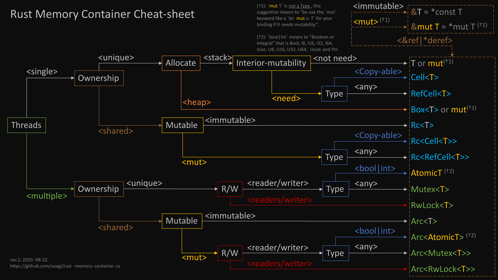

lsys
RUST笔记
- 基本概念
- Trait
- mod
- async
- enum
- collections
- variable
- string<->number
- ownership
- lifetime
- string
- c<->rust
- creat
- macro_rules
- proc-macro
一些概念
泛型
不可继承
可限定:trait
可泛型实现trait
泛型实现trait的泛型可带trait限定
生命周期
存在生命周期生命跟泛型声明时,生命周期参数放前面
可继承[子长过父]
函数带引用参数
输入必须大于输出
结构带引用
'static
局部生命周期可转为'static 如 Box::leak
方法参数中&self的生命周期
不能跟自身相同 否则只能调用一次
方法
静态方法
无类型实现无法调用
对象方法[参数 self||&self||mut self||&mut self ] mut self不能再trait的fn中
无指定类型实现可调用[可根据self推导]
Self 为类型自身
可带泛型
可带生命周期
引用参数标识生命周期
trait
可以继承
无属性
可带方法
使用需实现到类型或泛型
可带泛型
可带生命周期
dyn trait [注意是类型不是trait,所以可以 impl traitname for dyn name]
可将实现类型转为dyn trait 对象[可非安全转回]
可给dyn trait 增加方法
返回分发 Box<dyn triat> 和 impl trait
操作符也是trait
内部泛型[内部type]
struct||enum [实体]
不可继承
可带属性
可带方法
实现trait
不可多次和远程实现
可实现多个
重名方法调用指定trait
可判断是否实现某类型
可带泛型
内嵌泛型实现两[实体]联合 xx<xx> [一级继承]
可带生命周期
字段引用标识生命周期
泛型+生命周期且字段未使用 PhantomData
Drop trait 实现
约束 Trait
基本示例
trait Atest{ fn aa0(self); // fn aa1(mut self);//错误:trait不可以存在可变实体变量 // fn aab(mut a: Aa);//错误:trait不可以存在可变实体变量 fn aa2(&self); fn aa3(&mut self); //fn st2()->impl Debug; //错误:impl trait 只能对fn跟实体方法返回 trait 用Box<dyn trait>返回 } #[derive(Debug)] enum etest1{ A(i32), B(f64) } trait a<T>{ } trait b<T>:a<T>{//带泛型继承 } trait ttest1{ //方法名不可相同.跟CPP不一样,同名方法要多态用泛型实现 fn fn1(&self)->i32;//引用,可多次 fn fn2(self)->i32;//只执行一次 } trait ttest2:ttest1{//继承 fn fn3(&self)->i32{ //注意: self为引用 &self 为引用的引用 return 1; } } impl ttest1 for etest1{ fn fn1(&self) -> i32 { if let etest1::A(x) =*self{//模式匹配得到数据 return x; } return 0; } fn fn2(self) -> i32 { return 1; } } impl etest1{ fn fn4(){} } impl ttest2 for etest1{}//继承实现,增加功能 fn main() { let s=etest1::A(1); s.fn1(); s.fn3(); s.fn2(); etest1::fn4(); }
trait 不的函数不支持返回 impl Trait 类型,用Box<dyn *>返回
use std::future::Future; use std::pin::Pin; struct Sk<'c>{ a:&'c str } struct Sa{} trait Ta{ //trait 的方法不支持 impl 返回 fn aa<'c>(&self,sss:&'c str)->Pin<Box<dyn Future<Output=Sk<'c>>+'c>>; } impl Ta for Sa{ fn aa<'c>(&self,sss:&'c str) ->Pin<Box<dyn Future<Output=Sk<'c>>+'c>>{ let a=Sk{ a:sss }; Box::pin(async move {a}) } } #[tokio::main] async fn main() { let sa=Sa{}; let b="ddd".to_string(); let b=b.as_str(); let m=sa.aa(b).await.a; println!("{}",m); }
带限制泛型实现trait
trait aa{ fn out(&self)->i32{ return 1; } } trait tl{} impl<T:tl> aa for T{}//给实现了tl的trait对象实现aa trait 注意:如果没限制会加到所有类型上 struct dome1{} impl tl for dome1{}//dome1实现了 tl 所以实现aa fn main() { (dome1{}).out(); }
全局泛型实现trait
trait aa{ fn out(&self)->i32{ println!("ddd"); return 1; } } impl<T> aa for T{}//等于给所有类型加了aa trait的out方法 fn main() { "aa".out(); 1.out(); }
全局泛型多个相同方法trait实现
trait aa{ fn out(&self)->i32{ println!("ddd"); return 1; } } trait bb{ fn out(&self)->i32{ println!("ddd"); return 1; } } impl<T> aa for T{}//等于给所有类型加了aa trait的out方法 impl<T> bb for T{}//等于给所有类型加了bb trait的out方法 fn main() { bb::out(&"aa");//多次实现,必须手动指定调用那个trait方法 }
全局泛型跟结构实现方法同名
trait aa{ fn out(&self){ println!("1"); } } impl<T> aa for T{}//等于给所有类型加了aa trait的out方法 struct dome1{} impl dome1{ fn out(&self){//跟全局泛型有同名out方法,会覆盖全局泛型方法 println!("2"); } } fn main() { (dome1{}).out(); "22".out(); }
dyn trait 对象和结构对象转换
struct aa{} impl aa{ fn aaa(&self){ println!("ddd"); } } trait bb{} impl bb for aa{} fn main() { let m=aa{}; let b= &m as &bb;//转为 dyn trait 对象 let c:&aa; unsafe { c=&*(b as *const dyn bb as *const aa); }//dyn trait对象转为指定类型对象,自行保证类型安全 c.aaa();//转为指定类型对象后调用该类型方法 }
判断是否某类型 && 泛型直接调用
#![allow(unused)] fn main() { println!("{}",(&"dddd" as &Any).is::<i32>());//判断是否实现某类型 struct Atest{} struct Atest1{} println!("{}",(&Atest{} as &Any).is::<Atest1>());//判断自定义类型 //注意 : 无法实现判断是否实现某 trait }
动态triat对象返回 Box<dyn triat> [动态分发]
trait ttest1{ fn out(&self); } struct test1{} impl ttest1 for test1{ fn out(&self){ println!("test fn1"); } } struct test2{} impl ttest1 for test2{ fn out(&self){ println!("test fn2"); } } fn out(i:i32)->Box<dyn ttest1>{//返回动态对象方法 Box<dyn trait> if(i>0) { return Box::new(test1 {}); }else{ return Box::new(test2 {}); } } fn main() { let b=out(1);//返回动态对象 可以用any判断是什么对象 b.out(); let b=out(0);//返回动态对象 b.out(); }
impl trait对象返回静态分发,闭包就是其中一个实现
use std::iter; use std::vec::IntoIter; // This is the exact same function, but its return type uses `impl Trait`. // Look how much simpler it is! fn combine_vecs( v: Vec<i32>, u: Vec<i32>, ) -> impl Iterator<Item=i32> { v.into_iter().chain(u.into_iter()).cycle() } fn main() { let v1 = vec![1, 2, 3]; let v2 = vec![4, 5]; let mut v3 = combine_vecs(v1, v2); assert_eq!(Some(1), v3.next()); assert_eq!(Some(2), v3.next()); assert_eq!(Some(3), v3.next()); assert_eq!(Some(4), v3.next()); assert_eq!(Some(5), v3.next()); println!("all done"); }
通过 trait 实现类型约束
#![allow(unused)] fn main() { trait typeLimitTrait{}//自定义约束用trait impl typeLimitTrait for i32 {}//实现某类型 impl typeLimitTrait for f32 {}//现某类型 fn out1<T:typeLimitTrait>(a:T)->T{//限定泛型 return a; } }
模拟多态
#![allow(unused)] fn main() { trait MT1<Ttest>{ fn t1(a:Ttest){} } struct ST1{} impl MT1<i32> for ST1{ fn t1(a:i32){} } impl MT1<i8> for ST1{ fn t1(a:i8){} } }
同类型操作符重载
struct Foo { value:i32 } impl Add for Foo{ type Output = Self; fn add(mut self, rhs: Self) -> Self::Output { self.value=self.value+rhs.value; self } } fn main() { let mut x = Foo { value: 10 }; let mut b = Foo { value: 10 }; let c=x+b; }
不同类型操作符重载和泛型限定
struct Foo { value:i32 } impl Add<i32> for Foo{ type Output = i32; fn add(mut self, rhs: i32) -> Self::Output { return self.value+rhs; } } //注意!!!! 限定 Add<i32,Output=i32> 而不是 Add<i32> //如果限定为 Add<i32> 则输出为 Add<i32>::Output 而不是 i32 因为 Add<i32>未指定 Output fn add<T:Add<i32,Output=i32>>(a:T)->i32{ let b=a+1;//可以+i32 是因为实现了 Add<i32> // 输出 b 为i32 是因为: // Add<i32,Output=i32> 让输入参数的返回为i32 // impl Add<i32> for Foo 的 type Output = i32; // 让a+1 返回为i32 // 以上都是必须的 return b; } fn main() { println!("{}",add(Foo { value: 10 })); //Foo { value: 10 }+10 返回 i32 是因为 impl Add<i32> for Foo 的 type Output = i32; //注意跟 add 函数中的区别 println!("{}",Foo { value: 10 }+10); }
带泛型triat实现
//trait 泛型 T1=i8 表示默认泛型 trait Dome1<T,T1=i8>{ //如果用作泛型限制,OUT1跟OUT2可以指定 // 不指定,调动完test1 的类型为 Dome1<T,T1=i8>::OUT1 // 指定 T:Dome1<T,T1=i8,OUT1=i8,OUT2=i16> 调动完test1 的类型为 i8 type OUT1;//内部泛型,实现时不写在外部 type OUT2;//注意:使用不能是 OUT2 必须为 Self:: 方式 例如 Self::OUT2 fn test1(&self,a:T,b:T1)->Self::OUT1;//Self 表示当前类型 fn test2(&self,a:T,b:T1)->Self::OUT2; } #[derive(Debug)] enum MYENUM{ a=1 } //全部指定类型trait实现 //指定T=i32,T1=i8实现 impl Dome1<i32,i8> for MYENUM{ type OUT1=i32; type OUT2=i8; fn test1(&self,a: i32, b: i8) -> Self::OUT1 {//Self 表示当前类型 即:MYENUM return a + b as i32; } fn test2(&self,a: i32, b: i8) -> Self::OUT2 { //&self 表示当前示例引用 可以 . 方式调用 return a as i8 + b ; } } #[derive(Debug)] enum MYENUM1{ a=1 } //使用Dome1默认的泛型trait实现 impl Dome1<i32> for MYENUM1{ type OUT1=i32; type OUT2=i8; fn test1(&self,a: i32, b: i8) -> Self::OUT1 { return a + b as i32; } fn test2(&self,a: i32, b: i8) -> Self::OUT2 { return a as i8 + b ; } } #[derive(Debug)] enum MYENUM2{ a=1 } //实现时使用泛型方式实现泛型trait在指定类型 impl<T> Dome1<T> for MYENUM2{ type OUT1 = T; type OUT2 = i8; fn test1(&self, a: T, b: i8)->Self::OUT1{ return a; } fn test2(&self, a: T, b: i8) ->Self::OUT2 { return b; } } fn test1<T>(a:T)->i32 //where方式 //注意:用作限定时 内部OUT*不是必须写的 where T:Dome1<i32,i8,OUT1=i32>+Debug{ return a.test1(1,2); } fn main() { let a=MYENUM1::a; a.test1(1,2); let b=MYENUM::a; test1(b); let c=MYENUM2::a; c.test1(1, 2);//泛型自动推导 }
指定某泛型类型调用
trait Ltrait{ fn test(&self); } impl Ltrait for i8{ fn test(&self) { println!("i8"); } } impl Ltrait for i32{ fn test(&self) { println!("i32"); } } fn bstest<T:Ltrait>(a:T){ //限制 a的可传入类型 a.test(); } fn main() { 1i32.test();//调用已被赋值到类型方法 1i8.test();//调用已被赋值到类型方法 bstest::<i8>(1);//指定 Ltrait for i8 实现调用 // 全局泛型实现的指定类型调用 println!("{}",<f32>::from(1.0));//指定数据类型泛型调用 }
往dyn trait对象增加方法
#![allow(unused)] fn main() { #[test] fn test1(){ trait Aa{} struct Bb{} impl Bb{ fn out(&self){ println!("aa"); } } impl Aa for Bb{} impl dyn Aa{ //改动态对象增加方法 fn out(&self){ println!("bb"); } } let b=Bb{}; b.out();//调动到Bb的out方法 (&b as &dyn Aa).out();//调用到 dyn Aa的方法 } #[test] fn test2(){ trait Aa{} trait Ac{ fn out(&self); } struct Bb{} impl Aa for Bb{} impl Ac for dyn Aa{ //改动态对象增加triat实现 //实现Aa的方法存在out方法名时需指定triat调用 fn out(&self){ println!("bb1"); } } let b=Bb{}; (&b as &dyn Aa).out(); } #[test] fn test3(){ trait Aa{ fn out(&self); } trait Ac{ fn out(&self); } struct Ba{} impl Aa for Ba{ //实现 trait fn out(&self){ println!("aa"); } } impl Ac for dyn Aa{ //动态对象重新实现某方法,需要指定该triat调用 //跟实现多个triat存在重名方法一致. fn out(&self){ Aa::out(self); println!("bb"); } } let b=(&Ba{} as &dyn Aa); Aa::out(b); b.out();//等于调用 Aa::out(b); Ac::out(b);//修改动态对象的指定方法 } }
PhantomData 使用
fn main() {
struct Aa<T>{
a:i32,
_marker:std::marker::PhantomData<T>
}
Aa{
a: 0,
_marker:std::marker::PhantomData::default()
}
as Aa<i32>;//运行时泛型具体到某类型 PhantomData 类型未知,所以运行时不指定将出错
}
通过泛型实现类型一级继承
struct Ptype<SUBTYPE>{ _marker:std::marker::PhantomData<SUBTYPE> } impl<SUBTYPE> Ptype<SUBTYPE>{ fn new()->Self{ Ptype{ _marker:std::marker::PhantomData::default() } } } struct Sub1Type{} impl Ptype<Sub1Type>{ fn aa(&self)->i32{ return 1; } } struct Sub2Type{} impl Ptype<Sub2Type>{ fn bb(&self)->i32{ return 2; } } fn main() { print!("{}",(Ptype::new() as Ptype<Sub1Type>).aa()); print!("{}",(Ptype::new() as Ptype<Sub2Type>).bb()); } #[test] fn test1(){ struct A<SUBTYPE>{ _marker:std::marker::PhantomData<SUBTYPE> } let t1:A<i32>=A{_marker:Default::default()};#运行时得到类型 } //struct MYTYPE<SUBTYPE> // SUBTYPE:LIMIT_TRAIT // 实现 LIMIT_TRAIT 一批子类型增加方法实现 // SUBTYPE指定类型实现
无指定类型实现trait调用问题
trait aaa1{ fn out(){} } trait aaa2{ fn out(&self){ } } impl<T> aaa1 for T{} impl<T> aaa2 for T{} fn main() { //aaa1::out(); //cannot infer type aaa2::out(&1);//能推导出当前附属到的类型 }
复合类型中泛型限定方法增加
#![allow(unused)] fn main() { trait Mlimit{} //impl<T> Mlimit for T{} //最顶层泛型 全局泛型实现 struct Mytest<T1> {a:T1} //impl<T1:Mlimit> Mlimit for Mytest<T1> {} //类型实现 trait //impl<T3> Mytest<T3>{}//类型增加方法 impl<T3:Mlimit> Mytest<T3>//给类型内部泛型限定下增加该类型方法 { fn fn1(self) {} } impl Mlimit for i32{} (Mytest{a:1}).fn1(); }
泛型使用时不能做特化处理
trait IDB {} struct IMY1 {} impl IDB for IMY1 {} struct IMY2 {} impl IDB for IMY2 {} fn bind1<T: IDB>(_: T) {} struct F1<DB:IDB>{_tmp:DB} impl <DB:IDB>F1<DB>{ fn _myexec(_:DB) { //泛型不能特化处理 //bind1::<DB>(IMY1{}); } } impl F1<IMY1>{ fn myexec() { bind1(IMY1{}); } } impl F1<IMY2>{ fn myexec() { bind1(IMY2{}); } } fn main() { F1::<IMY1>::myexec(); F1::<IMY2>::myexec(); }
泛型约束示例
trait IDB {} struct IMY{} impl IDB for IMY{} trait Encode<DB:IDB> {} struct Query<DB:IDB>{ _a:DB } impl <DB: IDB> Query<DB> { fn bind1<T:Encode<DB> >(&self, _: T) {} } impl Encode<IMY> for i32 {} fn main() { fn myexec<DB:IDB>(pool:DB) where i32:Encode<DB> //加约束实现泛型替换关联 { let res =Query{_a:pool}; res.bind1(1); } myexec::<IMY>(IMY{}); }rs
模块 mod
参考文件目录结构:
/src
/src/dome1
/src/dome1/mod.rs #文件夹mod入口约定文件,在这里包含子mod
/src/dome1/doma.rs #基于文件的mod,在mod.rs引入此文件
/src/domb.rs #基于文件的mod,在mod.rs引入此文件
/src/gdoma.rs #基于文件的mod
/src/lib.rs #当外部mod用,入口约定文件 生成文件名:lib+[包名:package.name]
/src/main.rs #存在此文件会编译可执行文件
引入mod和使用
#![allow(unused)] fn main() { //引入外部mod //extern crate bba; //导入宏,这样导入调用宏时不用写mod名 #[macro_use] extern crate bba; //引入内部文件夹mod mod dome1; //引入内部文件mod mod gdoma; //在当前使用其他mod中定义宏,直接用不带mod名 #[macro_use] mod domb; //使用非本文件[trait fn struct enum等]声明,方法如下: //use bba::*;//外部库批量声明 use dome1::domep as bbb;//使用别名声明 use std::borrow::{BorrowMut, Borrow};//指定声明 //#[macro_use] // 1.用在外部crate时,该crate的下的导出宏不用改crate名使用 // 2.用在内部mod下时,可以直接使用该mod下定义的宏,也是唯一使用子mod下非#[macro_export]宏的方式 // 3.不同crate下 宏必须使用 #[macro_export] 导出,外部才能用 }
宏声明
#![allow(unused)] fn main() { //外部crate可用宏 #[macro_export] 等于直接把宏放置于crate根节点 #[macro_export] macro_rules! test{()=>()} //宏使用当前包函数等 $crate pub fn increment(x: u32) -> u32 { x + 1 } macro_rules! inc { ($x:expr) => ( $crate::increment($x) ) } }
单文件多个mod,可见性控制 [/src/gdoma.rs]
#![allow(unused)] fn main() { pub mod aaa{ // trait 整体控制,不可到fn pub trait tdome1{//外部可见 fn t1fn(&self); } trait tdome2{//外部不可见,对象试下以下方法包外部不可用 fn t2fn(&self); } //属性单独控制可见性 pub struct dome1{//字段 如果有一个非pub 将不可外部实例化 pub a:i32, pub b:i32, } //方法单独控制可见性 impl dome1{ pub fn aaa(&self){//外部可访问 self.bbb(); } fn bbb(&self){//外部可访问 self.bbb(); } } impl tdome1 for dome1{//实现 pub trait tdome1 方法都外部可见 fn t1fn(&self) {} } impl tdome2 for dome1{//实现 pub trait tdome1 方法外部都不可见 fn t2fn(&self) {} } pub fn gdoma(){//外部可访问 println!("gdoma"); } pub mod bbb{ pub fn gdoma(){ self::gdomb();//self:: 自身mod } pub fn gdomb(){ println!("gdomb"); } pub mod ccc{ pub fn gdoma(){ super::super::gdoma();//super:: 上级mod } } } pub mod bbb1{ pub fn gdoma(){ crate::gdoma::aaa::gdoma();//crate:: 项目根,非当前文件 } } } }
异步
async
执行器过程:
-
由IO复用或定时阻塞的
轮训循环 -
在循环内调用 future 的poll方法[传入触发完成的回调函数的上下文Context]
//`轮训循环` 循环内的伪代码: let task = Arc::new(Task {});//TASK 必须实现 ArcWake let waker = waker_ref(&task); let context = &mut Context::from_waker(&*waker);//传给 poll future.boxed().as_mut().poll(context); //同时将waker 挂载到future 属性上//完成时从futrue的属性上获取到waker并调用 waker.wake() 后会进入以下函数 impl ArcWake for Task { fn wake_by_ref(arc_self: &Arc<Self>) { //完成触发后会进入这里 //这里触发来源:自定义future的poll函数内的回调挂载的:context.waker().clone() 同时挂载到future属性 //这里触发时,`轮训循环` 一般进入等待状态 //这里进行某些操作后,`轮训循环`得于继续运行并调用poll } } -
全部完成时结束循环
future 分类
-
async 代码转换实现future
let a=async{//跟闭包类似,可以return返回 let b=async{}; b.await; //遇到 await 时,会调用对应future的poll函数 //如果函数返回 Pending,会一直返回到 最顶层 `轮训循环` //因为自定义的poll函数内不会有 await 语法, //所以返回 Pending时可以保证在一直返回到最顶层 //如果函数返回Ready,继续async块的代码执行 //二次进入：（resume）时： //先到async块，然后跳转到跳出时的await位置 //在根据get_context(cx:ResumeTy) 得到cx并从中获取上次跳出时的 future //再次调用该future的poll方法 };//async块的转换的 future 是包含生成器(gen) //async块的转换的 future poll 一般会多于2次进入 //自定义的future的一般就2次，一次等待一次完成 //async块的转换的 future poll 函数内容如下： //由生成器的 gen.resume 实现运行由poll的内容到 async{这里的内容} 的跳转运行 //async块的转换的 future poll 本身不会有暂停或阻塞的情况出现 let gen = unsafe { Pin::map_unchecked_mut(self, |s| &mut s.0) }; match gen.resume(ResumeTy(NonNull::from(cx).cast::<Context<'static>>())) { GeneratorState::Yielded(()) => Poll::Pending,//保证返回到`最顶层循环`代码 GeneratorState::Complete(x) => Poll::Ready(x),//完成时返回 } -
自定义 future 实现 impl Future
impl Future for TimerFuture { type Output = (); fn poll(self: Pin<&mut Self>, cx: &mut Context<'_>) -> Poll<Self::Output> { //自定义future一般只会进入2次 //第1次 //如果未完成,返回:Poll::Pending 这里一般是需要暂停或阻塞情况 //同时挂载回调函数 = Some(cx.waker().clone());//这个挂载可在其他线程或内部一些异步IO库中 //第2次 //完成时poll返回:Poll::Ready(()) //await一定是在async的异步代码中,所以这里不会有await情况 //除非实现类似async块的转换的 future 的结构(gen)否则不会大于2次进入poll函数 } }
future的内部转换
async => future{
//异步函数的过程内容转为POLL过程内容，类似闭包
//局部变量转为属性[有局部变量引用时候存在问题,所以有pin]
//函数调用转为一个struct[类似闭包转换]挂到属性.
}
//Future转换过程
Future{
state//状态机,跟踪进度用 跳转到那个await
a//局部变量转为普通变量
struct b//内部函数调用转为结构
Future c//遇到 await 转为Future结构挂载到属性
fn poll(self: Pin<&mut Self>, cx: &mut Context<'_>) -> Poll<Self::Output>{
//async 代码转换实现future 内部实现 代码省略
}
}
async块Result类型指定返回
#![allow(unused)] fn main() { let a=async{return Result::<i32,i32>::Ok(2)};//<>操作符 }
Pin加Unpin实现:
#![allow(unused)] fn main() { fn execute_unpin_future(x: impl Future<Output = ()> + Unpin) {} let fut = async {}; let fut = Box::pin(fut);//跟使用futrue的boxed方法一样 execute_unpin_future(fut); // OK let fut = async {}; pin_utils::pin_mut!(fut);//跟上面Box::pin(fut)类似 execute_unpin_future(fut); // OK //实现了Unpin表示可以安全移动 一般无内部局部变量引用都实现了Unpin 如常用的基本类型 }
多个async同步
#![allow(unused)] fn main() { struct Book; struct Music; async fn get_book() -> Book { Book } async fn get_music() -> Music { Music } mod join { use super::*; use futures::join; //两个future完成 pub(crate) async fn get_book_and_music() -> (Book, Music) { let book_fut = get_book(); let music_fut = get_music(); join!(book_fut, music_fut) } #[test] fn get_book_and_music_test() { futures::executor::block_on(get_book_and_music()); } } mod try_join { use super::{Book, Music}; use futures::try_join; //两个future完成,其中一个返回失败立即返回 async fn get_book() -> Result<Book, String> { /* ... */ Ok(Book) } async fn get_music() -> Result<Music, String> { /* ... */ Ok(Music) } async fn get_book_and_music() -> Result<(Book, Music), String> { let book_fut = get_book(); let music_fut = get_music(); try_join!(book_fut, music_fut) } #[test] fn get_book_and_music_test() { futures::executor::block_on(get_book_and_music()); } } mod mismatched_err { use super::{Book, Music}; use futures::{ future::TryFutureExt, try_join, }; async fn get_book() -> Result<Book, ()> { /* ... */ Ok(Book) } async fn get_music() -> Result<Music, String> { /* ... */ Ok(Music) } async fn get_book_and_music() -> Result<(Book, Music), String> { let book_fut = get_book().map_err(|()| "Unable to get book".to_string()); let music_fut = get_music(); try_join!(book_fut, music_fut) } #[test] fn get_book_and_music_test() { futures::executor::block_on(get_book_and_music()); } } mod example { // ANCHOR: example use futures::{ future::FutureExt, // for `.fuse()` pin_mut, select, }; async fn task_one() { /* ... */ } async fn task_two() { /* ... */ } //select等待 async fn race_tasks() { let t1 = task_one().fuse(); let t2 = task_two().fuse(); pin_mut!(t1, t2); select! { //返回=future=>操作 () = t1 => println!("task one completed first"), () = t2 => println!("task two completed first"), } } #[test] fn race_tasks_test() { futures::executor::block_on(race_tasks()); } } mod default_and_complete { use futures::{future, select}; async fn count() { let mut a_fut = future::ready(4); let mut b_fut = future::ready(6); let mut total = 0; loop { select! { a = a_fut => total += a, b = b_fut => total += b, complete => break,//全部完成 //default 在这里不会生效,因为 future::ready 是终止的 default => unreachable!(), // future都是未完成且非终止的进这里,需要通过自己的future.await 处理 }; } assert_eq!(total, 10); } #[test] fn run_count() { futures::executor::block_on(count()); } } mod channels { use { futures::{ channel::mpsc, prelude::*, }, }; async fn send_recv() { const BUFFER_SIZE: usize = 10; let (mut tx, mut rx) = mpsc::channel::<i32>(BUFFER_SIZE); tx.send(1).await.unwrap(); tx.send(2).await.unwrap(); drop(tx); assert_eq!(Some(1), rx.next().await); assert_eq!(Some(2), rx.next().await); assert_eq!(None, rx.next().await); } #[test] fn run_send_recv() { futures::executor::block_on(send_recv()) } } }
多个future 的遍历
use async_std::task; use futures::{ stream::{Stream, FusedStream}, select, SinkExt, StreamExt, }; use async_std::sync::Arc; use std::time::Duration; async fn add_two_streams( mut s1: impl Stream<Item = i32> + FusedStream + Unpin, mut s2: impl Stream<Item = i32> + FusedStream + Unpin ) -> i32 { let mut total = 0; loop {//select 将多个future合并成一个,生成方式如下:通过实现 FusedFuture::is_terminated 判断时完成处理future //创建合并future的闭包,把上面的多个future放入一个闭包,由闭包内调用future的poll方法 //在根据是否进行default定义进行以下两种处理 //1.未指定:default,把闭包通过 futures::future::poll_fn 转为 future 后进行 future.await ,承接到外部运行时 //2.指定:default,直接调用创建的闭包,如果闭包未返回完成,承接到定义的default里处理 let item = select! {//遍历future x = s1.next() => x, x = s2.next() => x, // default =>{ // 当`未终止`的所有future`都是`Pending 时这里 // 当需要`自定义`都未准备完成时的处理时才定义这里 // return myfuture{}.await;//例如这里的myfuture.await 这样承接到外部运行时 // Some(1) //如果直接返回值,外部用loop循环时会浪费大量CPU.所以一般要定义里面必须会有await // }, complete => break,//future都完成进这 }; println!("select:{:?}",item); if let Some(next_num) = item { total += next_num; } } total } fn main() { task::block_on(async{ let (mut send, mut recv1)= futures::channel::mpsc::channel::<i32>(10); send.send(11).await.unwrap(); send.send(20).await.unwrap(); drop(send); let (mut send, mut recv2)= futures::channel::mpsc::channel::<i32>(10); std::thread::spawn(move ||{ std::thread::sleep(Duration::from_secs(10)); task::block_on(async{ send.send(21).await.unwrap(); send.send(22).await.unwrap(); drop(send); }); }); let t=add_two_streams(recv1,recv2); let t1=t.await; println!("{}",t1); }); }
异步递归调用
#![allow(unused)] fn main() { use futures::future::{BoxFuture, FutureExt}; fn recursive(mut a:i32) -> BoxFuture<'static,i32> { async move { a=a+1; if a<100 { return recursive(a).await; } a }.boxed() } recursive(1).await; }
枚举 enum
枚举中闭包
#![allow(unused)] fn main() { #[derive(Debug)] enum Ta{ A(i32),//类型:参数为i32,返回自身的闭包 A(i32)->Ta B(i32)//类型:参数为i32,返回自身的闭包 } //实现根据类型得到对应类型变量 fn aaa<T:Fn(i32)->Ta>(a:T)->Ta{ a(1) } let k=aaa(Ta::A); println!("{:?}",k); let k=aaa(Ta::B); println!("{:?}",k); }
enmu 示例
enum etest1{ A,//跟C里面的枚举差不多 B(f64),//待参数枚举,用于实现多类型变量 C{a:i32}//结构枚举 } //enum etest1{ // A=2,//如果存在()或struct不可以有赋值,这将报错 // B(f64) //} fn main() { let tvar1=etest1::A; if let etest1::A =tvar1 {//必须模式匹配,不能相等判断 println!("match"); } let tvar1=etest1::C{a:1};//带参数枚举 if let etest1::C{a} =tvar1{ println!("{}",a); } let tvar=etest1::B(0.1);//带参数枚举 //枚举可以通过模式匹配得到枚举里面数据 if let etest1::B(x) =tvar{ println!("{}",x); } }
Option 类型
#![allow(unused)] fn main() { let b=(Some(1)).and_then(|x|Some('1'));//闭包返回更换OPTION类型,返回OPTION let b=(Some(1)).and(Some('c'));//直接替换OPTION类型 let b=(Some(1)).map(|x|{'s'});//闭包返回更换OPTION类型,返回数据 let b=(Some(1)).replace(12);//替换掉值 let b=(Some(1)).filter(||true);//闭包返回真使用当前值,否则变为NONE let b=(Some(1)).or(Some(1));//为NONE是使用指定值 let b=(Some(1)).or_else(||Some(1));//为NONE时闭包返回替换 let b=(Some(1)).ok_or(1);//转为RESULT,不存在时指定数据 let b=(Some(1)).ok_or_else(|x|1);//转为RESULT,不存在时指定闭包返回数据 let b=(Some(1)).take();//返回当前值并用默认值填充 let b=(Some(1)).map_or_else(||1,||2);//根据实际数据闭包返回解包 let b=(Some(1)).map_or(11,|x|{12});//默认值指定,数据根据实际数据闭包返回解包 let b=(Some(1)).expect("xxxx");//指定异常消息解包 let b=(Some(1)).unwrap();//按内部异常消息解包 let b=(Some(1)).xor(None);//异或处理 两个一样时候返回NONE let b=(Some(1)).get_or_insert(1);//判断不存在时候使用指定值插入并解包 let b=(Some(1)).get_or_insert_with(||1);//判断不存在时候使用指定值插入闭包返回并解包 }
Result<T,U>类型
#![allow(unused)] fn main() { pub typeMYResult<T> = Result<T, String>; let b=(MYResult::Ok(1)).and_then(|x|MYResult::Ok('1'));//闭包返回更换OPTION类型,返回OPTION let b=(MYResult::Ok(1)).and(MYResult::Ok('c'));//直接替换OPTION类型 let b=(MYResult::Ok(1)).map(|x|{'s'});//闭包返回更换OPTION类型,返回数据 let b=(MYResult::Ok(1)).or(MYResult::Ok(1));//为NONE是使用指定值 let b=(MYResult::Ok(1)).or_else(|e|MYResult::Err("cc".to_string()));//为NONE时闭包返回替换 let c=(MYResult::Ok(1)).map_err(|x|"xxxx");//错误时回调替换 let b=(Some(1)).filter(|e|true);//闭包返回真使用当前值 let c=(MYResult::Ok(1)).err();//转为OPTION 正常为NONE错误为Some let c=(MYResult::Ok(1)).ok();//转为OPTION,正常为Some 错误为NONE let c=(MYResult::Ok(1)).is_err();//是否错误 let c=(MYResult::Ok(1)).is_ok();//是否正常 let c=(MYResult::Ok(1)).unwrap_err();//解包:解错误包,正常时异常 let c=(MYResult::Ok(1)).unwrap();//解包:错误时异常 let c=(MYResult::Ok(1)).unwrap_or(1);//解包:错误时用指定值代替 let c=(MYResult::Ok(1)).unwrap_or_default();//解包:错误时用默认值 let c=(MYResult::Ok(1)).unwrap_or_else(|x|11);//解包:错误时用指定闭包返回替换 let b=(MYResult::Ok(1)).map_or_else(|e|1,|e|2);//解包:根据实际数据闭包返回解包 let b=(MYResult::Ok(1)).map_or(11,|x|{12});//解包:默认值指定,数据根据实际数据闭包返回解包 }
集合 [collections]
use std::collections::HashMap; fn main() { let bb=[1,2,3];//数组 //let t=bb[4];//抛出异常,不建议直接访问 let mut bbv =Vec::from(bb); //查找 let t=bbv.binary_search(&1); if t.is_ok() { println!("{:?}",t.unwrap()); } //增加 bbv.insert(0,5); bbv.push(11); bbv.extend(vec![1,2,3]);//批量加 //删除 bbv.pop(); bbv.remove(bbv.len()-1); //获取 println!("{:?}",bbv.get(5));//返回Option bbv[1]=111;//注意是否超范围 println!("{:?}",bbv.get(5));//转为vec后可抗访问 //转为迭代器 let t=bbv.into_iter(); //从迭代器还原 let tt=t.collect::<Vec<i32>>(); println!("{:?}",tt);//转为vec后可抗访问 let mut u=vec![1,2,4]; //let t=u[10];//下标引用超范围触发panic，跟切片 数组一样，用get处理 println!("{:?}",u); let mut u1=&u[0..2];//直接获取切片 println!("{:?}",u1); let ss=u.drain(1..3);//获取指定范围迭代器并清理调该数据 println!("{:?}",ss); drop(ss);//结束可变引用 println!("{:?}",u);//剩余未被drain数据 let m=String::from_utf8(Vec::from(b"dddddddd" as &[u8])).expect("dddddd"); let o=&m[0..2];//字符串内部由vec[u8]组成 let result = panic::catch_unwind(|| { let m=10; let s=&u[0..m];//超范围访问捕捉 }); println!("{:?}",result); //合并迭代器 let chaint=vec![1,2].into_iter().chain(vec![2,3,4].into_iter()); for out in chaint { println!("{}",out); } //待索引迭代 let it=vec![1,2,3].into_iter().enumerate(); for (a,b) in it { println!("i:{} data:{}",a,b); } //转为map迭代器 let map=vec![1,2,3].into_iter().map(|e|{ println!("map:{}",e); }); map.collect::<Vec<_>>();//MAP迭代器进行迭代 //附带参数迭代器 let scan=vec![1,2,3].into_iter().scan(10,|initdata,param|{ //initdata 提供的附带数据 10 //param 迭代数据 if param==1 { return Some(param); }else{ return None;//返回0停止迭代 } }); let out=scan.collect::<Vec<_>>();//scan迭代器进行迭代 println!("{:?}",out); //两层vec结构转一层 let out=vec![vec![1, 2, 3, 4], vec![5, 6]].into_iter().flatten(); println!("{:?}",out.collect::<Vec<_>>()); //无限循环不退出,用在对结果多次遍历 let out=vec![1,2,3].into_iter().cycle(); let mut skip =true; for t in out { println!("cycle:{}",t); if t>=3 { skip=false}; if !skip { break;} } //以下两个方法配合用于获取指定范围的迭代器 //skip 跳过指定迭代数量 //take 进行迭代数量 let iter = vec![2,2,3,4,5].into_iter().skip(2).take(1); for t in iter { println!("take:{}",t); } //出现None后,以后都返回none,在自定义迭代器时用 let iter =vec![1,1].into_iter().fuse(); //一个为真返回为真 let any =vec![1,1].into_iter().any(|x|{return x>0}); //跟scan类似.函数式累加 let fold=vec![1,2].into_iter().fold("dd".to_string(),|xx,x|{ return format!("{}{}",xx,x); }); println!("fold:{}",fold); //any collect fold 属于迭代消费器 let a1 = [1, 2, 3]; let a2 = [4, 5, 6]; let mut iter = a1.iter().zip(a2.iter()); assert_eq!(iter.next(), Some((&1, &4))); assert_eq!(iter.next(), Some((&2, &5))); assert_eq!(iter.next(), Some((&3, &6))); assert_eq!(iter.next(), None); let mut map = HashMap::new(); map.insert("a", 1); map.insert("b", 2); let iter = map.iter();//迭代器 for (key,val) in iter { println!("key:{}-val:{}",key,val); } println!("{:?}",map.keys());//返回KEY let iter = map.drain();//清空并创建迭代器 可变借用,迭代前不可访问 for (key,val) in iter { println!("key:{}-val:{}",key,val); } println!("{:?}",map); //字符串迭代器处理 let bb="tt|tt"; let cc="tt1|tt1"; let split=bb.split("|"); println!("{:?}",split.clone().collect::<Vec<&str>>()); let chain=split.chain(cc.split("|")); println!("{:?}",chain.collect::<Vec<&str>>()); }
自定义迭代器
fn main() { //自定义迭代器实现 struct aa<i32>{ data:Vec<i32>, iter:usize } impl Iterator for aa<i32>{ type Item = i32; fn next(&mut self) -> Option<Self::Item> { if self.iter<self.data.len() { let t: i32 =self.data[self.iter]; self.iter+=1; return Some(t); }else{ return None; } } // fn size_hint(&self) -> (usize, Option<usize>) { (self.data.len(), None) //已明确知道的元素数量，可能的最大元素数量（无法确认none） //未迭代的迭代器 已知道元素为0 //但可能最大元素为总数 } } let b=aa{ data:vec![1,1,2], iter:0 }; for cc in b { println!("{}",cc); } }
迭代时元素增加代替
fn main() { let a=vec![1,2];//进行迭代时没所有权,不能往vec增加元素 let mut tmp:Vec<i32>=vec![];//所以使用另一个vec来存储迭代时新增要迭代数据 // 等于再次迭代这个新增的迭代器里数据来模拟往a里新增效果 loop{ let lop; if tmp.len()>0 { lop=tmp.clone().into_iter(); tmp.clear(); }else{ lop=a.clone().into_iter(); } for core in lop { if core<=1 {//符合某些规则时新增迭代数据 tmp.push(10);//继续往下处理迭代的新增数据 } } if tmp.len()==0 {break} } }
变量
#![allow(unused)] fn main() { //可以放在代码任何地方,变量不可在最外层 const var1:i32=1;//常量:非固定内存地址,不可改动 static mut a:i32=1;//静态变量:固定内存地址,mut为不安全数据,只赋值一次 let u8=b'z';//u8类型定义 }
所有权类型仅BOX可以解引用
#![allow(unused)] fn main() { let b=Box::new(aa{});//非复制类型 let c=*b;//b 不在可用 //默认 Box<T+'static>; 如果T非'static 需主动声明 Box<T+'c> }
Deref需返回引用
#![allow(unused)] fn main() { impl Deref for YOUSTRUCT{ fn deref(&self) -> &YOUSTRUCT { &**YOUSTRUCT; } } }
不可COPY元素数组初始化
#![allow(unused)] fn main() { let c:[Option<Box<i32>>;10]=Default::default();//[None;10]; }
常用函数说明
borrow|borrow_mut 跟 & | & mut 一致
Option 的as_ref|as_mut 对包内部数据的包裹内引用,基本类型没这方法_
Box 的as_ref|as_mut 为得到内部包数据的引用,基本类型没这方法
不可拷贝数据注意所有权问题
#![allow(unused)] fn main() { //as_ref as_mut 同外壳的内部引用[Option] 或 直接对壳内的数据引用[Box] let a=Result::<i32,i32>::Ok(1); let b=a.as_ref(); let a=Some(1); let b=a.as_ref(); //borrow borrow_mut 轻量级引用[所有类型都实现] 大部分 等于 等于 & //某些类型 如 String Box 的 borrow 等于 待壳引用和不带壳引用[取决于返回类型定义] 大于 & use std::borrow::{Borrow, BorrowMut}; let mut a =Result::<i32,i32>::Ok(1); let b=a.borrow(); let b=&a; let a=&Some(1); let b=a.borrow(); #[derive(Eq, PartialEq)] struct Aa{}; let a=Aa{}; assert!(a.borrow()==&a); //示例说明 let mut a =Some(1); let b:&Option<i32>=&a; let b:&Option<i32>=a.borrow();//等价于 &a一样 let b:&mut Option<i32>=&mut a; let b:&mut Option<i32>=a.borrow_mut();//等价于 &mut a 一样 let b:Option<&i32>=a.as_ref();//得到 Option<&i32> 不可变引用 let b:Option<&mut i32>=a.as_mut();//得到 Option<&i32> 可变引用 let mut c=Box::new(1); let b:&mut Box<i32>=&mut c;//BOX的可变引用 println!("{}",c); let b:&mut Box<i32>=c.borrow_mut();//等价于 &mut c println!("{}",c); let b:&i32=c.as_ref();//得到包裹内值引用 let b:&mut i32=c.as_mut();//得到包裹内值可变引用 *b=4;//修改可变引用值 println!("{}",c); let mut t=*c;//可复制值解包为复制 t=5;//解引用在修改值 println!("{}",c); }
字符串变量
fn main() { let o:&'static str = "dddd"; let b=o.to_string(); let c=b.as_str(); let b1=c.to_string(); let c1=b1.as_str(); let k=o.as_ptr(); let k1=c.as_ptr(); let k2=c1.as_ptr(); //k != k1 !=k2 //每次to_string 都创建新的对象 println!("finish"); }
借用需要所有权获得
fn aaaa(mut a:&mut String){
//let t=*a;//借用数据不可转移所有权
let mut b=a.to_owned();//通过拷贝方式得到所有权
println!("{:>}",b);
*a="vff".to_string();//不转移所有权情况下修改
}
let mut bddd=&mut "sss".to_string();
aaaa(bddd);
转为位置大小类型
#![allow(unused)] fn main() { trait Aa{}; struct Baaa{}; impl Aa for Baaa{} //let a= Baaa{} as dyn Aa;//错误 a 栈变量，必须知道大小 //let a= Box::new(Baaa{} as dyn Aa）;//错误 临时变量为 栈变量，必须知道大小 let a=Box::new(Baaa{} ) as Box<dyn Aa>;//正确，Box知道大小，内部为堆变量，可未知大小 fn aaa(a: Box<dyn Aa>){} aaa(a); let b=&Baaa{} as &dyn Aa;//正确，a为引用指针栈变量，知道大小 fn bbb(a: &dyn Aa){} bbb(b); //当类型为未知大小要转类型时可用 & 或 Box 封装 }
各种环境变量使用和示例

单线程 单所有权 栈 整体不变:T 整体可变:mut T 内部可变: 可复制:Cell<T> 不可复制:RefCell<T> 堆:Box<T> 多所有权 不变:Rc<T> 可变: 可复制:Rc<Cell<T>> 不可复制:Rc<RefCell<T>> 多线程 单所有权 单读单写 BOOL或INT类型:AtomicT[Bool,i8,i16,i32,i64,isize,u8,u16,u32,usize,ptr] 任意类型:Mutex<T> 多读单写:RwLock<T> 多所有权 [多线程必须包一下] 不变:Arc<T> 可变: 单读单写 BOOL或INT类型:Arc<AtomicT> 任意类型:Arc<Mutex<T>> 多读单写:Arc<RwLock<T>>
use std::thread; use std::cell::{Cell, RefCell}; use std::env::var; use std::rc::Rc; use std::borrow::{Borrow, BorrowMut}; use std::sync::atomic::{AtomicI32, Ordering}; use std::sync::{Mutex, RwLock}; use std::sync::mpsc::channel; fn main() { var1(); var2(); var3(); var4(); var5(); var6(); var7(); var8(); var9(); var10(); var11(); var12(); var13(); var14(); } fn var14(){ //进程间数据传递 let (tx, rx) = channel(); let tx1=tx.clone(); let t1=thread::spawn(move||{//会把tx所有权转移入闭包,进程退出时释放 tx.send(11).unwrap(); }); t1.join().unwrap(); let t2=thread::spawn(move ||{//会把tx1所有权转移入闭包,进程退出时释放 tx1.send(12).unwrap(); }); t2.join().unwrap(); //Sender会在进程时释放 //使用 rx.iter() 生产者必须完成释放,否则进入阻塞 for a in rx.iter(){ println!("{}",a); } } fn var13(){ //多线程[任意类型]读写 #[derive(Debug)] struct rgt{a:i32} let mg:Arc<RwLock<rgt>>=Arc::new(RwLock::new(rgt{a:1})); let img1=mg.clone(); let t1=thread::spawn(move||{ let mut t=img1.write().unwrap(); t.a=10; }); let img2=mg.clone(); let t2=thread::spawn(move ||{ let mut t=img2.write().unwrap(); println!("{:?}",t.a); t.a=11; }); t2.join().unwrap(); t1.join().unwrap(); println!("{:?}",mg.read().unwrap().a); } fn var12(){ //多线程[任意类型]锁定 #[derive(Debug)] struct mgt{a:i32} let mg:Arc<Mutex<mgt>>=Arc::new(Mutex::new(mgt{a:1})); let img1=mg.clone(); let t1=thread::spawn(move||{ let mut t=img1.lock().unwrap(); println!("{:?}",t); t.a=10; }); let img2=mg.clone(); let t2=thread::spawn(move ||{ let mut t=img2.lock().unwrap(); println!("{:?}",t); t.a=11; }); t2.join().unwrap(); t1.join().unwrap(); println!("{:?}",mg.lock().unwrap()); } fn var11(){ //多线程[整数 布尔] 可变 let mg:Arc<AtomicI32>=Arc::new(AtomicI32::new(11)); let img1=mg.clone(); let t1=thread::spawn(move||{ img1.fetch_add(1,Ordering::Relaxed); println!("{}",img1.load(Ordering::Relaxed)); }); let img2=mg.clone(); let t2=thread::spawn(move ||{ img2.fetch_add(1,Ordering::Relaxed); println!("{}",img2.load(Ordering::Relaxed)); }); t2.join().unwrap(); t1.join().unwrap(); println!("{}",mg.load(Ordering::Relaxed)); } fn var10(){ //多线程不可变 let mg:Arc<i32>=Arc::new(1); let img1=mg.clone(); let t1=thread::spawn(move||{ println!("{}",img1); }); let img2=mg.clone(); let t2=thread::spawn(move ||{ println!("{}",img2); }); t2.join().unwrap(); t1.join().unwrap(); } fn var9(){ //多线程唯一所有权 //Mutex 不能 static let tmg:Mutex<i32>=Mutex::new(1); { let mut b=tmg.lock().unwrap(); *b=101; println!("{}",b); } } //Atomic*系列变量 static ag:AtomicI32=AtomicI32::new(11); fn var8(){ //多线程全局简单变量[bool或int][可变] let t1=thread::spawn(move ||{ ag.fetch_add(1,Ordering::Relaxed); println!("{}",ag.load(Ordering::Relaxed)); }); let t2=thread::spawn(move ||{ ag.fetch_add(1,Ordering::Relaxed); println!("{}",ag.load(Ordering::Relaxed)); }); t1.join().unwrap(); t2.join().unwrap(); } fn var7(){ //多所有权可变 引用可变 #[derive(Debug)] struct at{ a:i32 } fn myd(t:Rc<RefCell<at>>){} let a =Rc::new(RefCell::new(at{a:1}));//a有所有权 let b=a.clone();//b有所有权 let c=Rc::downgrade(&a);//c 没有所有权 一般用在重复引用如链表 //包里的方法有重复 as &RefCell<at> 强制转义 (a.borrow() as &RefCell<at>).borrow_mut().a=111; println!("{}",(a.borrow() as &RefCell<at>).borrow().a);//访问 //对无所有权的获取和赋值 //注意:需要转移 as Rc<RefCell<at>> 不然编译器无法识别对应类型 ((c.upgrade().unwrap() as Rc<RefCell<at>>).borrow() as &RefCell<at>).borrow_mut().a=1111; println!("{}",(a.borrow() as &RefCell<at>).borrow().a);//访问 myd(b);//消耗b myd(a);//消耗a } fn var6(){ //多所有权可变 非引用可变 fn myd(t:Rc<Cell<i32>>){} let a=Rc::new(Cell::new(11));//a有所有权 let b=a.clone();//b有所有权 let c=Rc::downgrade(&a);//c 没有所有权 一般用在重复引用如链表 a.replace(12); println!("{}",a.get());//访问 println!("{:?}",c.upgrade().unwrap().replace(13)); println!("{}",a.get());//访问 myd(b);//消耗b myd(a);//消耗a } fn var5(){ //多所有权不可变 #[derive(Debug)] struct at{ a:i32 } fn myd(t:Rc<at>){} let a=Rc::new(at{a:1});//a有所有权 let b=a.clone();//b有所有权 println!("a initial rc count = {}", Rc::strong_count(&a)); let c=Rc::downgrade(&a);//c 没有所有权 一般用在重复引用如链表 println!("a initial rc count = {}", Rc::strong_count(&a)); //弱引用没所有权,通过 c.upgrade() 方法拿到弱引用对象 //当对象未释放时返回,释放时返回none,所以弱引用可以没有所有权 println!("{:?}",c.upgrade().unwrap().a); println!("{}",a.a);//可直接访问 //a.a=2;//不可变 myd(b);//消耗b myd(a);//消耗a //c.upgrade().unwrap();//这里取弱引用时拿不到 对象已被释放 } fn var4(){ fn out()->Box<i32>{ //堆中内存分配 let a=Box::new(11); //非栈拷贝,返回胖指针 return a; } //t为在堆中内存 let t=out(); println!("{}",t); } fn var3(){ #[derive(Debug)] struct at{ a:i32 } let t=at{a:1}; //a外部不可变 内部可变 let a=RefCell::new(t);//注意这里传入t非&t 但实现&t引用 一般用在结构等 //取内部可变的引用对象进行修改 a.borrow_mut().a=11; println!("{:?}",a); } fn var2(){ //a本身不可变内部可变 let a=Cell::new(1); //替换内部数据 a.replace(2); println!("{:?}",a); } fn var1(){ //单线程可变或不可变 let a=1; let mut b=1;//可变 let c=b+1; println!("{}{}{}",a,b,c); }
可变值借用后不可变
#![allow(unused)] fn main() { let mut b=1; let sss= || { println!("{}",b); }; sss(); b=2;//编译器能识别 sss 在下文不在使用 // let t=sss;//如果sss在使用，由于可变值借用后不可修改，所以会报错 }
条件变量示例
use std::sync::{Arc, Condvar, Mutex}; use std::thread; fn main() { let pair = Arc::new((Mutex::new(false), Condvar::new())); let pair_clone = pair.clone(); thread::spawn(move || { let &(ref lock, ref cvar) = &*pair_clone; let mut started = lock.lock().unwrap(); *started = true; cvar.notify_one(); }); let &(ref lock, ref cvar) = &*pair; let mut started = lock.lock().unwrap(); while !*started { println!("{}", started); // false started = cvar.wait(started).unwrap();//lock 只能被一个Condvar绑定 lock被多个绑定时完成时只触发第一个 println!("{}", started); // true } }
Turbofish 操作
#![allow(unused)] fn main() { struct A{} trait T{ fn b<T>(a:T)->T;} impl A{ fn a<T>(a:T)->T{ a } } impl T for A{ fn b<T>(a:T)->T{ a } } let a=A::a::<i8>(1);//类型的turbofish操作 let b=T::b::<i8>(1);//trait 的Turbofish操作 //Turbofish 只能用在声明的ITEM上 }
动态类型变量获取类型并调用类型方法
fn main() { struct A{} struct B{} trait C{ fn b()->i32; } impl C for A{ fn b()->i32{1} } impl C for B{ fn b()->i32{2} } fn aa()->Box<impl C>{ Box::new(A{}) } fn bb()->Box<impl C>{ Box::new(B{}) } let t0=aa(); let t1=bb(); fn call_bb<T:C>(_:&Box<T>)->i32{ T::b() } println!("{}",call_bb(&t0)); println!("{}",call_bb(&t1)); }
字符数字转换
use std::error::Error; use std::convert::{TryFrom, TryInto}; fn main() { //数字转字符串 let num=1.0/3.0;//浮点数 let inum=num as i32;//下取整 let anum=(num as f64).ceil();//向上取整 let str=num.to_string(); println!("{}",format!("num:{:.2}str:{}inum:{}anum:{}",num,str,inum,anum)); let num=1u8;//U8定义 let str=num.to_string(); println!("{}",format!("num:{}str:{}",num,str)); let num=b'c';//U8定义 let str=num.to_string(); println!("{}",format!("num:{}str:{}",num,str)); let num=1i32;//8位整数 let str=num.to_string(); println!("{}",format!("num:{}str:{}",num,str)); let num=1.01f32;//32位浮点 let str=num.to_string(); println!("{}",format!("num:{:.2}str:{}",num,str)); //char 字符类型 u8 i* 都是整数 let a= '1' as i32 as u8 as char; let b=49i32 as i8 as u8 as char; println!("{}{}",a,b); //字符串转数字 let num="1".parse::<i32>().unwrap(); println!("{}",num); let num="??".parse::<i32>(); if num.is_err() { println!("{}",num.unwrap_err().to_string()); } let num="1.11111111".parse::<f32>().unwrap(); println!("{}",num); //自定义类型转换 #[derive(Debug)] struct mynum{ a:i32, b:i32 } impl From<String> for mynum{ fn from(str: String) -> Self { let split=str.split(","); let n=split.collect::<Vec<_>>(); if(n.len()<2){ return mynum{ a:0, b:0 }; } let a:i32=n[0].parse::<i32>().unwrap(); let b:i32=n[1].parse::<i32>().unwrap(); return mynum{ a:a, b:b } } } #[derive(Debug)] struct mynum1{ a:i32, b:i32 } impl TryFrom<String> for mynum1{ type Error = &'static str; fn try_from(str: String) -> Result<Self, Self::Error> { let split=str.split(","); let n=split.collect::<Vec<_>>(); if(n.len()<2){ return Err("bad"); } let a:i32=n[0].parse::<i32>().or_else(|e|Err("a bad"))?; let b:i32=n[1].parse::<i32>().or_else(|e|Err("b bad"))?; return Ok(mynum1{ a:a, b:b }); } } let mn:Result<mynum1, &str>="1,1".to_string().try_into(); println!("{:?}",mn.unwrap()); let a:i32=1; let b:usize=1; if(a==(b as i32)){要强制转义才可以 // } }
所有权 ownership
结构所有权
#[derive(Debug)] struct bbb{ } //struct enum 默认非copy,需要手动实现 #[derive(Debug,Copy, Clone)] struct cpbbb{ } #[derive(Debug)] struct aaa{ var1:bbb, var2:i32 } #[derive(Debug,Copy, Clone)] struct cpaaa{ //var1:bbb,//如果外部可copy,所有内部也必须可copy,bbb不可copy所以错误 var2:cpbbb } fn tt(c:aaa){ println!("{:?}",c); } fn main() { //---------------------- let a=cpaaa{ var2: cpbbb{} }; //---------------------- //数组,元组,Option如果内值可复制,则实现复制 let a=[bbb{}]; let b=a;//bbb 非复制,所以a所有权转移到b //println!("{:?}",a);//a 未定义 let ca=[cpbbb{}]; let cb=ca; println!("{:?}",ca);//cb复制ca 不转移 let a=(bbb{}); let b=a;//bbb 非复制,所以a所有权转移到b //println!("{:?}",a);//a 未定义 let ca=(cpbbb{}); let cb=ca; println!("{:?}",ca);//cb复制ca 不转移 let a=Some(bbb{}); let b=a;//bbb 非复制,所以a所有权转移到b //println!("{:?}",a);//a 未定义 let ca=Some(cpbbb{}); let cb=ca; println!("{:?}",ca);//cb复制ca 不转移 //---------------------- let mut a =aaa{ var1:bbb{}, var2:1 }; let b=a.var2; let c=a.var1;//结构里的一个所有权被转移会导致整个结构不可用 a.var1=c;//转移回去会正常 tt(a); }
变量范围所有权
#[derive(Debug)] struct aaa{ a:i32 } #[derive(Debug,Copy, Clone)] struct bbb{ b:i32 } fn main() { //---------------- let mut a =aaa{a:1}; let mut b=bbb{b:1}; { let c=a;//a已转移到c let d=b;//可复制,不转移所有权 //c d 释放 } //println!("{:?}",a);//a 已被转移,未定义 println!("{:?}",b); //-------------------- let mut a =aaa{a:1}; { let c=a;//a已转移到c a=aaa{a:1};//a重新被赋值 } println!("{:?}",a);//a已重新赋值,存在 //------------- let mut a =aaa{a:1}; { let c=&mut a;//未被转移,可变引用 c.a=2; } println!("{:?}",a);//a已重新赋值,存在 aaa{a:2} //------------- //转移到空变量 let t =aaa{a:1}; t;//注意 t被转移 之后不在可用 //let c=t;//t 不在可用 let t =aaa{a:1}; { t;//t被转移 之后不在可用 } //println!("{:?}",t);//t 已在{}被转移 //------------- //闭包 let a=aaa{a:1}; let b=bbb{b:1}; let fc=||{ //对于复制语义类型，以不可变引用（&T）来进行捕获 //生成闭包结构类似为 b=b let t=b; //执行移动语义，转移所有权来进行捕获 ////生成闭包结构类似为 a=a let t1=a; //let t1=&a;//可以用引用方式来实现不转移所有权 }; fc(); println!("{:?}",b); //println!("{:?}",a);//a已被转移到闭包,a不在可用 //闭包 let mut a =aaa{a:1}; let mut b=bbb{b:1}; let mut fc=||{ //可变绑定,在闭包中进行修改的操作，以可变引用捕获 //生成闭包结构类似为 &mut b=b b.b=2; //生成闭包结构类似为 &mut a=a a.a=2; }; fc(); println!("{:?}",b);//所有权未被转移 println!("{:?}",a);//所有权未被转移 //闭包 let b =bbb{ b: 0}; let fc=move ||{ let t=b;//复制语义不转移所有权 }; fc(); fc(); println!("{:?}",b);//所有权未被转移 //闭包 let a =aaa{ a: 0}; let fc=move ||{//FnOnce let t=a;//非复制语义转移所有权 }; fc(); //fc();//self被消耗 //println!("{:?}",a);//所有权被转移 //闭包 //Fn : FnMut : FnOnce let b =bbb{ b: 0}; let fc=||{//Fn 可多次调用,不改变环境 let t=b; }; fc(); fc(); let mut a =aaa{ a: 0}; let mut fc=||{//FnMut 可多次调用,改变环境 a.a=1; }; fc(); fc(); let a =aaa{ a: 0}; let fc=||{//FnOnce 只调用一次,消耗自身 let t=a; }; fc(); //fc();//不可二次调用 }
生命周期 lifetime
生命周期示例
use std::thread; use std::borrow::Borrow; //'a 为声明周期参数,必须先声明 fn aa1<'a>()->&'a str{ //声明后生命周期参数可用 let a:&'a str="ddd";//虽然声明a为'a 但a指向的内容为'static return a;//返回'static 引用合法 } // fn aa4<'a>()->&'a i32{ // let i=11; // let b:&'a i32=&i; // return b;//返回局部变量引用非法 // } fn aa2<'a>()->&'a str{ //声明后生命周期参数可用 let mut a:String="ddd".to_string(); //as_ref 会返回新建立的str的局部变量 // 不能返回局部变量引用,所以会出错 // return a.as_ref(); return "dddd";//为'static >='a 所以可返回 } // fn aa5()->&'static str{ // let mut a:String="ddd".to_string(); // //短生命周期数据不能转为长生命周期 // let b:&'static str=a.as_ref(); // return b; // } //'b:'a 为 存活时间 'b>='a //主要作用为标识 fn aa3<'a,'b:'a>(str1:&'a str,str2:&'b str)->&'a str{ //str1 str2 的生命周期告诉编译器传入变量那个会存活更久 return str1; } //待生命周期参数结构 #[derive(Debug)] struct at<'t>{ a:&'t str } //'b:'a 为 存活时间 'b>='a fn saa<'a,'b:'a>(s:i32,tmp:&'a at<'a>,tmp2:&'b at<'b>) ->&'a at<'a>{//返回&'b at<'a>也可以,会以结构体'a为准 if s>1 { return tmp; }else{ return tmp2; } } //带生命周期的trait trait Atr<'a>{} impl <'a> Atr<'a> for at<'a>{ } ////返回如果是指定结构,需要执行生命周期 at<'a> fn out<'a>(s:&'a str)->Box<at<'a>>{ Box::new(at{ a:s }) } //返回如果是 trait 对象的话 需要使用 Atr<'a>+'a fn foo<'a>(s:&'a str)->Box<Atr<'a>+'a>{//注意点 Box::new(at{ a:s }) } //返回的值小于传入的任何一个,所以要返回'a //带生命周期结构必须把生命周期带上 fn main() { //'static 全局声明周期 let b:&'static str="dddd"; let c=b.to_string(); let c1:&str=b.as_ref(); let b:&str=aa1(); let b:&str=aa2(); let b:&str=aa3("1","2"); let b:String ="bbb".to_string(); let va=&at{ a:b.as_str()//可多次借用 }; let vc:&at;//老版本的有问题. let vb=&at{ a:b.as_str()//可多次借用 }; vc=saa(1,va,vb); let c=out("tmp"); println!("{:?},{:?}",vc,c); let raw="SSS".to_string(); let b=raw.as_str(); let b1=vec![1]; let c=&b1[..]; thread::spawn(move ||{ //println!("{:?}",c);//&str 切片不可跨线程传 //println!("{}",b);//&str 切片不可跨线程传 println!("{}",raw); }).join().unwrap(); }
’static生命周期
use rand; fn aa()->&'static i32{ //静态编码,String 都是'static生命周期 let str_literal: &'static i32 = &1; //例如这里直接返回 String, String 对象来说是'static生命周期的 return str_literal; } fn rand_str_generator() -> &'static str { //不一定硬编码的才是'static 生命周期,如主动释放的也可以 let rand_string = "sss".to_string(); Box::leak(rand_string.into_boxed_str()) } fn main() { let b=1;//所有权的变量生命周期也是'static let c=aa(); println!("{}",c); let cc=rand_str_generator(); }
方法体self的生命周期
fn main() { //不可变借用.可以多次,所以'a内生命周期不需要释放 struct abb<'a>(&'a i32); impl<'a> abb<'a>{ fn a1(&'a self) -> &'a i32 { return self.0; } fn a2(&'a self) -> &'a i32 { return self.0; } } let mut a =abb(&1); a.a1(); a.a2(); //可变借用.可以同时只能借一次 //声明了&'a mut self // 导致:调用aab1以'a生命周期调用a1方法 返回时应为'a的生命周期所以不释放自身的可变借用 // 所以不能再调用第二次 struct abb1<'a>(&'a i32); impl<'a> abb1<'a>{ fn a1(&'a mut self) -> &'a i32 { return self.0; } fn a2(&'a mut self) -> &'a i32 { return self.0; } } let mut a =abb1(&1); a.a1(); //a.a2();//再次调用会出错. 以为声明 &'a mut self 关系 //可变借用.可以同时只能借一次 //声明了&'_ mut self // 导致:调用aab1以'_生命周期调用a1方法 //当返回时,'_的生命周期作用于当前函数,所以会释放self的可变借用 // 所以可以再次调用 struct abb2<'a>(&'a i32); impl<'a> abb2<'a>{ //'_ 其实就是一个临时生命周期,默认系统会填充 fn a1(&'_ mut self) -> &'a i32 { return self.0; } //'_ 其实就是一个临时生命周期,默认系统会填充 fn a2(&'_ mut self) -> &'a i32 { return self.0; } //'b 不用系统填充的,自己定义 fn a3<'b>(&'b mut self) -> &'a i32 { return self.0; } } let mut a =abb2(&1); a.a1(); a.a2(); a.a3(); }
泛型结构字段非字段生命周期
#![allow(unused)] fn main() { use std::marker; struct Iter<'a, T: 'a> { ptr: *const T, end: *const T, _marker: marker::PhantomData<&'a T>,//特殊结构 } //枚举使用 PhantomData enum ValueBind<'q,'t:'q,T>where T:'q + Send { a(&'t T), _tmp(std::convert::Infallible, std::marker::PhantomData<&'q T>), } let _=ValueBind::a(&1); }
静态生命周期跟堆变量生命周期
struct Inspector<'a>(&'a u8); struct Inspector1(&'static str); impl<'a> Drop for Inspector1 { fn drop(&mut self) { println!("{}", self.0); } } fn main() { let (inspector, days); //生命周期 inspector>days days = Box::new(1);//当为Box因为在堆中 inspector = Inspector(&days);//Inspector未实现 且Drop堆中正常编译 // let days=1; // inspector = Inspector(&days);//days会比inspector先释放,无法编译 let (inspector1, days1); //生命周期 inspector>days days1 = "ssss"; inspector1 = Inspector1(&days1);//当days1为static时正常编译 //如果Inspector1的str非'static 无法编译 }
未在结构的生命周期
trait Ba<'c,T>{ fn a(a: &'c T)->&'c T{ return a; } } struct TT{} impl<'c,T> Ba<'c,T> for TT {} struct Ptype<'c,T>//类型 生命周期或泛型未使用在字段时 PhantomData 关联两者关系 where T:Ba<'c,i32>, { a:T, _marker:std::marker::PhantomData<&'c T> } fn main() { let t=TT{}; let t1=Ptype{ a:t, _marker: Default::default() }; }
闭包指定生命周期
#![allow(unused)] fn main() { let identity: &dyn for<'a> Fn(&'a i32) -> &'a i32 = &|x: &i32| x; let b=identity(&1); println!("{}",b as &i32); }
字符串
字符串操作
#![allow(unused)] fn main() { //其他类型格式化为字符串 println!("{}",format!("test{},hi",11)); let mut str1 ="的te都st".to_string(); //str1==str2 //UTF8获取和查找 println!("{}",str1.get(0..3).unwrap());//取内部某给部分,完整字符边界,否则出错 //包含字符 println!("{:?}",str1.contains("t"));//是否包含某字符 println!("{:?}",str1.contains(char::is_lowercase));//通过回调函数判断,是否存在小写字符 println!("{:?}",str1.starts_with("的"));//是否某字符串开头 println!("{:?}",str1.ends_with("st"));//是否某字符串结尾 //查找字符 println!("{:?}",str1.find("t").unwrap_or(0));//正向查找某字符,完整字符边界,否则出错 println!("{:?}",str1.rfind("t").unwrap_or(0));//反向查找某字符,完整字符边界,否则出错 //拆分 println!("{:?}",str1.split_at(3));//完整字符边界,否则出错 println!("{:?}",str1.split("s"));//完整字符边界,否则出错 println!("{:?}",str1.split_terminator("s"));//完整字符边界,否则出错 println!("{:?}",str1.rsplit("s"));//完整字符边界,否则出错 //模式匹配 let mstr="cccbbbccc".to_string(); let matstr=mstr.matches("c").collect::<Vec<&str>>();//得到匹配的集合 println!("{:?}",matstr); let matstr=mstr.rmatches("c").collect::<Vec<&str>>();//反向得到匹配的集合 println!("{:?}",matstr); let matstr=mstr.match_indices("c").collect::<Vec<_>>();//反向得到匹配的索引和集合 println!("{:?}",matstr); let matstr=mstr.rmatch_indices("c").collect::<Vec<_>>();//反向得到匹配的索引和集合 println!("{:?}",matstr); //UTF8添加 str1.push('c');//添加字符 str1.push_str("cc");//添加字符串 str1.extend(vec!['a','b','c']);//添加迭代器字符 //自定位置添加 str1.insert(0,'a'); str1.insert_str(0,"开头00"); //连接符添加 str1+="++"; //UTF8删除 let pchar=str1.pop();//删除最后一个字符 str1.remove(0);//删除并返回指定字符 let tmp=str1.drain(0..5);//删除并返回自定字符串drain 完整字符边界 let tmpstr:String=tmp.collect();//转为字符串 println!("{}",tmpstr); str1.truncate(5);//截断到指定长度 完整字符边界 println!("{}",str1); //匹配两边删除 trim 系列函数 let delstr="sssbbbccc".to_string(); println!("{}",delstr.trim_matches('c')); //UTF8字符替换 let delstr="sssbbbbccc".to_string(); println!("{}",delstr.replace("bb","kk"));//全量替换 println!("{}",delstr.replacen("c","s",1));//限制次数替换 //字符串常用迭代 //迭代一般为转为其他形态做中间变量,如转为容器或截取部分迭代内容 //转为字符迭代 let chars=str1.chars(); for mychar in chars { println!("{}",mychar); } //转为字符迭代 (字符长度,字符) let chars=str1.char_indices(); for mychar in chars { println!("{:?}",mychar); } //转为U8[整数]迭代 let chars=str1.bytes(); for mychar in chars { println!("{}",mychar); } //字符串安全操作转换: 类型<-collect->迭代器<-collect->Vec<char|u8> //替换字符串 let mut b ="sss发的bbb".chars().collect::<Vec<char>>(); //修改容器里的值 b[4]='非'; //容器还原为迭代器,在把迭代器转为String let t=b.into_iter().collect::<String>(); println!("{}",t); //范围获取字符串 let mut s = String::from("α is alpha, 的 is beta"); let mut s1 =s.chars().collect::<Vec<char>>(); let s2=s1.drain(0..2); let s2=s2.collect::<String>(); let s1=s1.into_iter().collect::<String>(); println!("s1:{:?}\ns2:{:?}",s1,s2); }
RUST与c相互调用
Cargo.toml
[build-dependencies]
bindgen = "~0.58.1" #绑定C函数到rust
cc = "~1.0.61"#编译C程序成库,编译器功能
#cbindgen = "~0.19" #根据rust库创建C的头文件
[lib] #非必须
crate-type = ["cdylib","lib"] # 如果定义了 crate-type 一定要有lib main.rs才能使用本身 lib.rs中的定义
build.rs
fn main(){ //编译环境变量 //println!("cargo:rustc-env=VAR=VALUE"); //C 编译flags 支持 -l 或 -L 等于使用 rustc-link-lib 或 rustc-link-search //println!("cargo:rustc-flags = \"-L /some/path\""); //RUST 条件编译,等于编译参数 --cfg ,用在条件编译 #[cfg(key)] //println!("cargo:rustc-cfg = ['key=\"value\"']"); //println!("cargo:rustc-cfg = ['key']"); //指定文件变更编译 println!("cargo:rerun-if-changed=c_src/mytest.c"); println!("cargo:rerun-if-changed=c_src/mytest.h"); //使用库 //库目录 在 /etc/ld.so.conf.d/ 增加SO的加载路径 或者用 `LD_LIBRARY_PATH=./c_src cargo run` 或 // println!("cargo:rustc-link-search=native={}", std::path::Path::new( // &std::env::var("CARGO_MANIFEST_DIR").unwrap().to_string() // ).join("c_src").to_str().unwrap());//添加库目录 // println!("cargo:rustc-link-lib=dylib=add");//动态库 搜索库目录中的libadd.so 或libadd.dll // println!("cargo:rustc-link-lib=static=add");//静态库 搜索库目录中的libadd.a 或libadd.lib //从C源码编译库 cc::Build::new() .warnings(true) .flag("-Wall") .flag("-c") .file("c_src/mytest.c") .out_dir("my_dir")//自定义共享库生成路径 .compile("myout");//编译出来的库名,会自动增加到当前编译环境 //C头文件转为 RUST文件 let bindings = bindgen::Builder::default() .header("c_src/mytest.h") .generate() .expect("Unable to generate bindings"); let out_path = std::path::PathBuf::from("src"); let generated_path = out_path.join("bindcres.rs"); bindings .write_to_file(&generated_path) .expect("Unable to write output file"); }
c_src/mytest.c
#include <stdio.h>
#include <stdlib.h>
#include <string.h>
#include "mytest.h"
int mytest(int a,char *str){
char * t="ddd";
printf("%d,%s,%s",a,str,t);
return a+1;
}
char *a=NULL;
char* getstr(){
a=strdup("中文..");
return a;
}
void freestr(){
if(!a)free(a);
}
c_src/mytest.h
#ifndef MYTESTLIB_FFF_H
#define MYTESTLIB_FFF_H
int mytest(int a,char *str);
char* getstr();
void freestr();
#endif //MYTESTLIB_FFF_H
src/lib.rs
#![allow(unused)] fn main() { include!("bindcres.rs");//存在main.rs 跟 lib.rs 时,只能在lib.rs 中引用 use std::ffi::CStr; use std::os::raw::c_char; #[no_mangle] pub fn out_str() ->String{ let c_str: &CStr = unsafe { let c_buf: *const c_char =getstr(); CStr::from_ptr(c_buf)//从C字符串转为RUST的CSTR }; let str_slice:String = c_str.to_str().unwrap().to_owned();//CSTR转为&str在转为String println!("form c str:{}",str_slice); unsafe {freestr();};//主动释放 str_slice } }
src/main.rs
use std::ffi::{CString}; use untitled1::out_str; use untitled1::mytest; fn main(){ let b=out_str(); println!("rustout:{}",b); let str="bb".to_string(); let c_to_print=CString::new(str).unwrap();//RUST字符串转为 C字符串 let a; unsafe { let b=c_to_print.as_ptr() as *mut i8; a=mytest(1,b);//一定要在这里进行c_to_print.as_ptr()调用 外部调用出错 } println!("rustout:{}",a); }
creat
添加编译目标支持
rustup target add wasm32-wasi
编译指定平台目标
cargo run --target wasm32-wasi
扩展宏
cargo +nightly install cargo-expand
futures默认包含运行时和channelfutures-executor不需要可用futures-util[例如用运行时:async-std,tokio,运行时一般也内置channel]futures-channel被导出为channel
async-std默认不包含 #[async_std::main],需要指定 featuresattributes
tokio默认不包含 #[tokio::main],需要指定 featuresmacros
cargo.toml
#多个crate时使用,一般会将项目拆分成多个crate
[workspace]
members = [
".",
"m1"
]
[package]
name = "untitled2"
version = "0.1.0"
edition = "2018"
# 默认运行的入口
default-run="cool"
[dependencies]
m1 = { version = "0.1.0", path = "./m1"}
# 多个可执行文件配置
[[bin]]
name = "cool"
path = "src/main.rs"
[[bin]]
name = "frobnicator"
path = "src/main1.rs"
宏示例
macro_rules
#![feature(trace_macros)] //1. 确定宏生成结果,确认循环点 [输出结果] // let out={ // let len=<[()]>::len([()]);//内部()循环N次 // let mut a =::std::collections::HashMap::with_capacity(len); // a.insert(1,2);//循环N次 // a // }; //2. 确定调用示例 [输入样式] //let out=myhash!{1=>2,3=>3}; //3. 合并两者 macro_rules! myhash { //通过特别前缀的输入规则来拆分多个宏 (tounit $push_key:tt)=>{()};//输入任何数据都输出(),生成跟输入无关数据 (count $($push_key:tt),*)=>(//不能跨宏定义变量在使用 <[()]>::len(&[$( myhash!(tounit $push_key) ,)*]); ); ($($push_key:expr=>$push_val:expr),* $(,)?) //根据输入示例编写输入规则 =>{ //根据输出结果写输出 {//这个非必须.根据示例生成的 let len= myhash!(count $($push_key),*);//如果len在 myhash!(count )里定义 下面使用将报错 let mut a =::std::collections::HashMap::with_capacity(len); $(a.insert($push_key,$push_val);)* //这个根据结果生成 a } }; } // $($push_key:expr),* // $(匹配关键字:匹配类型)连接字符 出现次数 // 上面只匹配 a,b 而不匹配 a,b, 因为多了 , 结尾 macro_rules! lopreg { ($($push_key:expr),* $(,)?) // 通过$push_key在下面使用 $(,) 无法在内容中使用,但可用于匹配输入 //匹配只能用于全匹配 =>{ $($push_key);+ ;//用;连接,最后一个没有; $($push_key;)+ //每个元素都有 ; //最后一个+ 用于输出次数,但循环有输入解决等于制约输入循环次数 }; } fn main() { lopreg!(1,2,3); //4. 测试宏 //trace_macros!(true); //开启调试,影响当前及以下mod,上层不影响 // cargo rustc -- -Z unstable-options --pretty=expanded 展开宏后代码 // 存在lib.rs 跟 main.rs 时指定编译目标 // cargo rustc --lib -- -Z unstable-options --pretty=expanded // cargo rustc --bin untitled -- -Z unstable-options --pretty=expanded //或使用 cargo expand 但宏有问题时输出异常,并无提示 // myhash!{1=>2,3=>3,2=>1}; // a::a(); } mod a{ pub fn a(){ myhash!{1=>2}; } }
proc-macro 使用后不能使用macro_rules!定义
引入包
[lib]
proc-macro = true
[dependencies]
syn = {version = "~1.0.74",features = ["full"]}
quote = "~1.0.9"
proc-macro2 = "~1.0.28"
3种类型宏定义和使用
#![allow(unused)] fn main() { use proc_macro::{TokenStream}; use quote::quote; use proc_macro2::{Ident, Span}; use syn::{DataStruct, Data, Fields, parse_macro_input, DeriveInput, Meta, NestedMeta}; //类函数宏 #[proc_macro] pub fn my_proc_macro(ident: TokenStream) -> TokenStream { let new_func_name = format!("test_{}", ident.to_string()); let concated_ident = Ident::new(&new_func_name, Span::call_site()); let expanded = quote! { fn #concated_ident<T: std::fmt::Debug>(t: T) { println!("{:?}", t); } }; expanded.into() } //使用示例 // untitled::my_proc_macro!(hello); // syn::parse_macro_input // 1. 方法返回的可以直接用在 quote!{} 里面,整个输入的数据 // 2. 返回按类型生成的结构体,可以访问里面内容进行获取数据,如结构体名,函数名等 // quote::format_ident // 1. 可将字符串转为token //继承宏,确定不会有参数时使用 #[proc_macro_derive(Show)] pub fn derive_show(item: TokenStream) -> TokenStream { //生成的结果不用 derive_show // 解析整个token tree let input = parse_macro_input!(item as DeriveInput); let struct_name = &input.ident; // 结构体名字 // 提取结构体里的字段 let expanded = match input.data { Data::Struct(DataStruct{ref fields,..}) => { if let Fields::Named(ref fields_name) = fields { // 结构体中可能是多个字段 let get_selfs: Vec<_> = fields_name.named.iter().map(|field| { let field_name = field.ident.as_ref().unwrap(); // 字段名字 quote! { &self.#field_name } }).collect(); let implemented_show = quote! { // 下面就是Display trait的定义了 // use std::fmt; // 不要这样import，因为std::fmt是全局的，无法做到卫生性(hygiene) // 编译器会报错重复import fmt当你多次使用Show之后 impl std::fmt::Display for #struct_name { fn fmt(&self, f: &mut std::fmt::Formatter) -> std::fmt::Result { // #(#get_self),*，这是多重匹配，生成的样子大概是这样：&self.a, &self.b, &self.c, ... // 用法和标准宏有点像，关于多个匹配，可以看这个文档 // https://docs.rs/quote/1.0.0/quote/macro.quote.html write!(f, "{} {:?}", stringify!(#struct_name), (#(#get_selfs),*)) } } }; implemented_show } else { panic!("sorry, may it's a complicated struct."); } } _ => panic!("sorry, Show is not implemented for union or enum type.") }; expanded.into() } // 使用示例 // #[derive(untitled::Show)] // struct A {} // 属性宏 有参数时使用 #[proc_macro_attribute] pub fn run_time(args: TokenStream, item: TokenStream) -> TokenStream { // 作用的结构体上 //let func = syn::parse_macro_input!(item as syn::DeriveInput); // 作用在函数体上 let func = syn::parse_macro_input!(item as syn::ItemFn); let func_vis = &func.vis; // pub let func_block = &func.block; // 函数主体实现部分{} let func_decl = &func.sig; // 函数申明 let func_name = &func_decl.ident; // 函数名 let func_generics = &func_decl.generics; // 函数泛型 let func_inputs = &func_decl.inputs; // 函数输入参数 let func_output = &func_decl.output; // 函数返回 // 提取参数，参数可能是多个 let params: Vec<_> = func_inputs.iter().map(|i| { match i { // 提取形参的pattern // https://docs.rs/syn/1.0.1/syn/struct.PatType.html syn::FnArg::Typed(ref val) => &val.pat, // pat没有办法移出val，只能借用，或者val.pat.clone() _ => unreachable!("it's not gonna happen."), } }).collect(); // attr 为 untitled::run_time(args) 中的args let args = syn::parse_macro_input!(args as syn::AttributeArgs); // 提取attr的ident，此处例子只有一个attribute let tmp= args.get(0).unwrap(); let attr_ident = match tmp { //按类型匹配 args,可以是路径,键值对等 NestedMeta::Meta(Meta::NameValue(ref attr_ident)) => attr_ident.clone(), _ => unreachable!("it not gonna happen."), }; //attr_ident.path 参数名 例如 #[untitled::run_time(add=1)] 中的add //attr_ident.lit 参数值 例如 #[untitled::run_time(add=1)] 中的 1 let add_num= match attr_ident.lit { syn::Lit::Int(val)=>val, _=>unreachable!("it not num"), }; // 创建新的ident, 例子里这个ident的名字是time_measure // let attr = Ident::new(&attr.to_string(), Span::call_site()); let expanded = quote! { // 重新构建函数执行 func_vis fn #func_name #func_generics(#func_inputs) #func_output { fn rebuild_func #func_generics(#func_inputs) #func_output #func_block // 要修饰函数的参数，有可能是多个参数，所以这样匹配 #(#params,) * //为vec时候合并输出 let mut secs=rebuild_func(#(#params),*); use std::ops::Add; let addse =#add_num; secs=secs.add(std::time::Duration::from_secs(addse)); secs } }; expanded.into() } //使用示例 // #[untitled::run_time(add=1)] // fn get_duration(t: u64) ->std::time::Duration{ // let secs = std::time::Duration::from_secs(t); // secs // } }
C&CPP笔记
- Introduction
- 语法
- 调试与错误
- 不定参数
- 杂项
- 字符串
- 网络
- 文件
- 进程
- 线程
- 信号
- 管道
- 时间
- 动态加载库
- 常用算法
- C调用汇编
- 汇编寄存器
- 汇编常用指令
- 进程读写文件锁
- PHP中基于atomic的自旋锁实现
- PHP中常量字符串批量映射
- TCP/UDP包示例
- 系统函数重定义
- 加减乘除位运算
语法
- 引入文件
-
系统头文件 [常用头文件]
//C头 #include <stdio.h> //IO操作 #include <stdlib.h> //内存分配，随机数，排序等常用函数 #include <time.h> //时间操作 #include <stdarg.h> //不定参数 #include <signal.h> //信号 #include <setjmp.h> //异常处理函数，如信号跳转点函数 sigsetjmp #include <sys/wait.h> //进程结束wait waitpid 等函数 #include <unistd.h> //系统调用，pipe，fork，getpid，IO（read,write,close等） #include <fcntl.h> //open等底层函数 #include <sys/types.h> //基本类型定义 #include <sys/stat.h> //文件状态信息 #include <string.h> //字符操作函数 如strcpy strlen等函数 #include <sys/socket.h> //网络操作函数 如：socket inet_pton listen 等函数 #include <pthread.h> //线程处理函数 #include <ctype.h> //字符处理 如 tolower toupper 等 #include <assert.h> //断言函数 #include <errno.h> //错误码定义 #include <limits.h> //常用数据类型最值 #include <math.h> //常用数学操作函数 #include <wchar.h> //宽字符处理，类似string.h #include <wctype.h> //宽字符处理，类似ctype.h #include <complex.h> //复数处理 #include <fenv.h> //浮点环境 #include <inttypes.h> //整数格式转换 #include <stdbool.h> //布尔环境 #include <stdint.h> //整型环境 #include <tgmath.h> //通用类型数学宏 //C++头 #include <algorithm> //STL 通用算法 #include <bitset> //STL 位集容器 #include <cctype> //字符处理 #include <cerrno> //定义错误码 #include <cfloat> //浮点数处理 #include <ciso646> //对应各种运算符的宏 #include <climits> //定义各种数据类型最值的常量 #include <clocale> //定义本地化函数 #include <cmath> //定义数学函数 #include <complex> //复数类 #include <csignal> //信号机制支持 #include <csetjmp> //异常处理支持 #include <cstdarg> //不定参数列表支持 #include <cstddef> //常用常量 #include <cstdio> //定义输入／输出函数 #include <cstdlib> //定义杂项函数及内存分配函数 #include <cstring> //字符串处理 #include <ctime> //定义关于时间的函数 #include <cwchar> //宽字符处理及输入／输出 #include <cwctype> //宽字符分类 #include <deque> //STL 双端队列容器 #include <exception> //异常处理类 #include <fstream> //文件输入／输出 #include <functional> //STL 定义运算函数（代替运算符） #include <limits> //定义各种数据类型最值常量 #include <list> //STL 线性列表容器 #include <locale> //本地化特定信息 #include <map> //STL 映射容器 #include <memory> //STL通过分配器进行的内存分配 #include <new> //动态内存分配 #include <numeric> //STL常用的数字操作 #include <iomanip> //参数化输入／输出 #include <ios> //基本输入／输出支持 #include <iosfwd> //输入／输出系统使用的前置声明 #include <iostream> //数据流输入／输出 #include <istream> //基本输入流 #include <iterator> //STL迭代器 #include <ostream> //基本输出流 #include <queue> //STL 队列容器 #include <set> //STL 集合容器 #include <sstream> //基于字符串的流 stringstream等 #include <stack> //STL 堆栈容器 #include <stdexcept> //标准异常类 #include <streambuf> //底层输入／输出支持 #include <string> //字符串类 #include <typeinfo> //运行期间类型信息 #include <utility> //STL 通用模板类 #include <valarray> //对包含值的数组的操作 #include <vector> //STL 动态数组容器 -
自定义头文件
#include <comst.h> #include <comst.hpp>
-
- 宏 常量 变量
-
宏
// #ifndef PI #define S(a,b) a+b;/*定义宏*/ #endif #define a1(b) #b // 一个#号说明b被当成一个字符串 结果为 "b" #define a2(b) s##b //两个#号表示b被当成字符串且与字符s链接 #define a3() do{ }while(0) //复杂定义使用,保证任何场合都适用 -
常量
const int v1 = 100;定义类型常量 -
变量定义问题
register int i;//i会放入寄存器 //////////////////////////////////////////////////////////////// //struct 的声明可以省略typedef,注意事项: //内存对齐规则 //结构体大小必须是结构体中最大的类型的倍数 //结构成员的起始位置必须是该类型(基本数据类型)的大小的倍数 //结构体省内存方法 //成员小的放置于前面,相同大小的尽量放置于一块,成倍数的放置于相邻位置 //////////////////////////////////////////////////////////////// //结构体1 struct struct1 { int day; }; // //结构体2 typedef struct{ char c; } struct2; //struct2 *p; //p=(struct2 *)malloc(sizeof(struct2));//动态分配内存 //////////////////////////////////////////////////////////////// //联合1 union var{ long int l; int i; }; // //联合2 typedef union{ char c; int a; } var1; //////////////////////////////////////////////////////////////// //enum 是整形,且不会有类型验证 enum e1{HI}; enum e2{GOOD}; enum e1 a=HI; enum e2 b=GOOD; //a==b true //////////////////////////////////////////////////////////////// //函数指针 typedef void(*fn)(void *m); void hi(void *m){ printf("%s","hi"); }; fn b=&hi; //////////////////////////////////////////////////////////////// //空指针 void* void* k=(void *)(0); //////////////////////////////////////////////////////////////// //数组长度 int a[]={1,2};//a 为数组名，非指针，但数组名有类指针功能 int len=sizeof(a)/sizeof(a[0]); -
自动变量类型
////////////GUNC/////////////// int a=1; typeof(a) b=a; printf("%d",b); //////////C11//////////// int a=1; auto b=a; printf("%d",b); -
变量作用域和优先级
//文件内变量，文件外不可见 static int w1=100; //C++中，局部变量存在与{}中 bool a=true; while(a){ int i=1; a=false; } cout << i;//未定义 for(int i=1;i<2;i++){} cout<< i;//未定义 //////////////////////////////////////////////////////////////// //引用其他文件定义，即其他文件有定义 int a; extern int a; //////////////////////////////////////////////////////////////// //++问题 int t1 = 5, t2 = 7; t1+++t2;//12 t1++ +t2 ++后为执行后加 ++前为执行前加 -
变量引用 1. int& 表示一个引用,引用看着操作对象的别名 2. 引用跟引用对象的内存地址相同
int k=10; int&rk=k; //&k==&rk-
引用定义时初始化，创建时必须绑定操作对象
int k=10; //int&b; //b=k;wrong int& b=k; -
形参引用为传引用
int a(int &b){ return 1; } int main(){ int b=2; a(b); } -
返回为以引用时候，可以把返回值赋值
struct a{ int id; } a va; a & fn(){ return va; } int main(){ fn().id=10; return 0; }
-
-
-
字符数字转换
/////////////////////////数字转字符////////////////////////////// //-----------------------------C------------------------------- //C方式1 标准方式 #include <stdio.h> int n=1000; char ns[5]; snprintf(ns,5,"%d",n); printf("%s",ns); // //C方式2,浮点数 double value= 86.789e5; int dec, sign; int ndig = 5; //参数:浮点数,要转换的位数,小数点的位置(返回),正或负数(返回) //返回:连续的字符串,无小数点 char *p = ecvt(value,ndig,&dec,&sign); //跟上面一样,但结果会四舍五入 char *p = fcvt(value,ndig,&dec,&sign); // //C方式3 string[10]; //整数,存储的字符串,整数进制(2,10等) 后面没有\0结束 itoa(int, string*, 10); // //-------------------------C++------------------------------- //C++方式1 #include <string> string sinta("1234"); const char *tchar=sinta.c_str(); // //C++方式2 #include <string> #include <sstream> int inta=12345; stringstream tsinta; tsinta << inta; string sinta =tsinta.str(); //或者，注意流的 << >> 重载 string sinta; tsinta >> sinta; // /////////////////////////字符转数字////////////////////////////// //C方式 1 #include <stdlib.h> float fa=atof("10.1");//字符串转浮点 int ia=atoi("10");//字符串转整形 long int la=atol("10");//字符串转整形 // //C方式 2 标准方式 #include <stdio.h> int a; sscanf("2006", "%d", &a);//字符转数值 //C++方式 #include <string> #include <sstream> int a; string str = "-1024"; istringstream issInt(str); issInt >> a;
- 函数 类
- 函数 [容许重名]
- 先根据函数名查找
- 根据类型加数量匹配
- 模糊匹配，类型转换
- 函数 [容许重名]
//头文件
typedef void(*fnp)();
void hi();
fnp fn();
//实现
void hi(){
printf("%s","hi");
};
fnp fn(fnp){
return hi;
}
//使用
fnp c=fn(hi);
c();
///////////////////////////模板/////////////////////////
//头文件
template<typename T> void swap(T& t1, T& t2);
//实现
template<typename T> void swap(T& t1, T& t2) {
T tmpT;
tmpT = t1;
t1 = t2;
t2 = tmpT;
}
//使用
int t1=1;
int t2=2;
swap<int>(t1,t2);
-
类 1. 基本定义
//头文件 hpp struct test{ public: test(); int number1; static int number2; void fn1(); static void fn2(); ~test(); inline void inlinefn(){ //inline 必须写到头文件中 }; protected: char* number3; static char number4[10]; void fn3(); static void fn4(); private: int number5; static char* number6; void fn5(); static void fn6(); }; //实现 int test::number2 = 1; char test::number4[10]="init char"; char* test::number6=NULL; test::test():number1(10),number5(10){//初始化成员值 //构造函数 }; void test::~test(){ //析构函数 } void test::fn1(){ printf("%d",this->number5); } void test::fn2(){ } void test::fn3(){ } void test::fn4(){ } void test::fn5(){ } void test::fn6(){ }-
修饰符
void mb(){ } class objvar{ public: objvar(int a,int b){ } } class obj{ public: obj (const obj& objvar){ //拷贝构造函数,一般有内存拷贝时实现 //声明时：obj t=varobj 或 obj t(varobj) 调用 //动态创建：obj* t=new obj(varobj); //参数传递：void test(obj t){} 参数调用时 } obj():a(10),b(10),ob(1,2){//构造函数 初始化 成员变量 //一定会执行 } obj(int a,int b=10){ } objvar ob; int a; void ma(){ mb();//=this->mb(); ::mb();//使用全局函数 return a+b;//= this->a+this->b; } virtual ～obj(){//加上virtual 有利于释放资源 //free res } protected: int b; virtual void mb(){} private: int c; } strcut tobj{//抽象类 public: virtual void vmb(int& b)=0;//纯虚函数 } struct cobj : public obj,public tobj{ //public private protected 继承方式 //支持多重继承 public: cobj(){ obj::mb();//call parent method } ～cobj(){ //free res } void vmb(int& b){ //实现纯虚函数 } protected: void mb(){ //当子类对象转为父类指针调用时候 //virtual 函数会调用此方法，否则调用父方法 } } int main(){ int b(10); // int b=10; int t(b);//= int t=b; obj a(10,20); obj*pa=new a(10,30); delete pa; int*pb= new int[1024];//连续的对象申请 delete [] pb; return 0; } -
操作符重载
class a{ public: int t[10]; a operator +(const a& avar);//+-* / //包含多个元素，方便操作,返回引用方便操作左值 int& operator [](int index); //比较对象，avar可以是非class a bool operator ==(const a& avar); //类型转换 operator int(); operator const char*(); //输入输出 a& operator <<(int b);//输出 //privae ~~ private: string a("aaa"); } //对class a的+操作进行重载 //实现 operator+ a::operator+(const a& var){ //code~~ } //实现 operator[] int& a::operator[](int index){ return t[index]; } //实现 operator== bool a::operator ==(const a& avar){ return true; } //实现 operator type a::operator int(){ return 1; } a::operator const char*(){ return a.c_char(); } //实现 operator << a& a::operator<<(int a){//输出 printf("%d",a); return *this; } //全局操作符重载 //全局操作符重载 对全局的+操作进行重载 a operator+(const a& vara,const a& varb ){ //code ~~ } //两种都存在时候，会调用类操作符 int main(){ a vara; a varb; vara+varb;//operator + vara[1];//operator [] vara==varb;//operator == int t =(int)vara;//operator () varb <<1;//operator << return 0; } -
内部类
class a{ public: class b{ public: void t(); } } // void a::b::t(){ printf("out"); } int main(){ new a::b(); } -
模板类
//头文件 template <class T>class ttest{ public: ttest(); ~ttest(); void sett(T t); T gett(); private: T *m_pT; }; //实现 template <class T> ttest<T>::ttest(){ m_pT = new T[1]; } template <class T> ttest<T>::~ttest() { delete [] m_pT ; } template <class T> void ttest<T>::sett(T t) { m_pT[0] = t; } template <class T> T ttest<T>::gett() { T t = m_pT[0]; return t; } //使用 ttest<int> tvar; tvar.sett(1); printf("%d",tvar.gett()); -
类函数指针
//头文件 class ru_m { public: ru_m(); typedef int (ru_m::*p)(); p get_m(); int show(); }; //实现 int ru_m::show(){ return 10000; } ru_m::p ru_m::get_m(){ ru_m::p vc; //不能是this->show c++ 中对象成员函数为偏移非指针 vc=&ru_m::show; return vc; } //使用 int main() { ru_m r; ru_m::p p=r.get_m(); printf("%d",(r.*p)()); return 0; } -
模板关键字typename和class
-
模板定义语法中关键字class与typename的作用完全一样。
-
除class和typename外还可以用其他类型定义模板,如以下
//头文件 template<typename T,int MAX> void testtemplate(T t1); //实现 template<typename T,int MAX> void testtemplate(T t1) { T b[MAX]; for(T i=MAX;i>0;i--){ b[i]=t1; printf("%d",b[i]); } } //使用 int t1=1; testtemplate<int,10>(t1);
-
-
-
名字空间
namespace myname{ class a{} } namespace myname1{ class a{} } using myname1::a;//单个 using namespace std;//全部 int main(){ myname::a avar myname::a; a bvar a; cout <<"hi"; }
调试与错误
-
有定义,无实现错误:(C/C++混编出现此错,在头文件(*.h)添加extern “C”{})
undefined reference to ‘*’;
int a(); a(); -
函数未实现,被调用:
is used uninitialized in this function **
typedef void (*b)(); b a; a(); -
函数未在main之前声明.
error: conflicting types for *
-
参数传递问题
函数参数传递指针时,函数为为指针的拷贝 所以要修改指针时,需要传递指针的指针
-
编译问题
注意 GCC 会根据编译文件的文件名决定使用C++还是C
-
GCC 编译生成汇编
gcc -S cfile
-
GCC 编译不连接文件
gcc -c cfile
-
GCC 编译生成优化汇编
gcc -O2 -S cfile
-
.o 文件反编译
objdump -d ofile.o
-
GDB 调试选项
gcc -g cfile
-
GCC 生成库
gcc -shared b.cpp
-
-
CDT 控制台问题
-mwindows 编译参数加表示无控制台 -mconsole 表示控制台程序 默认不加,两个都有…
-
动态内存问题
所有一般需要大内存的时候会使用malloc或者calloc来得到堆区内存 有时候在函数内返回一个指针什么的,使用malloc,别返回栈区的指针
除了编译期可以知道字符串大小的,字符串指针可以不用声明长度 其他情况下字符串需声明长度
一般结构体,联合,整形等都是编译期就知道大小的,所以函数返回的时候返回其拷贝 但char[]虽然知道长度,但返回指针,因为其是在运行期才分配. char_,int_等指针返回为指针的拷贝.
-
GDB调试
GDB标准库查看脚本，下载并为:~\/.gdbinit
http:\/\/www.yolinux.com\/TUTORIALS\/src\/dbinit_stl_views-1.03.txt
运行
gdb ./a.out //或 gdb php -c core xx.coreGDB命令及注释
gdb -tui app
r 运行 s 单步执行 n 下一行执行 si 汇编步行 ni 汇编下一行 return 强制函数返回,后面代码不运行 finish 完成函数 b 设置断点(可以函数名 行数) info b 查看断点 bt 显示堆栈 set args 设置参数 c 继续运行 p 打印变量 pt 打印类型 x/32t x/32t 16/2进制显示32个连续内存,类似上面p pvector 等打印STL watch 当变量修改断点 list 查看当前运行行的上下文代码 layout src 显示源码 layout asm 显示汇编 layout regs 寄存器和汇编 layout split 汇编和源码 fs next 切换tui disas 查看汇编 info all-registers 查看所有寄存器 set follow-fork-mode child 设置fork调试进入子进程 t 线程和进入指定线程列表 target remote ip:1234 连接到指定GDB SERVER调试 调试前使用 file *.o 文件加载源码//循环打印 set $i=10; while($i--) p $i //替换你要打印的内容 end
在gdb 中查看为 x/32x 0x7fffffffe3e0-0x14 其中 0x7fffffffe3e0 为rbp -0x14 为对应栈变量偏移 例如汇编:movl $0x1,-0x14(%rbp) 表示把1设置为变量(-0x14)
-
gdb 错误
a. Missing separate debuginfos, use: debuginfo-install 1. 需要先修改“\/etc\/yum.repos.d\/CentOS-Debuginfo.repo”文件的enable=1； 2. 使用 sudo yum install glibc 安装； 3. 使用 debuginfo-install glibc-2.12-1.132.el6.i686 安装。
-
top查看进程运行情况 1. 先用ps 得到进程ID 或用 pidof 得到 2. 在用 top -p pid 查看
-
Makefile 示例
a : a.o b.o cc -o a a.o b.o b.o : b.c b.h cc -c -g b.c b.h a.o : a.c cc -c -g a.c b.h clean : rm a a.o b.o #makefile dome -
core dump 文件生成[以下针对当前登录]
-
设置core dump 文件大小
ulimit -c unlimited -
设置存放目录 不设置以下为 默认为执行目录
echo "/var/log/core-%e-%p-%t">/proc/sys/kernel/core_pattern //非root用户 sudo sh -c 'echo "/var/log/core/%e-%p-%t" > /proc/sys/kernel/core_pattern' -
查看 core dump 文件
gdb exec_file_path /var/log/core_file -
如果没生成core文件 检查文件夹目录权限 core生成错误提示为:Segmentation fault (core dumped)
-
不定参数
-
已知参数数量
#include <stdio.h> #include <stdlib.h> #include <stdarg.h> void argdome(int argnum,...); int main(){ //使用示例 argdome(2,2,1); return EXIT_SUCCESS; } /** * @param argnum 为参数数量 */ void argdome(int argnum,...){ va_list arglist; va_start(arglist,argnum); for(int i=0;i<argnum;i++){ //获取并转换参数类型 int tint=va_arg(arglist,int); printf("%d\n",tint); } va_end(arglist); } -
未知参数数量
#include <stdio.h> #include <stdlib.h> #include <string.h> #include <stdarg.h> /** * 未知参数数量遍历 */ void arg_p(char * start,...){ va_list argp; //start 为最后一个确定参数地址 va_start(argp,start); char * para; while(1){ //从start后地址开始遍历剩余参数 para = va_arg( argp, char*); if ( strcmp( para, "") == 0 ) break; printf("%s\n",para); } va_end(argp); } /** * 不定参数调用系统打印 */ void arg_sprint(char * fml,...){ va_list valist; va_start(valist,fml); vprintf(fml,valist); //char[100] str;//存储打印字符 //vsprintf(str,fml,valist); va_end(valist); }
杂项
-
判断WIN还是LINUX
#if defined(WIN32) || defined(WIN64) #include <windows.h> #define sleep(n) Sleep(1000 * (n)) #else #include <unistd.h> #endif -
int *a=calloc(3,sizeof(int));//分配连续内存空间 int *a=malloc(sizeof(int));//分配指定大小内存空间 int *a=realloc(a,sizeof(int)*3);//调整内存空间,一般大调小使用,小调大会先释放原内存重新申请 free(a);//释放内存; exit;//正常停止 abort();//异常停止 int a=rand();//返回一个随机整数 char *a=getenv("PATH");//得到一个环境变量 putenv("VAR=VALUE");//增加环境变量 //数字字符操作 start int a=labs(-10);//绝对值 //以下3个非标准C函数 float a=atof("10.1");//字符串转浮点 int a=atoi("10");//字符串转整形 long int a=atol("10");//字符串转整形 //浮点转字符double value= 86.789e5;int dec, sign;int ndig = 5;char *p = ecvt(value,ndig,&dec,&sign);//参数:浮点数,要转换的位数,小数点的位置(返回),正或负数(返回)//返回:连续的字符串,无小数点char *p = fcvt(value,ndig,&dec,&sign);//跟上面一样,但结果会四舍五入 //整形转字符 string[10]; itoa(int, string*, 10);//整数,存储的字符串,整数进制(2,10等) 后面没有\0结束lseek (int __fd, __off_t __offset, int __whence) ;//偏移 alarm (unsigned int __seconds);//闹钟函数，它可以在进程中设置一个定时器，当定时器指定的时间到时，它向进程发送SIGALRM信号 sleep (unsigned int __seconds);//秒暂停 usleep (__useconds_t __useconds);//毫秒暂停 pause (void);//暂停 chown (__const char *__file, __uid_t __owner, __gid_t __group);//更改文件权限chdir (__const char *__path);//改根目录 dup (int __fd); or dup2 (int __fd, int __fd2);//复制文件描述符 sysconf (int __name);//得到系统信息 isatty (int __fd); link (__const char *__from, __const char *__to); unlink (__const char *__name); //删文件 rmdir (__const char *__path);//删目录 gethostname (char *__name, size_t __len); chroot (__const char *__path); daemon (int __nochdir, int __noclose); getpagesize (void);//页大小 getdtablesize (void); sync (void);//缓存写入系统
字符串
1.C字符串才处理
#include <stdio.h>
#include <stdlib.h>
#include <string.h>
int main(){
return 0;
}
2.C++字符串处理
ddd
网络
#include <netdb.h>
#include <stdlib.h>
#include <stdio.h>
#include <string.h>
#include <sys/socket.h>
int main(int arg,char *args[])
{
struct addrinfo k,*pk;
memset(&k,0,sizeof(struct addrinfo));
k.ai_family=AF_UNSPEC;
k.ai_socktype=SOCK_STREAM;
k.ai_flags=AI_PASSIVE;
char o[100];
int gai;
char *r;
if(arg<=1){
exit(0);
}
/*第4个参数是指向addrinfo结构指针的指针
原理:getaddrinfo函数会根据传入的条件申请内存并创建addrinfo结构体
在根据第4个参数传入的指针的指针,得到指向指向addrinfo的指针,并修改该值指向创建好的结构体
因为在函数内部申请的内存,所以不需要addrinfo的时候需要调用freeaddrinfo()释放内存;*/;
gai=getaddrinfo(args[1],"80",&k,&pk);
if(gai!=0){
printf("error:%s",gai_strerror(gai));
exit(0);
}
printf("domain:%s\n",args[1]);
void * sockaddr=NULL;
while(pk){
switch(pk->ai_family){
case AF_INET:
sockaddr=&((struct sockaddr_in *)pk->ai_addr)->sin_addr;//sockaddr_in.sin_addr 是结构体 ,不是结构体指针
break;
case AF_INET6:
sockaddr=&((struct sockaddr_in6*)pk->ai_addr)->sin6_addr;//sockaddr_in.sin6_addr 是结构体 ,不是结构体指针
break;
}
if(sockaddr){
inet_ntop(pk->ai_family,sockaddr,o,100);//第2个参数需要的是sockaddr指针,不是结构体
if(r!=NULL){
printf("ip address:%s & ip type:%d\n",o,(pk->ai_family==AF_INET)?4:6);
}
}
sockaddr=NULL;
pk=pk->ai_next;
}
freeaddrinfo(pk);
}
#include <stdio.h>
#include <stdlib.h>
#include <sys/types.h>
#include <sys/socket.h>
#include <sys/wait.h>
#include <string.h>
#include <unistd.h>
#include <netinet/in.h>
#define LEN 100
void str_to(int cs,struct sockaddr * addr,int addr_len){
char a[LEN]="aaaaa\n";
//read(cs,a,LEN);
printf("%s",a);
int i=1000;
for(;i>0;i--){
write(cs,a,strlen(a));
sleep(1);
}
}
void sigpro(int *sig){
pid_t t;
while((t=waitpid(-1,NULL,WNOHANG))>0){
printf("c:%d\n",t);
}
}
int main()
{
signal(SIGCHLD,&sigpro);
int s,cs;
s=socket(AF_INET,SOCK_STREAM,0);
struct sockaddr_in add,cadd;
memset(&add,0,sizeof(add));
memset(&add,0,sizeof(cadd));
add.sin_family=AF_INET;
add.sin_port=htons(8012);
inet_pton(AF_INET ,"127.0.0.1", &add.sin_addr);//sockaddr_in.sin_addr 是结构体 ,不是结构体指针
bind(s,(struct sockaddr*)&add,sizeof(add));
listen(s,5);
while(1){
int clen;
cs=accept(s,(struct sockaddr*)&cadd,&clen);
pid_t t;
t=fork();
if(t==0){
str_to(cs,(struct sockaddr *)&cadd,clen);
close(cs);
exit(1);
}else{
close(cs);
}
}
return 1;
}
struct pollfd fds[CMAX];
int in= fileno(stdin);
int out= fileno(stdout);
fds[0].fd=in;
fds[0].events=POLLIN;// 可以多个事件 POLLIN|POLLOUT
char a[100];
memset(a,0,100);
fds[1].fd=out;
fds[1].events=POLLOUT;
FILE *f;
f=fopen("./txt","a");
enum {
SN,
SB
} S;
S=SN;
while(1){
if(S==SB)
break;
if( poll(fds,CMAX,0)>0){
int i=0;
for(;i<CMAX;i++){
if(fds[i].revents==POLLIN){//判断返回事件
read(in,a,100);
if(a[0]=='q'){
printf("%s","fasdfas");
S=SB;
}
printf("in:%s",a);
fwrite(a, strlen(a), 1, f);
}
}
}
}
fclose(f);
return EXIT_SUCCESS;
文件
-
修改句柄阻塞或非阻塞
int fd_set_blocked(int fd, int blocked) /* {{{ */ { int flags = fcntl(fd, F_GETFL); if (flags < 0) { return -1; } if (blocked) { flags &= ~O_NONBLOCK; } else { flags |= O_NONBLOCK; } return fcntl(fd, F_SETFL, flags); } -
C标准文件操作
-
计算文件大小
#include <stdio.h> #include <stdlib.h> int fsize(const char * filename); int main(){ //使用示例 printf("%d",fsize("main.cpp")); return EXIT_SUCCESS; } /** * 计算文件大小 * @param char * filename 文件名 */ int fsize(const char * filename){ FILE* f=fopen(filename,"r"); int filelen; fseek(f,0,SEEK_END); //文件指针移到末尾 filelen=ftell(f); //获得文件当前指针位置，即为文件长 fclose(f); return filelen; } -
读取文件成字符串:
#include <stdio.h> #include <stdlib.h> #include <string.h> /** * 读取文件内容 */ char * file_get_contents(const char* file){ FILE * fh= fopen(file,"rb"); if(fh==NULL){ printf("can’t open file no:%d",errno); return NULL; } fseek(fh,0,SEEK_END); size_t flen= ftell(fh); char* filestr= (char*)malloc(flen+1); memset(filestr,'\n',flen); rewind(fh); fread(filestr,flen,1,fh); fclose(fh); return filestr; } /** * 写内容到文件 */ size_t file_put_contents(const char*file,char*filestr,size_t filelen){ FILE * fh=fopen(file,"w"); if(fh==NULL){ printf("can’t open file no:%d",errno); return NULL; } size_t wlen=fwrite(filestr,filelen,1,fh); fclose(fh); return wlen; }
-
-
C文件函数
//标准IO操作 <stdio.h> // sprintf(str*,const *str,...);//其他类型转为字符串,或字符串格式化,第一个参数为转后保存指针 snprintf (char *, size_t, const char *, ...);//安全的版本,介绍见上一行 fprintf(FILE *file,const *str,...);//格式化输出到文件 printf(const *str,...);//格式化输出控制台 //变量参数列表vs_list 配套的上面三函数,va_list为strarg中,见上面的strarg. vsprintf(str*,const *str,va_list);//其他类型转为字符串,或字符串格式化,第一个参数为转后保存指针 vasprintf(str**, fmt, *fmt,va_list);//将va_list的字符串为一个字符串,并返回该字符串的指针,onlylinux vsnprintf (char *, size_t, const char *,va_list);//安全的版本,介绍见上一行 vfprintf(FILE *file,const *str,va_list);//格式化输出到文件 vprintf(const *str,va_list);//格式化输出控制台 sscanf (const char*, const char*, ...);//字符串转化为其他类型,参数:字符串,格式化字符,输出值指针 fscanf (FILE*, const char*, ...);//格式化文件读取 scanf (const char*, ...);//控制台输入 // //FILE* 结构体,为文件打开指针,标准输入输出等均为该类型.(大部分平台为整形值) FILE* f=fopen("filename","a");//打开文件 FILE* f=freopen("filename","a",stdin);//重新向打开流 //文件内操作 fseek (FILE*, long, int);//定向文件流的指针到指定位置 参数 :文件指针,偏移位置(long),位置:SEEK_SET,SEEK_CUR,SEEK_END ftell (FILE*);//得到文件流指针的位置,long返回值 rewind (FILE*)//定向文件流指针到文件头部 = fseek(FILE*, 0, SEEK_SET); fgetpos (FILE*, fpos_t*);//取得文件流指针的位置 fsetpos (FILE*, fpos_t*);//设置文件流指针的位置 feof (FILE*);//文件流是否到了文件底部 //文件内操作 fflush(FILE* f);//缓冲区的内容强制刷入文件 fclose (FILE*)//关闭流 ferror (FILE*);//操作文件发生错误时候使用 clearerr (FILE*);//清理操作文件时候发生的错误 rename(const char *,const char*);//改文件名 remove(const char *);//删除一个文件 FILE* f=tmpfile();//得到一个临时文件 tmpnam(char *tempname);//得到一个唯一的文件名 setbuf(FILE *f,char *);//设置缓存区,进行FILE IO的时候缓存文件数据保存地方 //前两参数跟上面一样,mode 为缓存模式(_IOFBF,_IOLBF,_IONBF),size 为缓存大小 int setvbuf(FILE *stream, char *buf, int mode, unsigned size); //以下两函数二进制安全,如直接写数组等 fread(void *,size_t 数据块大小,size_t 数据块数量,FILE* f);//读文件 fwrite(const void*, size_t 数据块大小, size_t 数据块数量, FILE*);//写文件
进程
-
后台进程
//当 nochdir为零时，当前目录变为根目录，否则不变； //当 noclose为零时，标准输入、标准输出和错误输出重导向为/dev/null，也就是不输出任何信 息，否则照样输出。 //deamon()调用了fork()，如果fork成功，那么父进程就调用_exit(2)退出，所以看到的错误信息 全部是子进程产生的。如果成功函数返回0，否则返回-1并设置errno。 //int daemon(int nochdir, int noclose); #include <stdio.h> #include <stdlib.h> #include <unistd.h> #include <fcntl.h> #include <limits.h> defind PATH_MAX 100 int main(int argc, char *argv[]) { char strCurPath[PATH_MAX]; if(daemon(1, 1) < 0) { perror("error daemon.../n"); exit(1); } sleep(10); if(getcwd(strCurPath, PATH_MAX) == NULL) { perror("error getcwd"); exit(1); } printf("%s/n", strCurPath); return 0; } -
daemon 作用类似以下代码
int pid; pid=fork(); if(pid<0) exit(1); //创建错误，退出 else if(pid>0) //父进程退出 exit(0); setsid(); //使子进程成为组长 -
处理子进程结束
#include <stdio.h> #include <stdlib.h> #include <string.h> #include <unistd.h> #include <signal.h> #include <wait.h> void sighf(int sig){ pid_t t; //pid = -1 与 wait 一样 //pid=0 同组子进程 //pid>0||pid<-1 指定pid的子进程 //option WCONTINUED 作业控制 WONHANG 不阻塞返回:0 WUNTRACRD 作业控制未报告返回 while((t=waitpid(-1,NULL,WNOHANG))>0){ printf("c:%d\n",t); } } int main(){ sighandler_t h=signal(SIGCHLD,sighf); pid_t tt=fork(); if(tt==0){ sleep(20); exit(0); } pause(); } -
运行程序
//exec函数,返回为子指定程序的exit值 #include <unistd.h> int execl(const char* pathname,const char * arg,.../*(char *)0*/); int execv(const char* pathname,char * const argv[]); int execle(const char * pathname,const char *arg,... /*(char *)0,char * const envp[] */); int execve(const char *pathname,char * const argv[],char * const envp[]); int execlp(const char * filename,const char *arg,.../*(char *)0 */); int execvp(const char * filename,char * const argv[]); //execve 内核级调用 //execlp execvp 从环境变量找执行文件 //execl execle 指定执行文件 此!!!新的环境变量数组即成为新执行进程的环境变量!!! //exe*系列:execve fexecve execv execle execl execvp execlp //第5个字符 l 表示参数列表 v 表示参数数组 //第6个字符 e 表示指定文件 p 表示从环境中找5.其他
#进程标识符
#include <unistd.h>
1. pid_t getpid(void); 获取当前进程的ID
2. pid_t getppid(void); 获取父进程的ID
3. uid_t getuid(void); 获取进程实际用户ID
4. uid_t geteuid(void); 获取进程的有效用户ID
5. gid_t getgid(void); 获取进程的实际组ID
6. gid_t getegid(void); 获取进程的有效组ID
7. pid_t fork(void); 创建一个新进程
创建进程后,两个进程谁先执行是不确定的
IO是共享的,文件锁不会被继承,其他资源为拷贝
8. vfork 创建一个新进程
此函数不拷贝资源副本,且此函数保证子进程先执行
#进程退出
exit(0); 正常退出,清理运行环境
_Exit(); ISO C _exit(); POSIX 函数 不清理运行环境
为正常退出 其他说明为错误退出
abort(); 产生SIGABRT信号,系统默认处理信号来停止
#父子进程
wait 在 SIGCHLD 信号中处理避免阻塞问题
#include <sys/wait.h>
父进程比子进程先停止,子进程的父进程将改为init PID:1
子进程比父进程先停止,子进程僵死Z,需要父进程处理:
1. pid_t wait (int *statloc);
等待任何一个进程退出,进程阻塞
2. pid_t waitpid(pid_t pid,int *statloc,int option);
等待指定进程退出
pid = -1 与 wait 一样
pid=0 同组子进程
pid>0||pid<-1 指定pid的子进程
option WCONTINUED 作业控制 WONHANG 不阻塞返回:0 WUNTRACRD 作业控制未报告返回
处理 wait函数返回
判断statloc 值
WIFEXITED(statloc); 子进程正常终止
WIFSIGNALED(statloc); 子进程异常中止,以下为辅助宏:
WTERMSIG(statloc); 获取终止子进程的信号编号
WCOREDUMP(statloc); 判断是否产生core文件(不是所有平台都有)
WIFSTOPPED(statloc); 子进程处于暂停状态
WIFCONTINUED(statloc);作业控制继续
3. int waitid(idtype_t idtype,id_t id.siginfo *infop,int options);
类似waitpid 功能
idtype_t 可选值 P_PID : 指定子进程ID P_PGID :指定组进程子ID P_ALL :何以子进程
*infop 返回子进程的状态信息
options 可选值 WCONTINUED WEXITED WONHANG WNOWAIT WSTOPPED
4. pid_t wait3(int & statloc,int options,struct rusage &rusage);
5. pid_t wait4(pid_t pid,int *statloc,int options,struct rusage *rusage);
#竞争条件
由于两个进程谁先执行,所以进程间要相互依赖时候,需要相互等待
#更改用户ID和组ID 无权限修改后值不变
#include <unistd.h>
1. int setuid(uid_t uid);
2. int setgid(gid_t gid);
3. int seteuid(uid_t uid);
4. int seteuid(uid_t uid);
备注:
root 或chmod u+s 修改实际用户
root 或chmod g+s 修改实际用户组
#解析器文件:
#include <stdlib.h>
int system(const char *cmdstring);
有调用此函数的程序禁止给root权限
#用户标识:
#include <unistd.h>
char * getlogin(void); 出错返回NULL
##进程关系
#进程时间: 子进程清0
#include <sys/times.h>
clock_t times(struct tms *buf); 填写当前CPU时间
struct tms{
clock_t tms_utime;
clock_t tms_stime;
clock_t tms_cutime;
clock_t tms_cstime;
};
clock_t 为滴答数,转换秒处于系统每秒滴答数:sysconf(_SC_CLK_TCK);
#进程组
与统一作业关联,可以接收来自同一终端的各种信号
进程组ID默认等于其进程ID
#include <unistd.h>
pid_t getpgrp(void); 取得当前进程的进程组ID
pid_t getpgid(pid_t pid); 获取指定进程的进程组ID 0等于getpgrp
int setpgid(pid_t pid,pid_t pgid); 设置进程的进程组ID
#会话
多个进程组 组成一个会话
#include <unistd.h>
pid_t setsid(void); 设置一个新会话
pid_t getsid(pid_t pid); 获得一个会话ID
##信号
linux: <bits/signal.h>
maxos&&freebsd: <sys/signal.h>
solaris: <sys/iso/signal_iso.h>
#include <signal.h>
子进程将继承父进程的信号处理方法
#UNIX系统信号(具体:**)
SIGKILL 终止信号
SIGCHLD 子进程终止向父进程发送的信号
SIGCLD 系统V的子进程终止信号(不要用)
线程
##线程 pthread
#线程概念
进程中的所有信息在线程中都是共享的
编译参数 最后加上 -lpthread
判断是否支持线程 sysconf(_SC_THREADS)
线程ID是pthread_t 数据类型,各个平台的结构不相同
每个线程都有errno副本
#基本线程函数
#include <pthread.h>
pthread_t pthread_self(void); 获取本身的线程ID
int pthread_create(pthread_t *restrict tidp,
const pthread_attr_t *restrict attr,
void *(*start_rtn)(void),void *restrict arg);
tidp 新线程的pthread_t的指针
attr 新线程的属性 可以传null
start_rtn 线程处理函数
arg 传给线程的参数 可以传null
int pthread_equal(pthread_t *pthread1,pthread_t *pthread2);
判断是否是同一个线程
void pthread_exit(void *rval_ptr); 线程终止
*rval_ptr 线程停止时候的返回状态码
int pthread_join(pthread_t thread,void **rval_ptr);
等待线程结束后执行,线程必须要处于非分离状态,分离线程使用pthread_detach
int pthread_cancel(pthread_t tid);
取消同一进程中的指定线程,单是提出请求,进程不一定会停止
void pthread_cleanup_push(void (*rtn)(void *),void *arg);
当线程以下情况时执行,可以添加多个:
当线程执行 pthread_exit ,
被其他线程调用pthread_cancel时,
用非0执行pthread_cleanup_pop函数时
void pthread_cleanup_pop(intg execute);
清理pthread_cleanup_push添加的处理函数,当0时候不执行清理函数,多个调用多次清理
int pthread_detach(pthread_t tid);
分离线程
#线程同步
1.互斥量
防止相互加锁形成死锁,加锁后其他线程加锁将阻塞
#include <pthread.h>
int pthread_mutex_init(pthread_mutex_t *restrict muter,
const pthread_mutexattr_t *restrict attr);
创建一个互斥量,也可以给pthread_mutex_t赋:PTHREAD_MUTEX_INITIALIZER;
muter 是pthread_mutex_t类型的指针 ,通常为结构体的一部分
attr 为该互斥量的一些属性
int pthread_mutex_destroy(pthread_mutex_t * mutex);
销毁一个互斥量
muter 传给创建时候的pthread_mutex_t类型的指针
int pthread_mutex_lock(pthread_mutex_t *muter);
给一个互斥量加锁
int pthread_mutex_trylock(pthread_mutex_t *muter);
检查一个互斥量是否有枷锁,不会被阻塞.可以获得锁时候返回0 否则返回 EBUSY
int pthread_mutex_unlock(pthread_mutex_t *muter);
给一个互斥量解锁
示例互斥量结构
struct dome_mutex{
int f_count;
pthread_mutex_t f_lock;
}
2.读写锁(共享-独占锁)
当一个线程加写锁,其他所有线程对该锁加锁都阻塞
当一个线程加读锁,其他线程都可以继续加读锁,
当加写锁被阻塞,直到所有的读锁解锁,后面的读锁也会阻塞,防止读锁占用时间过长
#include <pthread.h>
int pthread_rwlock_init(pthread_rwlock_t *restrict rwlock,
const pthread_rwlockattr_t *restrict attr);
创建一个读写锁
int pthread_rwlock_destroy(pthread_rwlock_t *rwlock);
销毁一个读写锁
int pthread_rwlock_rdlock(pthread_rwlock_t *rwlock);
加读 读写锁
int pthread_rwlock_wrlock(pthread_rwlock_t *rwlock);
加写 读写锁
int pthread_rwlock_unlock(pthread_rwlock_t *rwlock);
解锁读或写的读写锁
int phread_rwlock_tryrdlock(pthread_rwlock_t *rwlock);
检查读写锁是否已经被锁为读锁,可以获得锁时候返回0 否则返回 EBUSY
int phread_rwlock_trywrlock(prhread_rwlock_t *rwlock);
检查读写锁是否已经被锁为写锁.可以获得锁时候返回0 否则返回 EBUSY
示例读写锁结构
struct dome_mutex{
int f_count;
pthread_rwlock_t f_lock;
}
3.条件变量
条件变量需要配合互斥量使用
#include <pthread.h>
int pthread_cond_init (pthread_cond_t *restrict cond,
prhread_condattr_t *restrict attr);
初始化条件变量,也可以给pthread_cond_t赋:PTHREAD_COND_INITIALIZER来初始化
int pthread_cond_destory(pthread_coud_t *cond);
释放条件变量
int pthread_cond_wait(pthread_cond_t *restrict cond,
pthread_mutex_t *restrict mutex);
等待条件为真返回变量
cond 为pthread_cond_t条件变量
mutex 为pthread_mutex_t互斥量
int pthread_cond_timedwait(pthread_cond_t *restrict cond,
pthread_mutex_t *restrict mutex,
const struct timespec *restrict timeout);
跟pthread_cond_wait功能相同,多一个超时,超时后返回ETIMEDOUT
等待的时间结构,需要加当前时间
struct timespec {
time_t tv_sec;/*秒*/
time_t tv_nsec;/*豪秒*/
}
int pthread_cond_signal(pthread_cond_t *cond);
唤醒等待某个条件的某个线程,更改条件后调用 (POSIX规定跟pthread_cond_broadcast作用一样)
int pthread_cond_broadcast(pthread_cond_t *cond);
唤醒等待某个条件的所有线程,更改条件后调用
备注:
-> 得到互斥锁 (线程1)
-> 设置条件变量,释放互斥锁 并等待触发 (线程1)
-> 得到互斥锁 (线程2)
-> 触发条件 (线程2)
-> 释放互斥锁 (线程2)
-> 触发,获得互斥锁 (线程1)
-> 执行 (线程1)
-> 释放互斥锁 (线程1)
##线程控制
#线程属性
#include <pthread.h>
线程属性结构pthread_attr_t 对程序是不透明的 具体参数参考:page 314
当不需要了解线程执行状态设置线程分离,线程执行完毕之后会自动回收分配的资源
int pthread_attr_init(pthread_attr_t *attr);
初始化一个线程属性
int pthread_attr_destory(pthrad_attr_t *attr);
销毁一个线程属性
int pthread_attr_setdetachstate(const pthread_attr_t *restrict attr,
int detachstate);
设置线程分离分离状态 detachstate 可选值
PTHREAD_CREATE_DETACHED 分离状态启动线程
PTHREAD_CREATE_JOINABLE 正常状态启动进程
int pthread_attr_getdetachstate(const pthread_attr_t *restrict attr,
int *detachstate);
获取指定线程属性的启动状态
int pthread_attr_getstack(const pthrad_attr_t *restrict attr,
void **restrict stackaddr,
size_t *restrict stacksize);
获取stackaddr线程属性
int pthread_attr_setstack(cosnt pthread_attr_t (attr,
void *stackaddr,size_t *stacksize);
设置stackaddr线程属性
#线程私有数据
创建线程内全局变量
int pthread_key_create(pthread_key_t *keyp,void(*destructor)(void*));
创建进程的私有数据
destructor 为当线程退出时候调用的函数指针,每个线程退出都调用
int pthread_key_delete(pthread_key_t *keyp);
删除进程的私有数据
int pthread_setspecific(pthread_key_t *key,const void *pointer);
设置KEY的数据
void * pthread_getspecific(pthread_key_t *key);
获取key的数据
信号
信号
#include <stdio.h>
#include <unistd.h>
#include <signal.h>
#include <setjmp.h>
static sigjmp_buf jmpbuf;
void sighandle(int sig){
printf("hi\n");
fflush(stdout);
siglongjmp(jmpbuf,1);
}
int main(){
if(signal(SIGUSR1, sighandle) == SIG_ERR){
perror("signal");
return -1;
}
printf("start main\n");
if(sigsetjmp(jmpbuf,1)){ //1 将移除信号屏蔽 0 不移除
printf("return from sighandle\n");
}
while(1){
pause();
}
}
#include <stdio.h>
#include <unistd.h>
#include <signal.h>
#include <setjmp.h>
void sighandle(int sig){
printf("hi\n");
fflush(stdout);
}
void sighandle1(int sig,siginfo_t *info,void *reverse)
{
printf("hi1\n");
fflush(stdout);
}
//通过mask 信号掩码可以控制信号的先后接受顺序
int main(){
//SA_INTERRUPT 信号中断的系统调用不会自动重启动
//SA_RESTART 信号中断的系统调用会自动重启,即信号处理完成时回到中断时的系统调用中
//SA_NOCLDSTOP 当子进程停止时不产生此信号。当子进程终止时才产生此信号
//SA_NOCLDWAIT 当调用进程的子进程终止时不创建僵尸进程 父进程在后调用wait 则阻塞，直到所有子进程都终止
//SA_SIGINFO 可以得到产生此信号发生时的相关信息 siginfo_t
struct sigaction sa_usr;
sa_usr.sa_flags = SA_INTERRUPT;
sa_usr.sa_handler = sighandle; //信号处理函数
sigemptyset(&sa_usr.sa_mask);
sigaction(SIGINT, &sa_usr, NULL);
struct sigaction sa_usr1;
sa_usr1.sa_flags = SA_RESTART|SA_SIGINFO;
sa_usr1.sa_sigaction = sighandle1; //信号处理函数
sigemptyset(&sa_usr1.sa_mask);
sigaction(SIGUSR1, &sa_usr1, NULL);
printf("start main\n");
char b[100];
scanf("%s",b);
}
信号
linux: <bits/signal.h>
maxos&&freebsd: <sys/signal.h>
solaris: <sys/iso/signal_iso.h>
#include <signal.h>
子进程将继承父进程的信号处理方法
UNIX系统信号(具体:**)
SIGKILL 终止信号
SIGCHLD 子进程终止向父进程发送的信号
SIGCLD 系统V的子进程终止信号(不要用)
signal 函数
- void (_signal(int signo,void(_func)(int)))(int);
- typeof void sigfun(int);
sigfun signal(int,sigfun );
系统信号处理函数(宏)
SIG_ERR
SIG_DFL
SIG_IGN
可重入函数
因为无法预知程序执行情况,所以在实现信号处理函数时候,不要使用不可重入函数
可信信号术语
重复多个相同信号(未处理的时候)只保留传送一个,信号传送没有顺序
发送信号
#include <signal.h>
int kill (pid_t pid,int signo); 向指定进程发送信号,需要权限
pid >0 发送信号到指定进程
pid==0 发送给自己
pid ==-1 给所有有权限发送信号的进程发送信号
pid <0 pid的绝对值发送信号
int raise(int signo); 给自己发送信号
#include <unistd.h>
unsigned int alarm(unsigned int seconds); 设置计时器
但上一个计时器没完成,在调用者复位定时器重新计时
int pause(void); 产生一个暂停信号
信号集 作用,告诉内核不可以发生该信号集的信号
#include <signal.h>
int sigemptyset(sigset_t *set); 清除所有信号
int sigfillset(sigset_t *set); 重置信号
int sigaddset(sigset_t *set,int signo); 添加信号
int sigdelset(sigset_t *set,int signo); 删除信号
int sigismember(const sigset_t *set,int signo); 检查是否有指定信号
int sigprocmask(int how,const sigset_t *restric set,sigset_t *restirc oset);
把建立好的信号提交给内核或从内核取出当前的屏蔽信号
oset 非空,当前进程的屏蔽信号通过oset返回
set 非空,根据how的指示来修改当前的屏蔽信号 (对于SIGKILL SIGSTOP无效)
how 取值: SIG_BLOCK 新加新的屏蔽信号 (并集)
SIG_UNBLOCK 删除指定的屏蔽信号 (交集)
SIG_SETMASK 用当前屏蔽信号代替原来的屏蔽信号
int sigpending(sigset_t *set);
当信号被屏蔽之后,只是不传送给程序,信号在内核阻塞
调用此程序可以获取被阻塞的这些没有处理的信号
当屏蔽取出之后,信号将立即会被传送,相当于调用sigprocmask解除屏蔽后执行
新信号处理函数
#include <signal.h>
int sigaction(int signo,const struct sigaction *restrict act,
struct sigaction * restrict oact);
信号处理函数设置,可以代替signal函数
signo 信号编号
act 非空,修改信号处理动作
oact 非空.返回原来的处理动作
struct sigaction{
void (*sa_handler)(int);/*信号处理函数*/
sigset_t sa_mask;
/*发生信号处理时,将该信号添加到屏蔽信号集,必须初始化0
返回时候恢复原信号集(为了保证未返回时候正常,需要使用siglongjmp函数),
可以让某些信号在此信号之后触发*/
int sa_flags;
/*对信号处理的选项,对信号的发生的调整,
可以多选值,用 | 连接参考page 262,表10-5*/
void (*sa_sigaction)(int,siginfo_t *,void *);
/*但sa_flags 为SA_SIGINFO时候用该函数处理信号
用此函数处理信号可以得到产生此信号发生时的相关信息
关于siginfo_t 的结构可以参考page 263*/
}
sigsetjmp与siglogjmp 函数
但信号进入信号处理函数前,当前信号会被添加到信号屏蔽集里
但时候logjmp跳出该信号处理函数时候,有些系统不会将当前信号从信号屏蔽里移除
所以为了兼容,在信号处理函数里面,使用siglogjmp跳转程序
siglogjmp 还会恢复sigsetjmp保留的关键子
#include <setjmp.h>
int sigsetjmp(sigjmp_buf env,int savemask); 设置一个跳转点
void siglongjmp(sigjmp_buf env,int val); 跳转到指定跳转点
#include<stdio.h>
#include <stdlib.h>
#include <signal.h>
#include <unistd.h>
#include <setjmp.h>
static jmp_buf jmpbuf;
void sig_handler(int num)
{
printf("\nrecvive the signal is %d\n", num);
siglongjmp(jmpbuf, 2);//
}
int main()
{
int time = 5;
signal(SIGINT, sig_handler);
//若savemask为非0值，则sigsetjmp在env中保存进程的当前屏蔽字,不屏蔽信号会存在多次触发问题
//默认调用siglongjmp设置,第一次执行以下都返回0
printf("1:%d",sigsetjmp(jmpbuf, 1/*savemask*/));
printf("2:%d",sigsetjmp(jmpbuf, 1/*savemask*/));
printf("3:%d",sigsetjmp(jmpbuf, 1/*savemask*/));//sigsetjmp会覆盖之前设置,所以信号处理完会跳转到这里[包含本行],返回siglongjmp设置的变量
printf("enter to the sleep.\n");
sleep(time);//阻塞时收到信号,如果信号处理函数中没有 siglongjmp ,信号处理完返回此处阻塞
printf("sleep is over, main over.\n");
exit(0);
}
sigsuspend函数
#include <signal.h>
int sigsuspend(const sigset_t *sigmask);
sigmask 为提供给内核的屏蔽信号集
该函数的作用是在接到一个信号之前将程序挂起,
直到接到一个信号处理函数处理完后返回
作用是防止信号冲突程序被挂起
管道
//管道,管道适用IO操作,用于父子,或邻居进程间的通信,单通道.
int pipe_fd[2]; //存储管道指针 :0表示读管道,1表示写管道
if(pipe(pipe_fd)<0)//返回值小于0说明管道创建失败
//单独管道创建没有意义,必须配合fock等进程创建函数
pid_t pid;
if((pid=fork())==0){//派生的时,会产生内存拷贝,而管道,网络连接等会拷贝一个指针副本,系统管理计数.
//此处表示子进程
close(pipe_fd[1]);//关闭写管道
sleep(3);//确保父进程管道内信息
r_num=read(pipe_fd[0],r_buf,100);
printf( "read num is %d the data read from the pipe is %d ",r_num,atoi(r_buf));
close(pipe_fd[0]);//关闭读管道
}else if(pid>0){
//此处表示父进程,父进程可以得到子进程ID
close(pipe_fd[0]);//关闭父端的读管道
strcpy(w_buf,"111");
if(write(pipe_fd[1],w_buf,4)!=-1)//写管道信息,等待子进程去读取 printf("parent write over "); close(pipe_fd[1]);//关闭写管道
sleep(10);//等待子进程读完数据并写出来
}
pread (int __fd, void *__buf, size_t __nbytes,__off_t __offset);//
pwrite (int __fd, __const void *__buf, size_t __n,__off_t __offset);
pipe (int __pipedes[2]);//通道
时间
-
基本转换
struct tm settm; strptime("2017-07-24 11:34:01", "%Y-%m-%d %H:%M:%S", &settm); time_t tend =mktime (&settm); time_t tstart=time( NULL ); //gmtime(&tstart);//非本地时间 printf("%d",difftime(tend,tstart));//时间差值 while(true){ tstart = time( NULL ); struct tm * tm1 =localtime(&tstart); char stime[30]; strftime (stime, 30, "%Y-%m-%d %H:%M:%S", tm1); printf("%s\n",stime); fflush(stdout); sleep(1); } -
常用函数
动态加载库
- 创建库 b.cpp -fPIC 生成于位置无关的代码 实现不同机器共享
extern "C"{//加上,防止进行CPP编译器编译 导致找不到
int add(int a,int b)
{
return (a + b);
}
}
gcc -shared b.cpp -o dny.so -fPIC
- 使用库 a.c
#include <stdio.h>
#include <stdlib.h>
#include <dlfcn.h>
typedef int (*CAC_FUNC)(int, int);
int main()
{
void *handle;
char *error;
CAC_FUNC cac_func = NULL;
handle = dlopen("./dny.so", RTLD_LAZY);
if (!handle) {
fprintf(stderr, "%s\n", dlerror());
exit(EXIT_FAILURE);
}
*(void **) (&cac_func) = dlsym(handle, "add");
if ((error = dlerror()) != NULL) {
fprintf(stderr, "%s\n", error);
exit(EXIT_FAILURE);
}
printf("add: %d\n", (*cac_func)(2,7));
dlclose(handle);
exit(EXIT_SUCCESS);
}
gcc -o main a.c -ldl
常用算法
- HASHTABLE
#include <stdlib.h>
#include <stdio.h>
#include <string.h>
typedef struct _hashnode{
int val;
char * key;
struct _hashnode * next;
} hashnode;
//存储hash表大小
#define HASHTABLE_MAX 1000
//form php source
static inline unsigned int hashtable_hash_str(const char *arKey)
{
register unsigned int hash = 5381;
unsigned int nKeyLength=strlen(arKey);
/* variant with the hash unrolled eight times */
for (; nKeyLength >= 8; nKeyLength -= 8) {
hash = ((hash << 5) + hash) + *arKey++;
hash = ((hash << 5) + hash) + *arKey++;
hash = ((hash << 5) + hash) + *arKey++;
hash = ((hash << 5) + hash) + *arKey++;
hash = ((hash << 5) + hash) + *arKey++;
hash = ((hash << 5) + hash) + *arKey++;
hash = ((hash << 5) + hash) + *arKey++;
hash = ((hash << 5) + hash) + *arKey++;
}
switch (nKeyLength) {
case 7: hash = ((hash << 5) + hash) + *arKey++; /* fallthrough... */
case 6: hash = ((hash << 5) + hash) + *arKey++; /* fallthrough... */
case 5: hash = ((hash << 5) + hash) + *arKey++; /* fallthrough... */
case 4: hash = ((hash << 5) + hash) + *arKey++; /* fallthrough... */
case 3: hash = ((hash << 5) + hash) + *arKey++; /* fallthrough... */
case 2: hash = ((hash << 5) + hash) + *arKey++; /* fallthrough... */
case 1: hash = ((hash << 5) + hash) + *arKey++; break;
case 0: break;
}
return hash;
}
hashnode * hashtable_create(){
hashnode * hashs=(hashnode *)malloc(HASHTABLE_MAX * sizeof(hashnode *));
memset(hashs, 0, HASHTABLE_MAX * sizeof(hashnode *));
return hashs;
}
void hashtable_set(hashnode* hashlist[],const char * b,int val){
unsigned int pos=hashtable_hash_str(b)%HASHTABLE_MAX;
hashnode * hashp= hashlist[pos];
while(hashp){
if(strcmp(hashp->key,b)==0){
break;
}
hashp=hashp->next;
}
if(!hashp){
hashnode * p=(hashnode *)malloc(sizeof(hashnode));
memset(p,0,sizeof(hashnode));
char * ikey=(char *)malloc(sizeof(char)*(strlen(b)+1));
strcpy(ikey,b);
p->key=ikey;
p->val=val;
p->next=hashlist[pos];
hashlist[pos]=p;
}else{
hashp->val=val;
}
}
int hashtable_get(hashnode* hashlist[],const char * b,int *r){
unsigned int pos=hashtable_hash_str(b)%HASHTABLE_MAX;
hashnode * hashp= hashlist[pos];
while(hashp){
if(strcmp(hashp->key,b)==0){
*r=hashp->val;
return 1;
}
hashp=hashp->next;
}
return 0;
}
void hashtable_unset(hashnode* hashlist[],const char * b){
unsigned int pos=hashtable_hash_str(b)%HASHTABLE_MAX;
hashnode * hashp= hashlist[pos];
hashnode * phashp=NULL;
while(hashp){
if(strcmp(hashp->key,b)==0){
if(phashp)
phashp->next=hashp->next;
else
hashlist[pos]=hashp->next;
free(hashp->key);
free(hashp);
}
phashp=hashp;
hashp=hashp->next;
}
}
void hashtable_free(hashnode* hashlist[]){
int i=0;
while(i<HASHTABLE_MAX){
hashnode * temp=hashlist[i];
while(temp){
hashnode * tt=temp->next;
free(temp->key);
free(temp);
temp=tt;
}
i++;
}
hashlist=NULL;
}
int main(){
//使用
hashnode * ht=hashtable_create();
hashtable_set(ht,"abc",154544);
int r=0;
if(hashtable_get(ht,"abc",&r))
printf("%d",r);
hashtable_unset(ht,"abc");
if(hashtable_get(ht,"abc",&r))
printf("%d",r);
//释放所占内存
hashtable_free(ht);
return EXIT_SUCCESS;
}
C调用汇编
- C代码嵌入汇编
asm 是gcc宏 volatile 表示编译器不优化指令 如下格式:
格式:
__asm__ __volatile__ (
"汇编指令"
: "=a" (lo), "=d" (hi) //输出
:"d"(a),"m"(b) //输入
:破坏
);
示例(使用AT&T汇编):
//c 中&a 的内存地址 跟汇编里的 %ebp 寄存器加偏移一致
//c 中函数名,函数指针(c中函数在代码段地址) 跟汇编中代码地址同理 即: %eip 可以放代码地址 之后会执行该函数
unsigned int a=1,b=2,c,d;
__asm__ __volatile__( //输入输出 %从0开始 如下 c为0 d为1 a为2 d为3
"movl $11,%%eax\n"
"add %2,%%eax\n"
"add %3,%%eax\n"
"movl %%eax,%0\n"
:"=m"(c),"=a"(d) //输出
:"d"(a),"m"(b) //输入 为什么不所有都m呢?因为指令无法内存到内存,直接用d先赋值到寄存器可以简化操作
:"%eax","%edx","memory" //告诉编译器使用了那些寄存器或内存,好像可以不传.
);
//输入辅助符 如d 会扩展并添加到这段汇编的头部:
// mov -0x8014(%rbp) %eax
// mov %eax,%edx
//输出辅助符 如a 则把%eax赋值到d中
printf("%d",c);
辅助符: 通用寄存器
"a" 将输入变量放入eax
"b" 将输入变量放入ebx
"c" 将输入变量放入ecx
"d" 将输入变量放入edx
"s" 将输入变量放入esi
"d" 将输入变量放入edi
"q" 将输入变量放入eax，ebx，ecx，edx中的一个
"r" 将输入变量放入通用寄存器，也就是eax，ebx，ecx， edx，esi，edi中的一个
"A" 把eax和edx合成一个64 位的寄存器(use long longs)
内存
"m" 内存变量
"o" 操作数为内存变量，但是其寻址方式是偏移量类型，也即是基址寻址，或者是基址加变址寻址
"V" 操作数为内存变量，但寻址方式不是偏移量类型
" " 操作数为内存变量，但寻址方式为自动增量
"p" 操作数是一个合法的内存地址（指针）
寄存器或内存
"g" 将输入变量放入eax，ebx，ecx，edx中的一个或者作为内存变量
"X" 操作数可以是任何类型
立即数
"I" 0-31之间的立即数（用于32位移位指令）
"J" 0-63之间的立即数（用于64位移位指令）
"N" 0-255之间的立即数（用于out指令）
"i" 立即数
"n" 立即数，有些系统不支持除字以外的立即数，这些系统应该使用"n"而不是"i"
匹配
" 0 " 表示用它限制的操作数与某个指定的操作数匹配，
"1" ... 也即该操作数就是指定的那个操作数，例如"0"
"9" 去描述"％1"操作数，那么"%1"引用的其实就是"%0"操作数，注意作为限定符字母的0－9 与指令中的"％0"－"％9"的区别，前者描述操作数， 后者代表操作数。
& 该输出操作数不能使用过和输入操作数相同的寄存器
操作数类型
"=" 操作数在指令中是只写的（输出操作数）
"+" 操作数在指令中是读写类型的（输入输出操作数）
浮点数
"f" 浮点寄存器
"t" 第一个浮点寄存器
"u" 第二个浮点寄存器
"G" 标准的80387浮点常数
% 该操作数可以和下一个操作数交换位置 例如addl的两个操作数可以交换顺序 （当然两个操作数都不能是立即数）
# 部分注释，从该字符到其后的逗号之间所有字母被忽略
* 表示如果选用寄存器，则其后的字母被忽略
- C代码调用独立汇编文件
c文件
//gcc n.c n.S -o n
#include <stdio.h>
extern int myasmfun() asm("myasmfun");
int main(){
int a=myasmfun(11,22,34,44,55,66,77);
printf("%d\n",a);
return 0;
}
AT&T汇编
.globl myasmfun
#if !defined( __APPLE__ ) && !defined( __FreeBSD__ )
.type myasmfun, @function
#endif
myasmfun:
#if defined(__i386__)
//参数: 都在栈中 pop 出来
//返回 %eax
push %ebp
mov %esp,%ebp
pop %edx
add %edx,%eax
pop %edx
add %edx,%eax
mov %ebp,%esp
pop %ebp
ret
#elif defined(__x86_64__)
//参数:%edi %esi %edx %ecx %r8d %r9d 之后参数后面在栈中,pop出来
//返回 %eax
push %rbp
mov %rsp,%rbp
//sub $0x4,%rsp //函数内栈内存申请
movl $11,%eax
add %edi,%eax
add %esi,%eax
add %edx,%eax
mov %rbp,%rsp
pop %rbp
ret
#endif
汇编寄存器
dos debug命令
打印内存 d
修改指令 a
查看指令 u
修改内存 e
执行指令 t 查看寄存器 r
gdb 命令 disas 地址 显示指定位置汇编 = u i r (info reg) 显示寄存器 = r i r a 显示所有寄存器 i r rax 显示指定寄存器 x/32x 显示指定内存 = d si 执行 ni 按步执行 = t
通用寄存器
a 累加 常用运算
b 基址 存放地址
c 计数 循环设置cx 后loop
d 数据 数据传递
规则: 把a代替
ah 高8位
al 低8位
ax 16位 = ahal eax 32位
rax 64位
段和偏移地址寄存器
ss 栈段地址 sp 栈顶地址 push pop
bp 函数时的栈低地址
ds,es 内存指针段 ds[0] 为具体的内存位置,配合下面
di,si 变址指针 做偏移时用 如ds[si],es[di]
ip 代码指针 执行保存代码 加代码字节 后执行
cs 代码段
标记寄存器
OF 运算溢出(1)
DF 指针寄存器方向 用在 movsb 等拷贝时增加或减少,cld清除 std设置 IF 中断(1)
TF 调试
SF 负值(1)
ZF 运算结果0(1)
-
mov ax,1
sub ax,0 相减并修改ZF
-
mov ax,1
cmp ax,ax 测试相减0修改ZF
-
mov ax,0
mov dx,1
test ax,dx 测试并运算为0修改ZF
AF 辅助进位(1)
PF 为1位奇偶 1(偶)
CF 运算进位(1)
汇编常用指令
AT&T 与 INTEL 注意差异
- INTEL mov eax,1 ;1 十进制 mov eax,01H ;1H 十六进制 a:mov eax,offset a;得到位置 mov rbp[-12],1
- AT&T: mov $1,%eax ;10进制 mov $0x1,%eax ;十六进制 a:mov $ab,%eax ;a标签可重复,ab 为得到之前位置 af 为之后位置 mov $1,-12(%rbp)
add 加
assume cs:code
code segment
start:
mov ax,10
mov dx,1
add ax,dx
; ax=11
code ends
end start
sub 减
assume cs:code
code segment
start:
mov ax,10
mov dx,1
sub ax,dx
; ax=9
code ends
end start
mul 乘 8_8 乘数:AL 结果:AX 16_16 乘数:Ax 结果:高AX 低DX
assume cs:CODES
CODES SEGMENT
START:
;8 位
mov al,2
mov bl,2
mul dl
;结果 AX 4
;16 位
mov ax,1000
mov dx,1000
mul dx
;结果 高AX E512 低DX 00C1
CODES ENDS
END START
div 除 除数:8(寄存器或内存) 被除:16 (AX) 结果：商(AL) 余数(AH) 除数:16(寄存器或内存) 被除:32 高16(DX) 低16(AX) 结果：商(AX) 余数(DX)
assume cs:code
code segment
start:
; 16位除法 10/3
mov ax,10
mov dl,3
div dl
; ah 余数 al 商
;32位除法 8800502 (86 48F6) / 6565 (19A5)
mov dx,86H ;高16
mov ax,48F6H ;低16
mov bx,19A5H
div bx
; 商(AX)053C 余数(DX) 0D4A
code ends
end start
adc 进位加
// dome1: add ax,bx 结果 ax
// 等于如下 adc = ah+bh+CF位
add al,bl
adc ah,bh
// dome2: =>1ef000h+201000h 结果 高位ax 低位dx
mov ax,001eh
mov dx,0f000h
add dx,1000h
adc ax,0020h
sbb 借位减法
assume cs:CODES
CODES SEGMENT
START:
;20001H-10002H
;高 16 位AX 低16 dx
mov ax,02H
mov dx,1
sub dx,2
sbb ax,1 ; 借位 AX=AX-1-CF
;结果 高16 AX 0000 低16 DX FFFF
CODES ENDS
END START
jmp 跳转
assume cs:code
code segment
start:
mov cx,3
jmp jmp1
;...
jmp1:
mov ax,1
mov cx,1
;...
code ends
end start
movsb movsw movsd 内存转移
assume cs:CODES
data segment
dw 8 dup(0)
db 16 dup(1)
data ends;
CODES SEGMENT
START:
mov bx,data
mov ds,bx
add bx,1
mov es,bx
mov si,0
mov di,0
;rep循环
mov cx,16
cld
rep movsb
;上面3行等价于
;mov cx,16
;cploop:
;mov dl,ds:[si]
;mov es:[di],dl
;inc si
;inc di
;loop cploop
CODES ENDS
END START
offset 得到位置
assume cs:code
code segment
start:
mov bx,offset exit1
;lea bx,exit1 ;等价上面
;exit1 位置赋值到bx中
exit1:
mov ax,0
code ends
end start
int 中断自定义 X86默认0000:0 -0000:03FF 为中断处理地址存储 中断地址保存规则 IP = N_4 CS = N_4+2 (N为中断号 例如INT 80H)
assume cs:CODES
CODES SEGMENT
START:
CALL copy_new_7CH
CALL set_new_7CH
INT 7CH
;...
;===============================================
new_7CH: MOV AX,1000H
; 自定义处理指令
IRET
end_new_7CH:
;===============================================
set_new_7CH: MOV BX,0
MOV ES,BX
MOV word ptr ES:[7CH*4],7E00H
MOV word ptr ES:[7CH*4+2],0
end_set_new_7CH: RET
;===============================================
copy_new_7CH: MOV AX,0
MOV ES,AX
MOV DI,7E00H
MOV AX,CS
MOV DS,AX
MOV SI,OFFSET new_7CH
mov cx,OFFSET end_new_7CH - new_7CH
cld
rep movsb
end_copy_new_7CH: ret
;===============================================
CODES ENDS
END START
call ret 函数调用 一定要做到栈平衡
assume cs:code
code segment
start:
mov ax,1
mov bx,2
sub ax,ax
call fun1
mov cx,10
int 16H
fun1:; 会push IP寄存器到栈中,在ret时候返回用,linux实现进程切换就靠这个.
push bp
mov bp,sp
sub sp,016h ;这里偏移sp地址,等于为函数内变量申请内存,即局部变量
call fun2
;...
mov sp,bp ;还原sp到原位置 实现栈平衡
pop bp
;假如这里push 地址,下面ret后会返回到这里push的地址中
ret;会pop 栈数据到IP寄存器后执行
fun2:
push bp
mov bp,sp
mov ax,3
mov bx,4
pop bp
ret
code ends
end start
rdtsc CPU时间 一条读取TSC的指令，它把TSC的低32位存放在eax寄存器中，把TSC的高32位存放在edx中 (TSC指令获取CPU时间)
rdtsc
bt bts btr btc 对二进制位操作
;BT 把 10000001b 的第七位复制到 CF, 得知是 1
mov dx, 10000001b
bt dx, 7
lahf
;47 - 01000111b (CF=1)
;BT 把 10000001b 的第六位复制到 CF, 得知是 0
bt dx, 6
lahf
;86 - 10000110b (CF=0)
;BTS 在执行 BT 命令的同时, 把操作数的指定位置为 1
mov dx, 10000001b
bts dx, 6
;C1 - 11000001b
;BTR 在执行 BT 命令的同时, 把操作数的指定位置为 0
mov dx, 10000001b
btr dx, 7
;01 - 00000001b
;BTC 在执行 BT 命令的同时, 把操作数的指定位取反
mov dx, 10000001b
btc dx, 0
;80 - 10000000b
btc dx, 0
;81 - 10000001b
cmp,test 等条件判断
assume cs:code
code segment
start:
mov ax,1
sub ax,1
jz test1 ;zf=0 跳转
;...
test1:
mov ax,1
cmp ax,ax ;相减只改zf位 结果丢弃
jz test2 ;zf=0 跳转
;...
test2:
mov ax,1
mov dx,2
test ax,dx ;并运算为0 改zf位为0
jz test3
;...
test3:
mov ax,0
mov bx,0
;...
code ends
end start
条件方式

直接定制表
assume cs:CODES
;直接定制表示例
data segment ;段名 = 段地址
mydata db 16 dup(1)
mydata1 db 16 dup(0)
myoff dw offset mydata ;2个字节 存储 mydata 偏移地址 内存值: 00 00
myoff1 dw offset mydata1 ;2个字节 存储 mydata1 偏移地址 内存值:10 00
mylen dw offset mydata1 - offset mydata ;2个字节 存储 mydata 长度 内存值:10 00
mylen1 dw offset myoff - offset mydata1 ;2个字节 存储 mydata1 长度 内存值:10 00
myseg dw seg mydata ;2个字节 存储值等于 data 段地址
myseg1 dw seg mydata1 ;2个字节 存储值等于 data 段地址 可得出 seg 段内都是一样的
data ends
;代码段
CODES SEGMENT
ap db 1,2,3 ;ap 为直接定址表 非地址 ap[] 方式访问对应内存
ao: db 1,2,3 ;ao: 为标号 等于地址
START:
mov ax,data ; 段名=段地址
mov ds,ax
mov es,ax
mov di,0
mov si,0
;段内部定制表,非本段内地址表 加段地址访问 如 ds:mydata[di]
mov al,ap[di] ;得到第一个元素,赋值到al ap[di] 是cs:ap[di] 简写 AL 01
;段外部定制表访问
mov ax,ds:mylen[0] ;//ax 0010
;通过直接定址表循环拷贝示例
mov cx,16
repdata:
mov dl,ds:mydata[di] ; ds 为段地址 mydata 为段内段偏移 di 为偏移
mov es:mydata1[si],dl
inc si
inc di
loop repdata
CODES ENDS
END START
loop 循环指令
assume cs:code
code segment
start:
mov cx,3
mov dx,1
mov ax,0
looptest:
add ax,dx
loop looptest
;ax=3
code ends
end start
push pop栈指令
assume cs:code
data segment
dw 8 dup(0)
data ends;
stack segment stack ;栈字段加这个关键字 指定为程序所用栈内存,去除编译警告.
dw 8 dup(0);CPU的一些数据会写入栈顶后大约10个字节数据(CS IP 等),所以申请栈时候最好多16字节
stack ends;;
code segment
start:
mov ax,0
mov bx,1
test ax,bx
jz tmp
mov bx,data
mov ds,bx
mov bx,stack
mov ss,bx
mov ax,16
mov sp,ax
mov cx,8
pushdata:
mov ax,1122h
push ax
loop pushdata
mov di,0
mov cx,8
popdata:
pop dx
mov ds:[di],dx
add di,2
loop popdata
jmp tmp
tmp:
mov ax,2;
code ends
end start
浮点数相关指令:
浮点数基础:
十进制: 221.001111
32位数: 0x435d0049 二进制文件实际存放为小端:49005d43 可通过objdump查看
0 10000110 10111010000000001001001
63位数: 0x19ef954f 0x406ba009 (X86小端,高位在后)
00011001111011111001010101001111 01000000011010111010000000001001
实际数据:
0 10000000110 1011101000000000100100011001111011111001010101001111
32位浮点:
0 1位 符号位
10000110 8位 偏移位-127 所以:134-127=7
10111010000000001001001 23位 尾数据 前面加 1. 参见下面:
1.10111010000000001001001 实际数据:向右移动7位
=221.00111389160156
64位浮点:
0 1位 符号位
10000000110 11位 偏移位-1023 所以:1030-1023 =7
1011101000000000100100011001111011111001010101001111 尾数据 前面加 1. 参见下面:
1.1011101.000000000100100011001111011111001010101001111 实际数据:向右移动7位
=221.001111
st0-st8 80位浮点寄存器 xmm0-xmm15 128位浮点数寄存器 (32bit xmm0-xmm7) ymm0-ymm16 256位浮点数寄存器
浮点数在AT&T时,保存在 .rodata 端 通过偏移rip获得,跟整数不同 整数位$11这样的立即数 浮点寄存器在X86的64位机器默认使用xmm0-xmm15寄存器,且float 和double 都一样
float a=221.001111;
//汇编代码:
//movss 0xa5(%rip),%xmm0
//movss %xmm0,-0x1c(%rbp)
double b=221.001111;
//汇编代码:
//movsd 0xa0(%rip),%xmm0
//movsd %xmm0,-0x8(%rbp)
double n=a
//汇编代码:
cvtss2sd -0x1c(%rbp),%xmm1 ;精度提升并赋值到寄存器 精度下降指令为: cvtsd2ss
movsd %xmm1,-0x10(%rbp)
addsd 双精度加指令,规则:add sd 双精度 ss 单精度 其他指令类似
cvtss2sd -0x14(%rbp),%xmm0 movsd %xmm0,-0x8(%rbp)
进程读写文件锁
来源PHP源码
# define FCGI_LOCK(fd) \
do { \
struct flock lock; \
lock.l_type = F_WRLCK; \
lock.l_start = 0; \
lock.l_whence = SEEK_SET; \
lock.l_len = 0; \
if (fcntl(fd, F_SETLKW, &lock) != -1) { \
break; \
} else if (errno != EINTR || in_shutdown) { \
return -1; \
} \
} while (1)
# define FCGI_UNLOCK(fd) \
do { \
int orig_errno = errno; \
while (1) { \
struct flock lock; \
lock.l_type = F_UNLCK; \
lock.l_start = 0; \
lock.l_whence = SEEK_SET; \
lock.l_len = 0; \
if (fcntl(fd, F_SETLK, &lock) != -1) { \
break; \
} else if (errno != EINTR) { \
return -1; \
} \
} \
errno = orig_errno; \
} while (0)
备注 error == EINTR 为中断错误.如信号 使用 fd 可以是文件.socket连接等
int fd=open("conftest_in", O_WRONLY|O_CREAT, 0600);
FCGI_LOCK(fd);
//file 读写操作... FCGI_UNLOCK(fd);
close(fd);
PHP中基于atomic的自旋锁实现
typedef volatile unsigned long atomic_t;
#define atomic_cmp_set(a,b,c) __sync_bool_compare_and_swap(a,b,c)
static inline int fpm_spinlock(atomic_t *lock, int try_once) /* {{{ */
{
if (try_once) {
return atomic_cmp_set(lock, 0, 1) ? 1 : 0;
}
for (;;) {
if (atomic_cmp_set(lock, 0, 1)) {
break;
}
sched_yield();//出让CPU使用,转移线程到运行队列的尾部
}
return 1;
}
/* }}} */
#define fpm_unlock(lock) lock = 0
进程间共享内存
void *fpm_shm_alloc(size_t size) /* {{{ */
{
void *mem;
mem = mmap(0, size, PROT_READ | PROT_WRITE, MAP_ANONYMOUS | MAP_SHARED, -1, 0);//进程间共享内存
#ifdef MAP_FAILED
if (mem == MAP_FAILED) {
return NULL;
}
#endif
if (!mem) {
return NULL;
}
fpm_shm_size += size;
return mem;
}
以下代码可以在多个进程间安全操作
void* mem=fpm_shm_alloc(10);
atomic_t a;
fpm_spinlock(a,0);
//mem 处理mem内容
fpm_unlock(a)
PHP中常量字符串批量映射
#define ZEND_KNOWN_STRINGS(_) \
_(ZEND_STR_FILE, "file")
// 上面为字符串映射列表定义
typedef enum _zend_known_string_id {
#define _ZEND_STR_ID(id, str) id,
ZEND_KNOWN_STRINGS(_ZEND_STR_ID)
#undef _ZEND_STR_ID
ZEND_STR_LAST_KNOWN
} zend_known_string_id;
static const char *known_strings[] = {
#define _ZEND_STR_DSC(id, str) str,
ZEND_KNOWN_STRINGS(_ZEND_STR_DSC)
#undef _ZEND_STR_DSC
NULL
};
//遍历
for (int j = 0; j < ZEND_STR_LAST_KNOWN; j++) {
printf("%s",known_strings[j]);
}
//指定
printf("%s",known_strings[ZEND_STR_FILE]);
TCP/UDP包示例
TCP 包 交换数据前会有2个客户端加1个服务器端的握手包 简称TCP3次握手
cmd:sudo tcpdump tcp port 80 -x -s0
IP 192.168.1.251.http > 192.168.1.85.51335: Flags [P.], seq 1:349, ack 83, win 229, length 348: HTTP: HTTP/1.1 502 Bad Gateway
0x0000: 4500 0184 10b0 4000 4006 a423 c0a8 01fb
0x0010: c0a8 0155 0050 c887 ae13 3c97 3137 7fc9
0x0020: 5018 00e5 8617 0000 4854 5450 2f31 2e31
0x0030: 2035 3032 2042 6164 2047 6174 6577 6179
0x0040: 0d0a 5365 7276 6572 3a20 6e67 696e 782f
0x0050: 312e 3130 2e33 2028 5562 756e 7475 290d
0x0060: 0a44 6174 653a 2054 6875 2c20 3130 204a
0x0070: 616e 2032 3031 3920 3036 3a35 303a 3339
0x0080: 2047 4d54 0d0a 436f 6e74 656e 742d 5479
0x0090: 7065 3a20 7465 7874 2f68 746d 6c0d 0a43
…
IPv4
4500 0184 版本4 头长5 服务类型00 包裹长度0184
10b0 4000 重组标记10b0 标志 4 段偏移000
4006 a423 生存时间40 协议代码06 头校验和a423
c0a8 01fb 来源IP [大端] 192.168.1.251
c0a8 0155 目的IP [大端] 192.168.1.85
…可选选项 为空
TCP
0050 c887 来源端口0050=80 目标端口c887=51335
ae13 3c97 数据序号
3137 7fc9 确认序号
5018 00e5 [1010000000110000000000011100101]偏移1010 保留000000 UAPRSF 110000 端口字段 000000011100101
8617 0000 包和校验47e5 紧急指针0000
… 可选选项 为空
4854 5450 2f31 2e31 … 用户数据
cmd:sudo tcpdump udp port 8899 -x -s0
IP 192.168.1.251.8899 > 192.168.1.85.64450: UDP, length 7
0x0000: 4500 0023 8893 4000 4011 2d96 c0a8 01fb
0x0010: c0a8 0155 22c3 fbc2 000f 84c1 3131 3131
0x0020: 3131 00
IPv4 同上
4500 0023 版本4 头长5 服务类型00 包裹长度0023
8893 4000 重组标记8893 标志 4 段偏移000
4011 2d96 生存时间40 协议代码11 头校验和2d96
c0a8 01fb 来源IP [大端] 192.168.1.251
c0a8 0155 目的IP [大端] 192.168.1.85
UDP
22c3 fbc2 来源端口22c3=8899 目标端口fbc2=64450
000f 84c1 包长度 000f 校验和 84c1
3131 3131 3131 00 用户数据
IPv6地址格式
2001:0db8:3c4d:0015:0000:0000:1a2f:1a2b 3:站点前缀 1:子网 4:接口 站点前缀：通常由 ISP 或区域 Internet 注册机构分配给你 子网：您（或其他管理员）为您的站点分配的 16 位子网 接口：可以从接口的MAC地址自动配置，或使用 EUI-64 格式手动配置 备注：连续0可用::代替，示例 2001:db8:3c4d:15::1a2f:1a2b
IPv6备注,包格式:
4bit 版本
8bit 通讯量等级
20bit 流标签
16bit 有效载荷长度紧随 IPv6 数据包头之后的其余数据包部分
8bit 下一层协议头部 与 IPv4 协议代码字段相同的值
8bit 跳数限制，每过一个路由减１,到零包被丢弃
128bit 发送者的地址
128bit 接收者的地址 存在可选的路由头，预定接收者不一定就是接收者
…扩展头 可能为空
… 用户数据
程序抓到IP数据包后可根据以下类型对应解析:
IP包代码协议:
0 HOPOPT IPv6 逐跳选项
1 ICMP Internet 控制消息
2 IGMP Internet 组管理
3 GGP 网关对网关
4 IP IP 中的 IP（封装）
5 ST 流
6 TCP 传输控制
7 CBT CBT
8 EGP 外部网关协议
9 IGP 任何专用内部网关 （Cisco 将其用于 IGRP）
10 BBN-RCC-MON BBN RCC 监视
11 NVP-II 网络语音协议
12 PUP PUP
13 ARGUS ARGUS
14 EMCON EMCON
15 XNET 跨网调试器
16 CHAOS Chaos
17 UDP 用户数据报
18 MUX 多路复用
19 DCN-MEAS DCN 测量子系统
20 HMP 主机监视
21 PRM 数据包无线测量
22 XNS-IDP XEROX NS IDP
23 TRUNK-1 第 1 主干
24 TRUNK-2 第 2 主干
25 LEAF-1 第 1 叶
26 LEAF-2 第 2 叶
27 RDP 可靠数据协议
28 IRTP Internet 可靠事务
29 ISO-TP4 ISO 传输协议第 4 类
30 NETBLT 批量数据传输协议
31 MFE-NSP MFE 网络服务协议
32 MERIT-INP MERIT 节点间协议
33 SEP 顺序交换协议
34 3PC 第三方连接协议
35 IDPR 域间策略路由协议
36 XTP XTP
37 DDP 数据报传送协议
38 IDPR-CMTP IDPR 控制消息传输协议
39 TP++ TP++ 传输协议
40 IL IL 传输协议
41 IPv6 Ipv6
42 SDRP 源要求路由协议
43 IPv6-Route IPv6 的路由标头
44 IPv6-Frag IPv6 的片断标头
45 IDRP 域间路由协议
46 RSVP 保留协议
47 GRE 通用路由封装
48 MHRP 移动主机路由协议
49 BNA BNA
50 ESP IPv6 的封装安全负载
51 AH IPv6 的身份验证标头
52 I-NLSP 集成网络层安全性 TUBA
53 SWIPE 采用加密的 IP
54 NARP NBMA 地址解析协议
55 MOBILE IP 移动性
56 TLSP 传输层安全协议
使用 Kryptonet 密钥管理
57 SKIP SKIP
58 IPv6-ICMP 用于 IPv6 的 ICMP
59 IPv6-NoNxt 用于 IPv6 的无下一个标头
60 IPv6-Opts IPv6 的目标选项
61 任意主机内部协议
62 CFTP CFTP
63 任意本地网络
64 SAT-EXPAK SATNET 与后台 EXPAK
65 KRYPTOLAN Kryptolan
66 RVD MIT 远程虚拟磁盘协议
67 IPPC Internet Pluribus 数据包核心
68 任意分布式文件系统
69 SAT-MON SATNET 监视
70 VISA VISA 协议
71 IPCV Internet 数据包核心工具
72 CPNX 计算机协议网络管理
73 CPHB 计算机协议检测信号
74 WSN 王安电脑网络
75 PVP 数据包视频协议
76 BR-SAT-MON 后台 SATNET 监视
77 SUN-ND SUN ND PROTOCOL-Temporary
78 WB-MON WIDEBAND 监视
79 WB-EXPAK WIDEBAND EXPAK
80 ISO-IP ISO Internet 协议
81 VMTP VMTP
82 SECURE-VMTP SECURE-VMTP
83 VINES VINES
84 TTP TTP
85 NSFNET-IGP NSFNET-IGP
86 DGP 异类网关协议
87 TCF TCF
88 EIGRP EIGRP
89 OSPFIGP OSPFIGP
90 Sprite-RPC Sprite RPC 协议
91 LARP 轨迹地址解析协议
92 MTP 多播传输协议
93 AX.25 AX.25 帧
94 IPIP IP 中的 IP 封装协议
95 MICP 移动互联控制协议
96 SCC-SP 信号通讯安全协议
97 ETHERIP IP 中的以太网封装
98 ENCAP 封装标头
99 任意专用加密方案
100 GMTP GMTP
101 IFMP Ipsilon 流量管理协议
102 PNNI IP 上的 PNNI
103 PIM 独立于协议的多播
104 ARIS ARIS
105 SCPS SCPS
106 QNX QNX
107 A/N 活动网络
108 IPComp IP 负载压缩协议
109 SNP Sitara 网络协议
110 Compaq-Peer Compaq 对等协议
111 IPX-in-IP IP 中的 IPX
112 VRRP 虚拟路由器冗余协议
113 PGM PGM 可靠传输协议
114 任意 0 跳协议
115 L2TP 第二层隧道协议
116 DDX D-II 数据交换 (DDX)
117 IATP 交互式代理传输协议
118 STP 计划传输协议
119 SRP SpectraLink 无线协议
120 UTI UTI
121 SMP 简单邮件协议
122 SM SM
123 PTP 性能透明协议
124 ISIS over IPv4
125 FIRE
126 CRTP Combat 无线传输协议
127 CRUDP Combat 无线用户数据报
128 SSCOPMCE
129 IPLT
130 SPS 安全数据包防护
131 PIPE IP 中的专用 IP 封装
132 SCTP 流控制传输协议
133 FC 光纤通道
系统函数重定义
#define _GNU_SOURCE //RTLD_NEXT 为GUN定义 必须.编译加-ldl
#include <stdio.h>
#include <dlfcn.h>
#include <unistd.h>
#include <sys/socket.h>
typedef int (*socket_pfn_t)(int domain, int type, int protocol);
static socket_pfn_t g_sys_socket_func;
int main(){
//当前文件的socket定义为第一定义
//默认调用的定义,这里为下面的socket函数
socket_pfn_t g_sys_socket_func1 = (socket_pfn_t)dlsym(RTLD_DEFAULT,"socket");
//这里可以获取下一个定义,即系统定义,实现修改提供函数调动
g_sys_socket_func = (socket_pfn_t)dlsym(RTLD_NEXT,"socket");
int sock=socket(AF_INET,SOCK_STREAM,0);
close(sock);
}
int socket(int domain, int type, int protocol)
{
printf("%s","hook");
return g_sys_socket_func(domain,type,protocol);
}
加减乘除位运算
加法 = 异或＋(并<<1)
// 递归写法
int add(int num1, int num2){
if(num2 == 0)
return num1;
int sum = num1 ^ num2;
int carry = (num1 & num2) << 1;//并后为1表示会进位
return add(sum, carry);//carry>0表示有进位操作，加入计算
}
// 迭代写法
int add(int num1, int num2){
int sum = num1 ^ num2;
int carry = (num1 & num2) << 1;
while(carry != 0){
int a = sum;
int b = carry;
sum = a ^ b;
carry = (a & b) << 1;
}
return sum;
}
减法 ＝ 加负数
int substract(int num1, int num2){
int subtractor = add(~num2, 1);// 先求减数的补码（取反加一）
int result = add(num1, subtractor); // add()即上述加法运算
return result ;
}
乘法 ＝ 多个数累加
//v1
int multiply(int a, int b){
// 取绝对值
int multiplicand = a < 0 ? add(~a, 1) : a;
int multiplier = b < 0 ? add(~b , 1) : b;// 如果为负则取反加一得其补码，即正数
// 计算绝对值的乘积
int product = 0;
int count = 0;
while(count < multiplier) {
product = add(product, multiplicand);
count = add(count, 1);// 这里可别用count++，都说了这里是位运算实现加法
}
// 确定乘积的符号
if((a ^ b) < 0) {// 只考虑最高位，如果a,b异号，则异或后最高位为1；如果同号，则异或后最高位为0；
product = add(~product, 1);
}
return product;
}
//v2
int multiply(int a, int b) {
//将乘数和被乘数都取绝对值
int multiplicand = a < 0 ? add(~a, 1) : a;
int multiplier = b < 0 ? add(~b , 1) : b;
//计算绝对值的乘积
int product = 0;
while(multiplier > 0) {
if((multiplier & 0x1) > 0) {// 每次考察乘数的最后一位
product = add(product, multiplicand);
}
multiplicand = multiplicand << 1;// 每运算一次，被乘数要左移一位
multiplier = multiplier >> 1;// 每运算一次，乘数要右移一位（可对照上图理解）
}
//计算乘积的符号
if((a ^ b) < 0) {
product = add(~product, 1);
}
return product;
}
JS和其他笔记
#react-native
安装命令行工具
npm i react-native-cli -g
初始化项目
react-native init
安装debug版本[android]
react-native run-android
手动启动调试服务器[一般运行完react-native run-android会启动]
react-native start
签名android程序 其中 release 替换你的秘钥名
keytool -genkey -v -keystore shan-release.keystore -alias shan-release -keyalg RSA -keysize 2048 -validity 10000
生成秘钥放入目录 ./android/app 中 并修改该目录下的文件:build.gradle
signingConfigs {
release {
storeFile file("shan-release.keystore")
storePassword "000000"
keyAlias "shan-keystore"
keyPassword "000000"
}
}
buildTypes {
release {
．．．
signingConfig signingConfigs.release
}
}
在./android 目录下执行[如果不加秘钥也可以生成未签名的apk,可能无法安装]
./gradlew assembleRelease
重新打包可尝试清理，命令如下:
./gradlew clean
调试 一般8081启动时候会自动映射而React Inspector使用的8097未开启映射 开启端口映射命令,开启8097后方便调试样式
adb reverse tcp:8081 tcp:8081
adb reverse tcp:8097 tcp:8097
模块冲突解决 error: bundling failed: ambiguous resolution: module
npm start – –reset-cache
rxjs
概念
Observable (可观察对象): 表示一个概念，这个概念是一个可调用的未来值或事件的集合。(操作流)
Observer (观察者): 一个回调函数的集合，它知道如何去监听由 Observable 提供的值。(在Observable回调函数的参数)
Subscription (订阅): 表示 Observable 的执行，主要用于取消 Observable 的执行。(回调处理)
Operators (操作符): 采用函数式编程风格的纯函数 (pure function)，使用像 map、filter、concat、flatMap 等这样的操作符来处理集合。
Subject (主体): 相当于 EventEmitter，并且是将值或事件多路推送给多个 Observer 的唯一方式。(多个监听者)
Schedulers (调度器): 用来控制并发并且是中央集权的调度员，允许我们在发生计算时进行协调，例如 setTimeout 或 requestAnimationFrame 或其他。(什么时候执行)
示例
var observable1111 = Rx.Observable.ajax({
url: 'http://localhost:8080/'
});
var observable2 = Rx.Observable.ajax({
url: 'http://localhost:8080/'
});
observable1111.merge(observable2)
.subscribe(x => console.log(x));
//Rx.Observable.merge()
- Subject 继承 Observable ,同时又实现 observer
- 所以可以 subscribe 可以 next 等.
- 因为实现 observer 所以可以继承到其他 Observable,即可以当做其他Observable 的 subscribe 的回调函数
默认单播,实现多播如下
var subject = new Rx.Subject();
subject.subscribe({
next: (v) => console.log('observerA: ' + v)
});
subject.subscribe({
next: (v) => console.log('observerB: ' + v)
});
var observable = Rx.Observable.from([1, 2, 3]);
observable.subscribe(subject);//一般传函数,这里传Subject
//如果要传递,需要传两个对象
var source = Rx.Observable.from([1, 2, 3]);
var subject = new Rx.Subject();
var multicasted = source.multicast(subject);
//var multicasted = source.multicast(subject).refCount(); //有订阅自动执行,无订阅自动关闭,不需要手动调用 connect
multicasted.subscribe({// 此函数内部调用 subject.subscribe({...})
next: (v) => console.log('observerA: ' + v)
});
multicasted.subscribe({// 此函数内部调用 subject.subscribe({...})
next: (v) => console.log('observerB: ' + v)
});
multicasted.connect();//此函数内部调用 source.subscribe(subject)
//multicasted等于实现连接[ConnectableObservable] Observable+Subject
Subject 变体
- ReplaySubject 带历史的Subject
- AsyncSubject 执行完成时(执行 complete())发送给观察者
- BehaviorSubject 保存了发送给消费者的最新值 类似ReplaySubject(1)
Scheduler 调度器[如何发送给订阅者]
observeOn() 更改调度器
创建数据流：
单值：of, empty, never
多值：from
定时：interval, timer
从事件创建：fromEvent
从Promise创建：fromPromise
自定义创建：create
转换操作：
改变数据形态：map, mapTo, pluck
过滤一些值：filter, skip, first, last, take
时间轴上的操作：delay, timeout, throttle, debounce, audit, bufferTime
累加：reduce, scan
异常处理：throw, catch, retry, finally
条件执行：takeUntil, delayWhen, retryWhen, subscribeOn, ObserveOn
转接：switch
数据流进行组合：
concat，保持原来的序列顺序连接两个数据流
merge，合并序列
race，预设条件为其中一个数据流完成
forkJoin，预设条件为所有数据流都完成
zip，取各来源数据流最后一个值合并为对象
combineLatest，取各来源数据流最后一个值合并为数组#vim
常用插件
NERDTree TagList WinManager Ctags MiniBufExplorer
打开新文件
:open file :new file
新窗口打开文件
:split file
切换编辑窗口
Ctrl +ww [Ctrl +wj 下 Ctrl +wk 上]
十六进制查看文件
:%!xxd
关闭十六进制查看文件
:%!xxd -r
查找下一个
/text
查找上一个
?test
高亮查找
:set hlsearch
逐步查找
:set incsearch
忽略大小写
:set ignorecase
替换第一个匹配[正则]
s/old/new/
替换所有行第一个匹配[正则]
%s/old/new/
指定函数匹配
:1,$ /old/new/
移动到文件头行
[[
移动到文件尾行
]] [{ – 转到上一个位于第一列的“{“ }] – 转到下一个位于第一列的“{“
撤销
u
重做
Ctrl+r
删除行
dd
删除指定行
:1,$d
复制指定行到指定行之后
:1,3 co 5
移动指定行到指定行之后
:1,3 m 5
拷贝行
yy
粘贴
p
剪切
x
进入查看模式
v
重新打开
:e!
保持并关闭
x
执行命令
:!command
显示非打印字符
:set list
TAB缩进
< 和 >
自动缩进当前行
==
命令历史
q:
选中回车执行
设置窗口宽度
:resize +100 :resize -100
设置窗口宽度
:vertical resize +100
TAB操作 新标签打开
:tabe
标签关闭
:tabc
查看所有TAB
:tabs
关闭其他TAB
:tabo
进入上一个TAB
:tabp
进入下一个TAB
:tabn
编译
:make
查看编译错误
:cc
buffer切换[上下打开文件切换] 切换文件-下一个文件
:bn
切换文件-上一个文件
:bp
切换到指定文件
:b#
删除#编号buffer
:bdelete #
CTAG 命令
Ctrl+] 前往定义
Ctrl+t 返回
Ctrl+o 前进
TagList 命令
打开
:Tlist
查看详细
回车
新窗口查看详细
o
查看原型
空格
更新taglist窗口中的tag
u
更改排序方式，在按名字排序和按出现顺序排序间切换
s
taglist窗口放大和缩小，方便查看较长的tag
x
打开一个折叠
zo
将tag折叠起来
zc
打开所有的折叠
zR
将所有tag折叠起来
zM
WinManager 命令
打开 e 后面跟目录或文件
:e ./
- 返回上级目录
c 切换vim 当前工作目录正在浏览的目录
d 创建目录
D 删除目录或文件
i 切换显示方式
R 文件或目录重命名
s 选择排序方式
x 定制浏览方式, 使用你指定的程序打开该文件
cssflex
display: -moz-box;
display: -ms-flexbox;
display: -webkit-box;
display: -webkit-flex;
display: box;
display: flexbox;
display: flex;
以react-native使用
容器样式[容器本身也可是上级元素]
flexDirection 内部元素排放方式
row 横向排[注意:子元素宽度无效]
column 竖向排[注意:子元素高度无效]
row-reverse[横反] column-reverse[竖反]
flexWrap 内部元素排放时是否换行[一般为元素过多] nowrap 换行 wrap 不换行 wrap-reverse 底部向上换行
justifyContent 内部元素排放主轴[默认横向]间隔和靠边方式[一般为元素不足] flex-start 开始放,不足尾部留空 flex-end 结尾放,不足开头留空 center 放中间 space-between 两边放,中间间隙大 space-around 两边不放,边间隙跟元素间隙一样大
alignItems 内部元素排放竖向靠边方式[主轴为横向,单排] flex-start 顶部对其 flex-end 底部对其 center 竖向居中 baseline 子元素内文字为标准对其 stretch 子元素高度100%
alignContent 内部元素排放竖向靠边方式[主轴为横向,多排] flex-start 顶部对其 flex-end 底部对其 center 多个竖向居中 space-between 头低放 中间间隙大 space-around 头低不放,间隙同大 stretch 多行元素合成100%
元素样式
order 元素本身的顺序位置,从小到大排
flexGrow 放大比例
flexShrink 缩小比例
flexBasis 空间有空余时主轴设置为此值
flex :flex-grow [flex-shrink] [flex-basis] alignSelf 元素本身的位置方式,参考:alignItemsdocker
镜像操作
#编译 -t 名:tag -f 指定Dockerfile文件
#docker build -t php:1 -f ./docker/yp.Dockerfile ./docker/
#查看镜像
#docker images
#删除镜像
#docker rmi 772c531cd8ea[id]
#从容器中创建镜像
#docker commit -a "test" -m "test" a404c6c174a2 php:1
容器操作
#创建 -v 本地:容器 -d 后台执行 -P 当存在EXPOSE时 -p 端口映射
#docker create -p 80:80 -v /data:/data --name mp php
#运行 停止重启 stop restart
#docker start mp
#查看容器列表 -n 5 限制数量
#docker ps -a
#查看指定容器信息 (镜像可用)
#docker inspect mp
#删除 -v 连带删除数据 -f 强制停止 -l 移除数据连接
#docker rm mp
#从新进入容器/bin/sh
#docker exec -it mp /bin/sh
#创建并运行容器 create && start
#docker run -d nginx:latest
#以交互方式启动容器 --rm 退出后删除
#docker run --rm -it ubuntu bash
#KILL容器
#docker kill mp
#容器关联 容器内网络相互连通 --link
docker run --rm -it --link mongo -p 9001:9000 php
#环境变量 --env
docker create -p 8080:8080 --env URLS="[ { url: 'http://petstore.swagger.io/v2/swagger.json', name: 'TEST1'} ]" --name swagger_dome swaggerapi/swagger-ui
本地镜像服务
#docker run -d -v /registry:/var/lib/registry -p 5000:5000 --restart=always --privileged=true --name registry registry:latest
#客服端修改 /etc/default/docker
#DOCKER_OPTS="$DOCKER_OPTS --registry-mirror=https://registry.docker-cn.com --insecure-registry=192.168.1.250:5000"
#打指定服务器的TAG后上传
#docker tag ubuntu 192.168.1.250:5000/ub1
#docker push 192.168.1.250:5000/ub1
#其他服务器拉取
#docker pull 192.168.1.250:5000/ub1
PHP镜像示例
FROM alpine:3.8
#指定作者
#MAINTAINER aaa
#指定标签
LABEL maintainer="lonely" version="1.0"
#设置 RUN, CMD 和 ENTRYPOINT 的运行用户
#USER daemo
#暴露端口
#EXPOSE 80
#设置环境变量
#ENV <key>=<value>
#拷贝本地文件到指定路径
#ADD <src>... <dest> 支持网络
#COPY <src>... <dest> 只支持本地
#构件容器时运行
#RUN ls
#启动时执行 同时存在cmd 和 ENTRYPOINT 将忽略 ENTRYPOINT 或 cmd 为参数
#ENTRYPOINT ["executable", "param1", "param2"]
#CMD ls -al
#挂载目录 目录自身挂载 无法指定
#VOLUME ["/data1","/data2"]
#设置工作目录 类似cd
#WORKDIR /path/to/workdir
#定义变量
#ARG <name>[=<default value>]
ARG user1=someuser
#功能为容器启动时要运行的命令
#容器退出系统发送信号
#STOPSIGNAL INT
#子镜像构建时执行
#ONBUILD [INSTRUCTION]
#容器健康状况检查命令
#0: success - 表示容器是健康的
#1: unhealthy - 表示容器已经不能工作了
#2: reserved - 保留值
#HEALTHCHECK --interval=5m --timeout=3s CMD curl -f http://localhost/ || exit 1
ARG timezone
# prod pre test dev
ARG app_env=prod
# default use www-data user
ARG add_user=www-data
ENV APP_ENV=${app_env:-"prod"} \
TIMEZONE=${timezone:-"Asia/Shanghai"}
### ---------- building ----------
RUN set -ex \
&& sed -i 's/dl-cdn.alpinelinux.org/mirrors.ustc.edu.cn/' /etc/apk/repositories \
&& apk update \
&& apk add --no-cache \
nginx \
ca-certificates \
curl \
tar \
xz \
libressl \
tzdata \
pcre \
php7 \
php7-bcmath \
php7-curl \
php7-ctype \
php7-dom \
php7-fileinfo \
php7-gettext \
php7-gd \
php7-iconv \
php7-json \
php7-mbstring \
php7-mongodb \
php7-mysqlnd \
php7-openssl \
php7-pdo \
php7-pdo_mysql \
php7-pdo_sqlite \
php7-phar \
php7-posix \
php7-redis \
php7-simplexml \
php7-sockets \
php7-sodium \
php7-session \
php7-sysvshm \
php7-sysvmsg \
php7-sysvsem \
php7-tokenizer \
php7-zip \
php7-zlib \
php7-fpm \
&& apk del --purge *-dev \
&& rm -rf /var/cache/apk/* /tmp/* /usr/share/man /usr/share/php7 \
&& cd /etc/php7 \
&& { \
echo "upload_max_filesize=100M"; \
echo "post_max_size=108M"; \
echo "memory_limit=1024M"; \
echo "date.timezone=${TIMEZONE}"; \
} | tee conf.d/99-overrides.ini \
&& { \
echo "[global]"; \
echo "pid = /var/run/php-fpm.pid"; \
echo "[www]"; \
echo "user = www-data"; \
echo "group = www-data"; \
} | tee php-fpm.d/custom.conf \
&& chown -R www-data:www-data /var/www \
&& { \
echo "#!/bin/sh"; \
echo "nginx -g 'daemon on;'"; \
echo "php-fpm7 -F"; \
} | tee /run.sh \
&& chmod 755 /run.sh \
&& ln -sf /usr/share/zoneinfo/${TIMEZONE} /etc/localtime \
&& echo "${TIMEZONE}" > /etc/timezone \
&& addgroup -g 82 -S ${add_user} \
&& adduser -u 82 -D -S -G ${add_user} ${add_user} \
&& mkdir -p /data \
&& chown -R ${add_user}:${add_user} /data
EXPOSE 80
VOLUME ["/var/www", "/data"]
WORKDIR /var/www
CMD /run.sh
#es6
异步函数
function t(){}
function t1(){}
export {t,t1}
//import {t,t1} from './test';
语法糖
//方式1
var t={
['todos/get']() {}
};
//等价于
var t={
'todos/get':function todosGet(){}//todosGet 函数名
};
//方式2
var t={
'todosget'() {}
};
//等价于
var t={
'todosget':function todosget() {}
};
//方式3
var todosget=function(){};
var t={todosget};
//等价于
var t={
'todosget':function todosget() {}
};
//其他1
const { type1:at1, type2:at2 }={at1:1,at2:1};
react
属性方法
属性
a. props [调用模板传数据给代码]只读对象属性[可传对象] 特殊props.children 如果有子元素[数组,当前渲染] b. [代码访问内部模板组件] React.createRef(); c. state [模板数据变更]单向绑定 初始化:getInitialState 访问:state 修改:setState({}) 会调用render[dom diff]
常用方法
a. componentDidMount() 组件被装配后立即调用[类似dom ready,一般这里初始化操作] b. componentWillUnmount() 组件被卸载后立即调用
class HelloMessage extends React.Component {
a=1;//es6 属性
#a=1;//es6 私有属性
constructor(props={
liked:false
}){
//构造 最先执行
super(props);
this.state={
liked:props.liked
};
//这里不能用setState
//构造[一次]
}
componentWillMount(){
console.log(2);
//渲染前[一次]
}
componentDidMount(){
console.log(3);
//渲染后[一次]
}
componentWillReceiveProps(){
//props 变化会调用这里
//state 变化不会调用
console.log(4);
}
//shouldComponentUpdate(){
//是否执行更新,优化性能可尝试重写
//console.log(5);
//return true;
//}
componentWillUpdate(){
//更新前执行
console.log(6);
}
componentDidUpdate(){
//更新完执行
console.log(7);
}
componentWillUnmount(){
//组件卸载调用
console.log(9);
}
handleClick(ref) {
ref.focus();
this.setState({liked: !this.state.liked});
//this.props.obj is object
}
render() {
//渲染其次执行
//支持数组直接输出
//var t=[<div/>,<div/>];
//var b=<div>{t}<div/>;
//遍历子元素
//{
// React.Children.map(this.props.children, function (child) {
// return <li>{child}</li>;
// })
// }
// this.props.children //直接输出子元素
var text = this.state.liked ? 'like' : 'haven\'t liked';
let input=React.createRef();
return <div>
<span onClick={this.handleClick.bind(this,input)}> Hello{this.props.name}</span>
<input type="text" ref={input} />
<p>
You {text} this
</p>
</div>;
}
}
//组件属性 props
HelloMessage.defaultProps = {
name: 'demo'//默认属性
};
import PropTypes from 'prop-types';
LoginPage.propTypes = {
user:PropTypes.object,//声明
};
var name='name';
var obj={o:'o'};
ReactDOM.render(
<HelloMessage name={name} obj={obj}></HelloMessage>,
document.getElementById('example')
);
备注
a. input value 为受控组件 设置后不可修改
<input type="text" value='' />
b. fetch 取代AJAX的网络访问
fetch(this.props.source).then(response=>(console.log(response),response.json())).then(data=>console.log(data));
//response 是 Response 对象 常用方法 json text 属性 headers
c. => 函数
let a = text=>text;//最后一个变量为返回值
let b = ()=>'ddd';//无参数不可省略()
let c = (a,b)=>console.log(a,b);//多参数不可省略()
PHP笔记
composer
-
常用： composer.json
{ "name": "lonely/system", "description": "lonely", "version": "0.1", "require": { "php": ">=5.5.0", "ext-yaf": ">=2.0.0", "monolog/monolog": "1.19.0", "phpdr.net/php-yaf-doc":"dev-master", "phpunit/phpunit":"4.*", "lox/xhprof":"dev-master", "firephp/firephp-core":"dev-master", "foolz/profiler":"dev-master" }, "require-dev": { "php": ">=5.6.0" }, "license": "MIT", "autoload": { "psr-4": { "SL\\": "src/SL" } }, "authors": [ { "name": "lonely", "email": "shan.liu@msn.com" } ], "support": { "email": "shan.liu@msn.com", "irc": "irc://xxxx" } } -
使用本地SVN库
- repositories 的 url 中需要有: composer.json
- 使用 trunk 的版本为: dev-trunk
- 如果只有 trunk 版本,minimum-stability 设置为: dev
- SVN未使用 https ，secure-http 需设置为: false
{ "name": "lonely/aaa", "description": "lonely", "version": "0.2", "config": { "secure-http":false, "process-timeout":30 }, "repositories": [ { "type": "vcs", "url": "http://127.0.0.1/svnroot/lonely/sl/", "trunk-path": "trunk", "branches-path": "branches", "tags-path": "tags", "svn-cache-credentials": false }, { "type": "git", "url": "git://github.com/firephp/firephp-core.git" } ], "http-basic": { "127.0.0.1": { "username": "username", "password": "password" } }, "require": { "lonely/system": "dev-trunk" }, "license": "MIT", "authors": [ { "name": "lonely", "email": "shan.liu@msn.com" } ], "minimum-stability":"dev" } -
autoload
files 加载指定文件
"autoload": { "files": ["src/MyLibrary/functions.php"] }classmap 扫描指定目录下以.php或.inc结尾的文件或制定文件文件中的class ，在autoload_classmap.php生成 class 与文件的关系
{ "autoload": { "classmap": ["src/", "lib/", "Something.php"] } }PSR-0 按下划线或命名空间加载，参考 Zend 加载
{ "autoload": { "psr-0": { "SL\\": "src/SL" } } }PSR-4 按命名空间加载，类似 PSR-0 但不会把下划线转为目录
{ "autoload": { "psr-0": { "SL\\": "src/SL" } } }PSR-0 PSR-4 “SL\”: “src/SL” 表示在 src/SL 目录中的PHP文件内容大体如下示例,如A.php内容为:
<?php namespace SL; class A{}; -
require
- require 依赖是扩展，可以通过以下命令得到支持的扩展
composer show --platform -
版本控制中去除 vendor 目录
svn propedit svn:ignore . #添加以下目录和文件 composer.lock vendor
ext
export USE_ZEND_ALLOC=0 #禁用Zend内存管理
export ZEND_DONT_UNLOAD_MODULES=1 #正确显示extension的内存堆栈
valgrind –leak-check=full –show-reachable=yes php test.php #valgrind 检测内存泄漏
-
变量操作(常量)
a. 设置变量 ZVAL_*系列函数;例:
zval t; ZVAL_STRING(t,"10",2);b. 获取变量 Z_* 系列函数_
c. 获取变量指针 ZP 系列函数
d. 获取变量指针的指针 Z_PP 系列函数，例:Z_STRVAL(t); Z_STRLEN(t);e. 变量类型转换 convert_to_* 系列函数,例:
convert_to_long_ex(t);f. 获取变量类型 Z_TYPE Z_TYPE_P Z_TYPE_PP 可以同 IS_* 系列常量对比,例:
if(Z_TYPE_P(filehandle)!=IS_LONG) php_printf("this is long type!");g. 申请变量的内存
//一般,宏: ALLOC_ZVAL(zv); MAKE_STD_ZVAL(zv) //用完释放 FREE_ZVAL(zv);//等宏 //释放变量内存 zval_dtor(zval); zval_ptr_dtor(&zval); FREE_ZVAL(zval); //注意:FREE_ZVAL 只释放zval结构体内存,而zval_dtor会释放zval变量及value指针内存h. 打印普通变量
php_printf("hi function!"); //返回输出流,可以使用 PHPWRITE(str, str_len) 继续写 //打印zval变量 php_var_dump(zval **struc, int level TSRMLS_DC); //var_dump C实现 在:ext/standard/php_var.h zend_print_zval_r(zval *expr, int indent TSRMLS_DC) //print_r C实现 在Zend核心里i. 字符串变量生成函数
spprintf(char **pbuf, size_t max_len, const char *format, ...); 用完释放efree();j. 申请内存并复制字符串的副本
estrdup(&a)； estrndup(&a,10);k. 变量内存申请:
emalloc(size); efree(ptr); //不要用malloc 除非你能明确释放掉l. 定义常量:
REGISTER_*_CONSTANT(name, str, flags)//系列函数 flags CONST_* 系列宏m. 复制变量
MAKE_COPY_ZVAL(ppzv, pzv) //申请内存并复制 COPY_PZVAL_TO_ZVAL //复制一个zval指向同类型的zval -
全局C变量辅助宏:
EG(v);//全局变量 executor_globals 如$_GLOBALS[EG(symbol_table),地址:EG(active_symbol_table) PG(v);//核心变量 php_core_globals 如:$_GET $_POST .. PG(http_globals)[TRACK_VARS_*],INI信息 SG(v);//SAPI变量 请求数据 sapi_globals_struct 如:HTTP原始请求变量 sapi_request_info CG(v);//编译变量 compiler_globals 可以得到函数表,类表 EX(v);//当前执行数据 zend_execute_data 可以获取到当前执行的函数,类,OPCODE等 OG(v);//输出变量 output_globals -
函数,分5类 ZEND_*_FUNCTION 以下为C定义内置函数
函数参数说明 FOR C:
int ht, zval *return_value, zval **return_value_ptr, zval *this_ptr, int return_value_used ht 参数个数,但不能直接使用,该用 ZEND_NUM_ARGS()获取 return_value 函数返回zval return_value_ptr 返回值的指针,但想控制返回值的内容,不是直接返回返回值时候用到,如参数引用实现. this_ptr 如果当前方法是一个对象的方法,此值指向该方法指向的对象,不能直接使用,使用 getThis() 函数 return_value_used 返回值有没有被使用 例: int argc = ZEND_NUM_ARGS(); char *str=NULL; int strlen; //次方法用于获取函数参数 //注意: O 参数须 &object zval 指针 和指明 zend_class_entry * 的指针 // s 参数需要 &str char * 指针 和 &strlen int 长度指针 if (zend_parse_parameters(argc TSRMLS_CC, "s|s",&str,&strlen) ==FAILURE) { return; } //此方法一般用于类的静态方法,当函数映射类方法的时候. //会校验getThis()的类和object是否一个类zend_class_entry if (zend_parse_method_parameters(ZEND_NUM_ARGS() TSRMLS_CC, getThis(), "Os", &object, date_ce_date,&str,&strlen) == FAILURE) { RETURN_FALSE; }关于返回
修改 return_value_ptr 指针指向要用ALLOC_ZVAL_*宏申请内存, 参考:http://www.walu.cc/phpbook/6.1.md 返回的宏 RETURN_*系列函数,资源用 ZEND_REGISTER_RESOURCE RETURN_ZVAL(); 返回zval结构 如果是申请的内存,RETURN_ZVAL(zv, copy, dtor) copy 0 dtor 0 如果是堆栈内存 RETURN_ZVAL(zv, copy, dtor) copy 1 dtor 0 -
数组与HASH表 1. zvalue_value 是个union 数组时为 hashtable 2. hashtable 表有很对对应的处理函数:zend_hash系列函数 3. 数组上的HASHTABLE一般不直接操作,通过add__系列函数处理 4. hashtable 内存申请 ALLOC_HASHTABLE 等宏处理,用完释放FREE_HASHTABLE 5. 数组初始化也不要用直接处理hashtable,使用 array_init 处理
-
资源变量 1. 需要使用资源变量须先得到一个资源列表
参数: 1. 请求资源,每次请求会清空此请求的资源列表 2. 永久资源,服务启动后永久保存 3. 显示资源名 4. 内部管理参数,忽略
le_myfile = zend_register_list_destructors_ex(myfile_dtor,NULL,"standard-c-file", module_number); static void myfile_dtor(zend_rsrc_list_entry *rsrc TSRMLS_DC){ FILE *fp = (FILE *) rsrc->ptr;//转换指定类型,方便以后操作 fclose(fp); }-
把资源注册进资源列表,并设置return_value
int r=ZEND_REGISTER_RESOURCE(return_value, fp, le_myfile); -
查询资源 filehandle 为资源zval
ZEND_FETCH_RESOURCE(fp, FILE *, &filehandle, -1, "standard-c-file",le_myfile); if (fp == NULL){ RETURN_FALSE; } -
删除资源 filehandle 为资源zval
if (zend_list_delete(Z_RESVAL_P(filehandle)) == FAILURE) { RETURN_FALSE; }
-
-
全局函数
zend_function_entry test_functions[] = { //参数 : 函数名 ZEND_FE(myecho, NULL) ZEND_FE_END }; //注册到模块中 zend_module_entry php_test_module_entry = { #if ZEND_MODULE_API_NO >= 20010901 STANDARD_MODULE_HEADER, #endif "my test ext",//模块名 test_functions,//函数列表 NULL, NULL, NULL, NULL, PHP_MINFO(php_test),//模块介绍 #if ZEND_MODULE_API_NO >= 20010901 "1.6.0", //版本 #endif STANDARD_MODULE_PROPERTIES };//函数实现,参考 3.函数部分
PHP_FUNCTION(myecho){}用户函数调用: 参数: function_table 函数表,全局从&CG(function_table)得到 对象,如果该函数是对象的方法,没有传NULL 函数名 返回值存储 zval指针, 参数数量 参数数组
call_user_function(HashTable *function_table, zval **object_pp, zval *function_name, zval *retval_ptr, zend_uint param_count, zval *params[] TSRMLS_DC); -
类的实现
结构:zend_class_entry 分两种 ZEND_INTERNAL_CLASS 和 ZEND_USER_CLASS
//访问权限控制:ZEND_ACC_*系列宏 //类方法定义 //参数:类名 方法名 ZEND_METHOD( myclass , public_method ) { //获取参数方法,参考:3.函数 部分 if (zend_parse_method_parameters(ZEND_NUM_ARGS() TSRMLS_CC, getThis(), "s", &str,&strlen) == FAILURE) { RETURN_FALSE; } php_printf("hi function!"); } //注册到函数列表 static zend_function_entry myclass_method[]={ //参数:类名 方法名 静态方法加 ZEND_ACC_STATIC ZEND_ME(myclass, public_method, NULL, ZEND_ACC_PUBLIC) {NULL,NULL,NULL} }; zend_class_entry ce; zend_class_entry *myclass_ce; //参数:初始结构 类名 方法列表 INIT_CLASS_ENTRY(ce,"myclass",myclass_method); //此方法会根据ce拷贝生成一个zend_class_entry并挂载到类列表中 zend_register_internal_class(&ce TSRMLS_CC); //添加类的属性 //参数:类指针 属性名 属性名长度 属性访问权限 : zend_declare_property_* 系列函数 zend_declare_property_null(myclass_ce, "public_var", strlen("public_var"), ZEND_ACC_PUBLIC TSRMLS_CC); // //定义类常量: //参数:类指针 属性名 属性名长度 属性访问权限 : zend_declare_class_constant* 系列函数 zend_declare_class_constant_null(myclass_ce, "aaa", 3 TSRMLS_DC); // //读取类静态属性 ZEND_API zval *zend_read_static_property( zend_class_entry *scope, char *name, int name_length, //属性不存在是否抛出 notice zend_bool silent TSRMLS_DC ); 更新类静态属性 ZEND_API int zend_update_static_property( zend_class_entry *scope, char *name, int name_length, zval *value TSRMLS_DC ); 其他封装的快捷函数 zend_update_static_property_* -
接口 结构也是: zend_class_entry
static zend_function_entry i_myinterface_method[]={ //注意这里的null指的是arg_info,具体可以参考:参数 arg_info 的定义 ZEND_ABSTRACT_ME(i_myinterface, hello, NULL) ZEND_FE_END }; //定义及初始化 zend_class_entry ce; INIT_CLASS_ENTRY(ce, "i_myinterface", i_myinterface_method); i_myinterface_ce = zend_register_internal_interface(&ce TSRMLS_CC); -
继承及接口实现 1.实现接口: 写完类,接口后添加: 参数: 类指针 ,实现接口数量,接口指针…
zend_class_implements(class_ce TSRMLS_CC,1,myinterface_ce);2.实现继承: 注册类时候使用: zend_register_internal_class_ex 参数: 类指针 父类指针 父类名
myclass_ce = zend_register_internal_class_ex(&ce,parent_class_ce,"parent_class" TSRMLS_CC); -
对象 zend_object_value
结构:
typedef struct _zend_object_value { //unsigned int类型，EG(objects_store).object_buckets的索引 zend_object_handle handle; zend_object_handlers *handlers; } zend_object_value;创建对象:
zval *obj; MAKE_STD_ZVAL(obj); object_init_ex(obj, zend_class_entry 类名 ); //object_init(obj) 空对象读取属性:
ZEND_API zval *zend_read_property( zend_class_entry *scope, zval *object, char *name, int name_length, //属性不存在是否抛出 notice zend_bool silent TSRMLS_DC );更新属性:
ZEND_API int zend_update_static_property( zend_class_entry *scope, char *name, int name_length, zval *value TSRMLS_DC );其他封装的快捷函数 zend_update_property_* 调用方法:
ZEND_API zval* zend_call_method(zval **object_pp, zend_class_entry *obj_ce, zend_function **fn_proxy, const char *function_name, int function_name_len, zval **retval_ptr_ptr, int param_count, zval* arg1, zval* arg2 TSRMLS_DC); zend_call_method_with_0_params(obj, obj_ce, fn_proxy, function_name, retval) zend_call_method_with_1_params(&this_zval,myclass_ce,NULL,"hello",NULL); -
常用结构及宏解释:
PHP_FN(name) 函数名生成 PHP_MN(name) 方法名生成 ZEND_NAMED_FUNCTION(name) 生成指定名的函数 一般用 PHP_FUNCTION(name) 函数声明 ZEND_METHOD(classname, name) 类方法声明 // zend_function_entry 数组用于声明模块或类的成员函数情况 生成zend_function_entry的元素配套宏: //注册全局的函数 //参数:函数名 参数 PHP_FE(name, arg_info) //注册类的函数 //参数:类名 方法名 参数 访问权限控制 PHP_ME(classname, name, arg_info, flags) //映射一个函数为类的方法 //参数:方法名 函数名 参数 访问权限控制 //用此宏须在函数体内进行类校验,zend_parse_method_parameters //调用时会把当前对象作为第一个参数传递给函数 PHP_ME_MAPPING(name, func_name, arg_types, flags) //注册类的抽象函数,类和接口都用这个 //参数:类名 方法名 参数 PHP_ABSTRACT_ME(classname, name, arg_info) //结束标记 PHP_FE_END -
参数 arg_info 的定义
//一般情况下不需要定义参数,除非你希望PHP般你检查参数正确性,比如接口方法 //生成arg_info的宏,以arg_say_hello为例: //参数:zend_arg_info 名,参数至少前N个 ZEND_BEGIN_ARG_INFO(arg_say_hello, 0) //参数:是否设置为引用,参数名 //ZEND_ARG_* 系列函数还可以声明对象等 ZEND_ARG_INFO(0, name) ZEND_END_ARG_INFO() //其他介绍 //name 参数名称 //name_len 参数名称字符串长度 //class_name 当参数类型为类时，指定类名称 //class_name_len 类名称字符串长度 //array_type_hint 标识参数类型是否为数组 //allow_null 是否允许设置为空 //pass_by_ref 是否设置为引用，即使用&操作符 //return_reference 标识函数将重写return_value_ptr，后面介绍函数返回值时再做介绍 //required_num_args 设置函数被调用时，传递参数至少为前N个，当设置为-1时，必须传递所有参数 -
目录结构
ext/ 扩展 ext/standard PHP内置函数 Zend/ PHP核心 Zend/zend_builtin_functions.c 核心函数 还有常用的辅助函数 sapi/ sapi接口实现 main/ 对外编写接口 -
流程及扩展备注
zend_module_entry php_test_module_entry = { STANDARD_MODULE_HEADER, "my test ext", /* 模块名称 */ test_functions, /* 模块函数 */ PHP_MINIT(test), /* 模块启动 */ PHP_MSHUTDOWN(test), /* 模块关闭 */ PHP_RINIT(test), /* 请求开始 */ PHP_RSHUTDOWN(test), /* 请求完成 */ PHP_MINFO(php_test), /* 模块信息 */ "1.6.0", /* 模块版本 */ //还可以增加全局变量注册部分,参考:16.全局变量 STANDARD_MODULE_PROPERTIES }; ZEND_GET_MODULE(php_test); PHP_MINIT_FUNCTION(test) { //此阶段注册类等 //注册INI //REGISTER_INI_ENTRIES(); return SUCCESS; } PHP_RINIT_FUNCTION(test){ return SUCCESS; } PHP_RSHUTDOWN_FUNCTION(test){ return SUCCESS; } PHP_MSHUTDOWN_FUNCTION(test) { UNREGISTER_INI_ENTRIES(); return SUCCESS; } -
配置设置与获取
PHP_INI_BEGIN() PHP_INI_ENTRY("myini","bbb",PHP_INI_ALL, NULL) PHP_INI_END() //一般在 PHP_MINIT_FUNCTION 注册 PHP_MINIT_FUNCTION(test) { //*** REGISTER_INI_ENTRIES(); //*** } //获取配置: ///INI_* 系列宏 -
线程安全的全局变量,并定义获取方法,类似于:EG(v) PG(v) SG(v) 等实现
//test 一般为模块名,也可以用其他,用模块名号记忆 //注意:全局变量不跟随请求,请求完成不会重置. ZEND_BEGIN_MODULE_GLOBALS(test) int flags; ZEND_END_MODULE_GLOBALS(test) #ifdef ZTS # define YOURGET(v) TSRMG(test_globals_id, zend_test_globals *, v) #else # define YOURGET(v) (test_globals.v) #endif //以上为声明部分 // //以下为:初始化及注册到PHP内核中 ZEND_DECLARE_MODULE_GLOBALS(test); //全局可用 //ZEND_EXTERN_MODULE_GLOBALS(test); zend_module_entry php_test_module_entry = { STANDARD_MODULE_HEADER, "my test ext", test_functions, NULL, NULL, NULL, NULL, NULL, NO_VERSION_YET,//以下为开启全局变量时增加 PHP_MODULE_GLOBALS(test),//作用:注册到全局变量中 PHP_GINIT(test),//全局变量初始化时调用函数,一般为启动PHP时,可为NULL PHP_GSHUTDOWN(test),//全局变量销毁时调用函数,一般为关闭PHP时,可为NULL NULL, STANDARD_MODULE_PROPERTIES_EX //注意:多个EX }; //全局变量注册的回调函数 宏 static PHP_GINIT_FUNCTION(test) { test_globals->flags = 0; } static PHP_GSHUTDOWN_FUNCTION(test) { //其他操作,如释放申请的内存等 } -
gdb调试扩展
PHP编译的时候加上 -–enable-debug 参数 修改config.m4
if test -z "$PHP_DEBUG" ; then AC_ARG_ENABLE(debug, [--enable-debug compile with debugging system], [PHP_DEBUG=$enableval],[PHP_DEBUG=no] ) fi./configure 的时候加入 –enable-debug
设置 core 的大小
ulimit -c unlimited//以下假设php路径在系统的/usr/bin或/usr/local/bin中
gdb php -c core[core为生成的core文件]常用调试命令:
r 运行 b 设置断点 set args 设置参数 n 运行下一步 c 继续运行 p 打印 watch 当变量修改断点 list 查看代码 layout src 显示源码 layout asm 显示汇编
php7-feature
-
命名空间简化
use a\b\{a,b}; -
?? 语法
$username = $_GET['user'] ?? $_POST['user'] ?? 'nobody'; //不存在用下一个值 -
函数强类型
function foobar(float $abc): bool { return $abc+1; } echo foobar(0.5); -
new类直接使用
class s {public $x = 1;} (new s())->x; -
闭包调用类调用
class S{private $x=10;}; $getX = function() {return $this->x;}; echo $getX->call(new s); -
同类型不定参数
function sumOfInts(int ...$ints) { return array_sum($ints); } var_dump(sumOfInts(2, '3', 4.1)); -
生成器yield
function xrange() { echo "aa"; $a=yield 1; $b=yield 2; } $x=xrange(); //调用时候才运行xrange内容 $x 为Generator //调用1 foreach ($x as $num) { echo $num, "\n"; } //调用2 $x->send("a"); $x->send("b"); -
匿名类
echo (new class{public $a=10;})->a; -
数组常量支持
define("A", ["C"=>"a","bb"]); echo A['C']; -
Trait 代码片段
trait trait1 { public function a() { echo "1a";} public function b() { echo "1b";} } trait trait2 { public function a() { echo "2a"; } } trait trait3 { use trait1, trait2 { trait2::a insteadof trait1; } } class cls1{ use trait1, trait2 { //用 trait2::a 代替 trait1的a trait2::a insteadof trait1; //方法重命名 trait1::b as c; } } class cls2 { use trait1; }
sort
<?php
//版本1
function q2sort(&$arr){
if(count($arr)>1){
$k=$arr[0];
$x=array();
$y=array();
$_size=count($arr);
for($i=1;$i<$_size;$i++){
if($arr[$i]<=$k){
$x[]=$arr[$i];
}elseif($arr[$i]>$k){
$y[]=$arr[$i];
}
}
$x=q2sort($x);
$y=q2sort($y);
return array_merge($x,array($k),$y);
}else{
return$arr;
}
}
$a=array(13,22,12,17,32,23,12,25,22,32,12);
$a=q2sort($a);
print_r($a);
//----------------------------------------------------------------------------
//版本二
function start_move($c,&$a,$start,$end){
while(true){
if($start==$end){$a[$start]=$c;break;}
if($a[$start]>$c){
$a[$end]=$a[$start];
return end_move($c,$a,$end-1,$start);
}else{ $start++;}
}
return $start;
}
function end_move($c,&$a,$end,$start){
while(true){
if($start==$end){$a[$start]=$c;break;}
if($a[$end]<$c){
$a[$start]=$a[$end];
return start_move($c,$a,$start+1,$end);
}else{ $end--;}
}
return $start;
}
function q1sort(&$a,$start,$end){
if($start>=$end)return ;
$c=end_move($a[$start],$a,$end,$start);
q1sort($a,0,$c-1);
q1sort($a,$c+1,$end);
}
$a=array(13,22,12,17,32,23,12,25,22,32,12);
q1sort($a,0,count($a)-1);
print_r($a);
larvale
注册路径
添加 APP对象到DI 包详细对象(PackageManifest)到DI
注册服务提供:事件 日志 路由对象到DI
设置常用别名
添加 HTTP 控制台 异常处理 到DI
创建HTTP对象运行:(中途有事件派发,Application属性方式注册回调函数调用省略)
使用 APP对象[bootstrapWith]运行 bootstrappers
LoadEnvironmentVariables 基本服务器环境参数
LoadConfiguration 把环境参数转为 config 对象注册DI
HandleExceptions 未处理异常处理注册
RegisterFacades 快捷类调用注册 为Application的注册对象
RegisterProviders 进行Application[registerConfiguredProviders]配置的服务器提供者注册providers
BootProviders 运行已注册的服务提供者的boot方法
执行运行回调 middleware
$next 运行前调用
注册request到DI
派发路由
根据当前路由查找路由组的 middlewareGroups 和\\\
路由中 $routeMiddleware(对回调命名) 和 如果存在控制器[middleware()]中getMiddleware() 注册的回调或路由中调用middleware()
并按 middlewarePriority 排序后进行,并在$next 运行前调用
运行路由注册回调函数 并将返回包裹成 Response 对象
完成$next 运行后回调运行
完成$next 运行后回调运行
发送Response到客户端
执行上述运行回调中的 terminate(如果存在) 和 Application->terminatingCallbacks
执行回调: handle($request, Closure $next, …$guards); $request 请求对象 $next($request); 运行后结果对象 $guards 注册时附带数据 如[throttle:60,1]
快捷调用接口: extends Facade getFacadeAccessor(); 返回为 对应注册的别名
服务提供者: provides();//延时注册:依赖defer when();//某事件注册 ServiceProvider register() bindings=[]==singletons=[] =[‘key’,function(){}]; boot [已运行后注册]
依赖管理器:DI[Application] 设置 singleton(); instance(); bindIf(); bind(); 获取 makeWith(); factory(); make(); get();
路由注册 name 在 route() 函数中使用 middleware() 参数可以是类名 回调函数 或在 Kernel->$routeMiddleware 的key get()post()…等 为路径和回调处理 可以是控制器 Route::name(“index”) ->middleware(\App\Http\Middleware\RedirectIfAuthenticated::class) ->get(‘/’,“MyController@index”);
re2c&bison
BNF:
非终结符: 终结符|非终结符
流程
yyparse(bison 入口) ->(内部) yylex ->(内部) scan(re2c 正则分词,返回token) -> 语法分析 ->构建ast
添加PHP语法:
| variable '=' '&' variable { \$$ = zend\_ast\_create(ZEND\_AST\_ASSIGN\_REF, $1, $4); }
//下面添加
| variable '=' '?' expr { \$$ = zend\_ast\_create(ZEND\_AST\_ASSIGN, $1, zend\_ast\_create(ZEND\_AST\_COALESCE, $1, $4)); }
支持 $a=?1111; 当$a 未定义时赋值
#rabbitmq
composer
"php-amqplib/php-amqplib": ">=2.6.1",
使用注释
<?php
//流程
//发送消息 -> 交换器[未指定默认交换器,按队列名(派发到指定队列)] -[按规则,直接,主题,消息头,广播]-> 队列[临时队列] -> 处理消息
//延时消息
//发送过期消息到指定队列 队列配置超时转发 -> 超时消息进入超时处理队列 -> 处理消息
//'x-dead-letter-exchange'=>'dead-queue',
//'x-dead-letter-routing-key'=>'xxx'
//消息体: AMQPMessage
// 'content_type' => 'shortstr',
// 'content_encoding' => 'shortstr',
// 'application_headers' => 'table_object',
// 'delivery_mode' => 'octet',//是否持久化
// 'priority' => 'octet',//优先级
// 'correlation_id' => 'shortstr',//RPC回复标识请求ID
// 'reply_to' => 'shortstr',//RPC回复临时队列名
// 'expiration' => 'shortstr',
// 'message_id' => 'shortstr',
// 'timestamp' => 'timestamp',
// 'type' => 'shortstr',
// 'user_id' => 'shortstr',
// 'app_id' => 'shortstr',
// 'cluster_id' => 'shortstr',
//AMQPChannel 推送
function basic_publish(
$msg,//消息内容
$exchange = '',//交换机名
$routing_key = '',//路由字符
$mandatory = false,//如果exchange通过routeKey无法符合queue，调用basic.return方法将消息返还给生产者；当mandatory设为false时，将消息扔掉
$immediate = false,//如果exchange在将消息route到queue(s)时发现对应的queue上没有消费者，那么这条消息不会放入队列中。当与消息routeKey关联的所有queue(一个或多个)都没有消费者时，该消息会通过basic.return方法返还给生产者
$ticket = null
){}
//AMQPChannel 交换机
function exchange_declare(
$exchange,//交换机名,存在跳过,不存在建立,存在且配置不同出错
$type,//规则direct 按路由字符相等 topic 按路由字符匹配 fanout 全体广播 headers
$passive = false,//设为true，如果该队列已存在，则会返回true；如果不存在，则会返回Error，但是不会创建新的队列
$durable = false,//交换机是否持久化
$auto_delete = true,//是否自动删除,链接断开时删除,临时交换机使用
$internal = false,//这里Internal设置为false，否则将无法接受dead letter，true表示这个exchange不可以被client用来推送消息
$nowait = false,
$arguments = null,
$ticket = null
){}
//AMQPChannel 负载设置
function basic_qos(
$prefetch_size,
$prefetch_count,//每次负载数量
$a_global
){}
//AMQPChannel 队列获取
function queue_declare(
$queue = '',//队列名,为空创建临时队列
$passive = false,//设为true，如果该队列已存在，则会返回true；如果不存在，则会返回Error，但是不会创建新的队列
$durable = false,//是否持久化
$exclusive = false,//创建一个只有自己可见的队列，即不允许其它用户访问
$auto_delete = true,//是否自动删除,临时队列使用
$nowait = false,
$arguments = null,
$ticket = null
) {}
//AMQPChannel 绑定交换机和队列
function queue_bind(
$queue, //路由名
$exchange, //交换机名
$routing_key = '',//路由字符
$nowait = false,
$arguments = null,
$ticket = null
){}
//AMQPChannel 队列监听
function basic_consume(
$queue = '',//队列名
$consumer_tag = '',//用户标识符，在当前通道中有效。
$no_local = false,
$no_ack = false,//是否自动确认
$exclusive = false,//独占指定队列,不可被其他监听
$nowait = false,
$callback = null,//回调函数
$ticket = null,
$arguments = array()
) {}
//回调函数
$callback = function($msg){
//$msg is AMQPMessage
echo " [x] Received ", $msg->body, "\n";
//确认消息消费
$msg->delivery_info['channel']->basic_ack($msg->delivery_info['delivery_tag']);
//把消息重新回到队列,小心死循环...
// $msg->delivery_info['channel']->basic_nack($msg->delivery_info['delivery_tag']);
};
protobuf
//composer.json
{
"autoload":{
"psr-4": {
"" : "src/proto/"
}
}
}
$user=new Foo\User();
//联合体 只可能存在一个
$user->setOne1(1);
$user->setOne2(2);
$user->setUserId(100);
$user->setUserHeight(1.1);
$user->setUserMoney(11);
$user->setUserName("namne");
$user->setUserType(Foo\UserType::HIG);
$ui=new Foo\UserItem();
$ui->setItemId(1);
$ui->setItemName("item");
$ui1=new Foo\UserItem();
$ui1->setItemId(1);
$ui1->setItemName("item");
$uis=array($ui,$ui1);
$user->setUserItems($uis);
$arr=array(1=>1111);
$user->setAttr($arr);
//生成出二进制字符
$k=($user->serializeToString());
//生成出JSON字符
// echo $user->serializeToJsonString();
// exit;
//还原为对象
$buser=new Foo\User();
$buser->mergeFromString($k);
var_dump($buser->getOne1());
var_dump($buser->getOne2());
var_dump(iterator_to_array($buser->getAttr()));
var_dump($buser->getUserHeight());
var_dump($buser->getUserId());
var_dump(iterator_to_array($buser->getUserItems()));
var_dump($buser->getUserMoney());
var_dump($buser->getUserName());
var_dump($buser->getUserType());